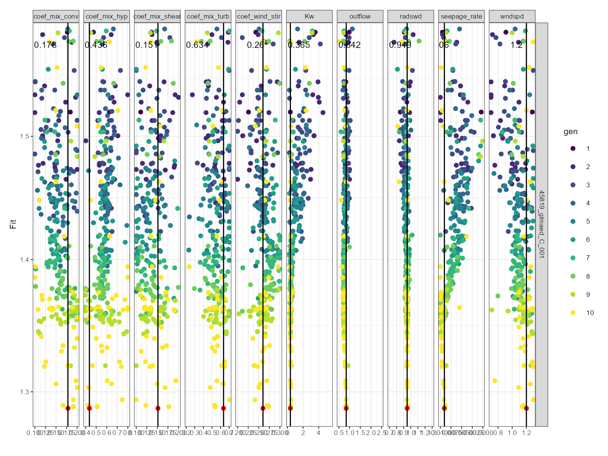
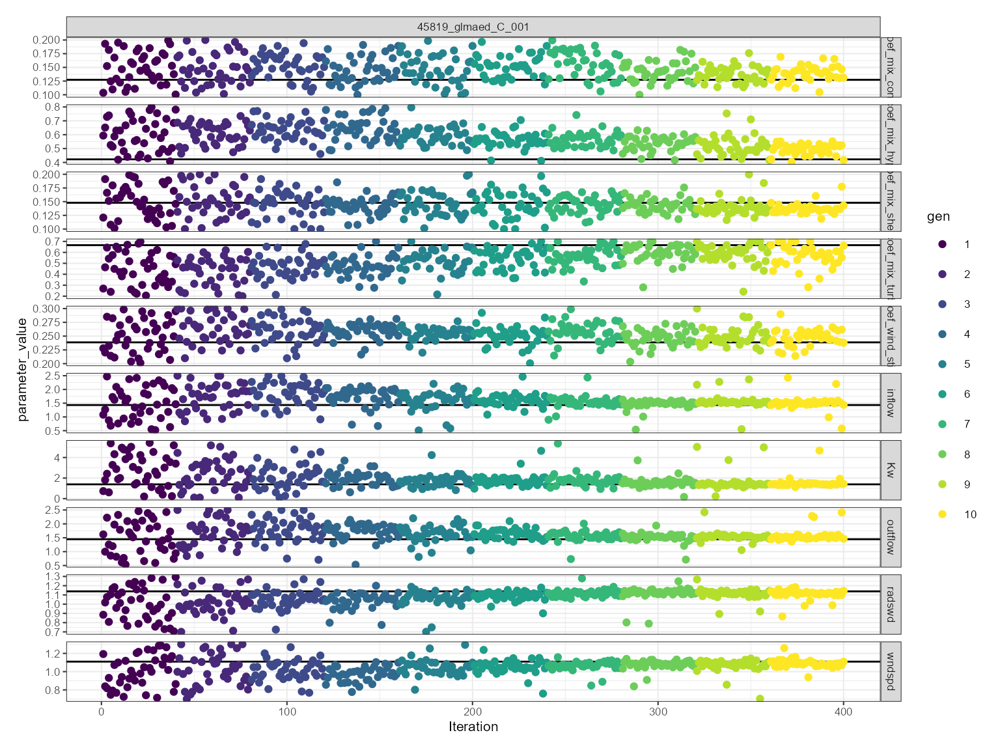

Setup
First, we will load the AEME and aemetools
package:
Create a folder for running the example calibration setup.
tmpdir <- "calib-test"
dir.create(tmpdir, showWarnings = FALSE)
aeme_dir <- system.file("extdata/lake/", package = "AEME")
# Copy files from package into tempdir
file.copy(aeme_dir, tmpdir, recursive = TRUE)
#> [1] TRUE
path <- file.path(tmpdir, "lake")
list.files(path, recursive = TRUE)
#> [1] "aeme.yaml" "data/catchment.dbf" "data/catchment.prj"
#> [4] "data/catchment.shp" "data/catchment.shx" "data/hypsograph.csv"
#> [7] "data/inflow_FWMT.csv" "data/lake.dbf" "data/lake.prj"
#> [10] "data/lake.shp" "data/lake.shx" "data/lake_obs.csv"
#> [13] "data/meteo.csv" "data/outflow.csv" "data/water_level.csv"
#> [16] "model_controls.csv"Build AEME ensemble
Using the AEME functions, we will build the AEME model
setup. For this example, we will use the glm_aed model. The
build_aeme function will
aeme <- yaml_to_aeme(path = path, "aeme.yaml")
model_controls <- AEME::get_model_controls()
inf_factor = c("dy_cd" = 1, "glm_aed" = 1, "gotm_wet" = 1)
outf_factor = c("dy_cd" = 1, "glm_aed" = 1, "gotm_wet" = 1)
model <- c("glm_aed")
aeme <- build_aeme(path = path, aeme = aeme,
model = model, model_controls = model_controls,
inf_factor = inf_factor, ext_elev = 5,
use_bgc = FALSE)Run the model ensemble using the run_aeme function to
make sure the current model setup is working.
aeme <- run_aeme(aeme = aeme, model = model, verbose = FALSE,
path = path)
#> Running models... (Have you tried parallelizing?) [2024-06-13 01:50:26]
#> GLM-AED run successful! [2024-06-13 01:50:26]
#> Model run complete![2024-06-13 01:50:26]
#> Retrieving and formatting temp for model glm_aed
#> Retrieving and formatting salt for model glm_aed
plot(aeme)Simple plots of surface and bottom water temperarure an lake level after running AEME with the glm_aed model.
Load parameters to be used for the calibration
Parameters are loaded from the aemetools package within
the aeme_parameters dataframe. The parameters are stored in
a data frame with the following columns:
model: The model namefile: The file name of the model parameter filename: The parameter namevalue: The parameter valuemin: The minimum value of the parametermax: The maximum value of the parameter
Parameters to be used for the calibration. (man)
utils::data("aeme_parameters", package = "aemetools")
aeme_parameters| model | file | name | value | min | max | module | description | default | group |
|---|---|---|---|---|---|---|---|---|---|
| glm_aed | glm3.nml | light/Kw | 5.8e-01 | 0.100 | 5.52e+00 | hydrodynamic | NA | NA | NA |
| glm_aed | met | MET_wndspd | 1.0e+00 | 0.700 | 1.30e+00 | hydrodynamic | NA | NA | NA |
| glm_aed | met | MET_radswd | 1.0e+00 | 0.700 | 1.30e+00 | hydrodynamic | NA | NA | NA |
| glm_aed | glm3.nml | mixing/coef_mix_conv | 1.4e-01 | 0.100 | 2.00e-01 | hydrodynamic | NA | NA | NA |
| glm_aed | glm3.nml | mixing/coef_wind_stir | 2.1e-01 | 0.200 | 3.00e-01 | hydrodynamic | NA | NA | NA |
| glm_aed | glm3.nml | mixing/coef_mix_shear | 1.4e-01 | 0.100 | 2.00e-01 | hydrodynamic | NA | NA | NA |
| glm_aed | glm3.nml | mixing/coef_mix_turb | 5.6e-01 | 0.200 | 7.00e-01 | hydrodynamic | NA | NA | NA |
| glm_aed | glm3.nml | mixing/coef_mix_hyp | 7.4e-01 | 0.400 | 8.00e-01 | hydrodynamic | NA | NA | NA |
| glm_aed | glm3.nml | outflow/seepage_rate | 0.0e+00 | -0.010 | 0.00e+00 | hydrodynamic | NA | NA | NA |
| glm_aed | wdr | outflow | 1.0e+00 | 0.500 | 2.50e+00 | hydrodynamic | NA | NA | NA |
| glm_aed | inf | inflow | 1.0e+00 | 0.500 | 2.50e+00 | hydrodynamic | NA | NA | NA |
| gotm_wet | gotm.yaml | turbulence/turb_param/k_min | 6.0e-07 | 0.000 | 1.00e-05 | hydrodynamic | NA | NA | NA |
| gotm_wet | gotm.yaml | light_extinction/A/constant_value | 5.5e-01 | 0.395 | 6.59e-01 | hydrodynamic | NA | NA | NA |
| gotm_wet | gotm.yaml | light_extinction/g1/constant_value | 5.9e-01 | 0.440 | 7.40e-01 | hydrodynamic | NA | NA | NA |
| gotm_wet | gotm.yaml | light_extinction/g2/constant_value | 2.0e-01 | 0.050 | 2.70e+00 | hydrodynamic | NA | NA | NA |
| gotm_wet | met | MET_wndspd | 1.0e+00 | 0.700 | 1.30e+00 | hydrodynamic | NA | NA | NA |
| gotm_wet | met | MET_radswd | 1.0e+00 | 0.700 | 1.30e+00 | hydrodynamic | NA | NA | NA |
| gotm_wet | wdr | outflow | 1.0e+00 | 0.500 | 2.50e+00 | hydrodynamic | NA | NA | NA |
| gotm_wet | inf | inflow | 1.0e+00 | 0.500 | 2.50e+00 | hydrodynamic | NA | NA | NA |
| dy_cd | cfg | light_extinction_coefficient/7 | 9.0e-01 | 0.100 | 1.40e+00 | hydrodynamic | NA | NA | NA |
| dy_cd | dyresm3p1.par | vertical_mixing_coeff/15 | 2.0e+02 | 50.000 | 7.50e+02 | hydrodynamic | NA | NA | NA |
| dy_cd | met | MET_wndspd | 1.0e+00 | 0.700 | 1.30e+00 | hydrodynamic | NA | NA | NA |
| dy_cd | wdr | outflow | 1.0e+00 | 0.500 | 2.50e+00 | hydrodynamic | NA | NA | NA |
| dy_cd | inf | inflow | 1.0e+00 | 0.500 | 2.50e+00 | hydrodynamic | NA | NA | NA |
This dataframe can be modified to change the parameter values. For
example, we can change the light/Kw parameter for the
glm_aed model to 0.1:
aeme_parameters[aeme_parameters$model == "glm_aed" &
aeme_parameters$name == "light/Kw", "value"] <- 0.1
aeme_parameters| model | file | name | value | min | max | module | description | default | group |
|---|---|---|---|---|---|---|---|---|---|
| glm_aed | glm3.nml | light/Kw | 1.0e-01 | 0.100 | 5.52e+00 | hydrodynamic | NA | NA | NA |
| glm_aed | met | MET_wndspd | 1.0e+00 | 0.700 | 1.30e+00 | hydrodynamic | NA | NA | NA |
| glm_aed | met | MET_radswd | 1.0e+00 | 0.700 | 1.30e+00 | hydrodynamic | NA | NA | NA |
| glm_aed | glm3.nml | mixing/coef_mix_conv | 1.4e-01 | 0.100 | 2.00e-01 | hydrodynamic | NA | NA | NA |
| glm_aed | glm3.nml | mixing/coef_wind_stir | 2.1e-01 | 0.200 | 3.00e-01 | hydrodynamic | NA | NA | NA |
| glm_aed | glm3.nml | mixing/coef_mix_shear | 1.4e-01 | 0.100 | 2.00e-01 | hydrodynamic | NA | NA | NA |
| glm_aed | glm3.nml | mixing/coef_mix_turb | 5.6e-01 | 0.200 | 7.00e-01 | hydrodynamic | NA | NA | NA |
| glm_aed | glm3.nml | mixing/coef_mix_hyp | 7.4e-01 | 0.400 | 8.00e-01 | hydrodynamic | NA | NA | NA |
| glm_aed | glm3.nml | outflow/seepage_rate | 0.0e+00 | -0.010 | 0.00e+00 | hydrodynamic | NA | NA | NA |
| glm_aed | wdr | outflow | 1.0e+00 | 0.500 | 2.50e+00 | hydrodynamic | NA | NA | NA |
| glm_aed | inf | inflow | 1.0e+00 | 0.500 | 2.50e+00 | hydrodynamic | NA | NA | NA |
| gotm_wet | gotm.yaml | turbulence/turb_param/k_min | 6.0e-07 | 0.000 | 1.00e-05 | hydrodynamic | NA | NA | NA |
| gotm_wet | gotm.yaml | light_extinction/A/constant_value | 5.5e-01 | 0.395 | 6.59e-01 | hydrodynamic | NA | NA | NA |
| gotm_wet | gotm.yaml | light_extinction/g1/constant_value | 5.9e-01 | 0.440 | 7.40e-01 | hydrodynamic | NA | NA | NA |
| gotm_wet | gotm.yaml | light_extinction/g2/constant_value | 2.0e-01 | 0.050 | 2.70e+00 | hydrodynamic | NA | NA | NA |
| gotm_wet | met | MET_wndspd | 1.0e+00 | 0.700 | 1.30e+00 | hydrodynamic | NA | NA | NA |
| gotm_wet | met | MET_radswd | 1.0e+00 | 0.700 | 1.30e+00 | hydrodynamic | NA | NA | NA |
| gotm_wet | wdr | outflow | 1.0e+00 | 0.500 | 2.50e+00 | hydrodynamic | NA | NA | NA |
| gotm_wet | inf | inflow | 1.0e+00 | 0.500 | 2.50e+00 | hydrodynamic | NA | NA | NA |
| dy_cd | cfg | light_extinction_coefficient/7 | 9.0e-01 | 0.100 | 1.40e+00 | hydrodynamic | NA | NA | NA |
| dy_cd | dyresm3p1.par | vertical_mixing_coeff/15 | 2.0e+02 | 50.000 | 7.50e+02 | hydrodynamic | NA | NA | NA |
| dy_cd | met | MET_wndspd | 1.0e+00 | 0.700 | 1.30e+00 | hydrodynamic | NA | NA | NA |
| dy_cd | wdr | outflow | 1.0e+00 | 0.500 | 2.50e+00 | hydrodynamic | NA | NA | NA |
| dy_cd | inf | inflow | 1.0e+00 | 0.500 | 2.50e+00 | hydrodynamic | NA | NA | NA |
This dataframe can be passed to the run_aeme_param
function to run AEME with the parameter values specified in the
dataframe. This function is different to the run_aeme
function in that it does not return an aeme object, but the
model output is generate within the lake folder.
run_aeme_param(aeme = aeme, param = aeme_parameters,
model = model, path = path)
#> Running models... (Have you tried parallelizing?) [2024-06-13 01:50:32]
#> GLM-AED run successful! [2024-06-13 01:50:32]
#> Model run complete![2024-06-13 01:50:32]Calibration setup
Define fitness function
First, we will define a function for the calibration function to use
to calculate the fitness of the model. This function takes a dataframe
as an argument. The dataframe contains the observed data
(obs) and the modelled data (model). The
function should return a single value.
Here we use the root mean square error (RMSE) as the fitness function:
\[\text{RMSE}(y, \hat{y}) = \sqrt{\frac{\sum_{i=0}^{N - 1} (y_i - \hat{y}_i)^2}{N}}\]
Different functions can be applied to different variables. For example, we can use the RMSE for the lake level and the mean absolute error (MAE) for the water temperature:
Then these would be combined into a named list of functions which
will be passed to the calib_aeme function. They are named
according to the target variable.
# Create list of functions
FUN_list <- list(HYD_temp = mae, LKE_lvlwtr = rmse)Define control parameters
Next, we will define the control parameters for the calibration. The
control parameters are generated using the create_control
funtion and are then passed to the calib_aeme function. The
control parameters for calibration are as follows:
?create_control| create_control | R Documentation |
Create control list for calibration or sensitivity analysis
Arguments
method |
The method to be used. It can be either "calib" for calibration or "sa" for sensitivity analysis. |
... |
Additional arguments to be passed to the function
For calibration, the arguments are:
For sensitivity analysis, the arguments are:
|
Here is an example of the control parameters:
ctrl <- create_control(method = "calib", VTR = 1, NP = 40, itermax = 400,
reltol = 0.07, cutoff = 0.25, mutate = 0.1,
parallel = FALSE, file_type = "csv",
na_value = 999, ncore = 2)Define variables
Next we will select the variables to use for the calibration. The
variables selected need to use the AEME variable definition e.g.
c("HYD_temp", "LKE_lvlwtr"). Weights need to be attributed
to each of the variables. The weights are used to scale the fitness
value. This can be helpful if the variables have different units. For
example, if the temperature is in degrees Celsius and the water level is
in metres, then the water level will have a much larger impact on the
fitness value. Therefore, the weight for the water level should be much
smaller than the weight for the temperature.
The weights are specified in a named vector. The names of the vector should be the same as the variable names.
Run calibration
Once we have defined the fitness function, control parameters and
variables, we can run the calibration. The calib_aeme
function takes the following arguments:
?calib_aeme| calib_aeme | R Documentation |
Calibrate AEME model parameters using observations
Arguments
aeme |
aeme; data object. |
path |
filepath; where input files are located relative to 'config'. |
param |
dataframe; of parameters read in from a csv file. Requires the columns c("model", "file", "name", "value", "min", "max", "log") |
model |
string; for which model to calibrate. Only one model can be passed. Options are c("dy_cd", "glm_aed" and "gotm_wet"). |
model_controls |
dataframe; of configuration loaded from "model_controls.csv". |
vars_sim |
vector; of variables names to be used in the calculation of model fit. Currently only supports using one variable. |
FUN_list |
list of functions; named according to the variables in the
|
ctrl |
list; of controls for sensitivity analysis function created using
the |
weights |
vector; of weights for each variable in vars_sim. Default to c(1). |
param_df |
dataframe; of parameters to be used in the calibration. Requires the columns c("model", "file", "name", "value", "min", "max"). This is used to restart from a previous calibration. |
The calib_aeme function writes the calibration results
to the file specified after each generation. This allows the calibration
to be stopped and restarted at any time. The calib_aeme
function returns the ctrl object with any updated
values.
sim_id <- calib_aeme(aeme = aeme, path = path,
param = aeme_parameters, model = model,
FUN_list = FUN_list, ctrl = ctrl,
vars_sim = vars_sim, weights = weights)
#> Extracting indices for glm_aed modelled variables [2024-06-13 01:50:33]
#> Completed glm_aed! [2024-06-13 01:50:34]
#> Starting generation 1/10, 40 members. [2024-06-13 01:50:34]
#> light/Kw MET_wndspd MET_radswd mixing/coef_mix_conv
#> mean 2.809 1.0000 1.0000 0.14990
#> median 2.834 1.0050 1.0040 0.15110
#> sd 1.592 0.1752 0.1753 0.02917
#> mixing/coef_wind_stir mixing/coef_mix_shear mixing/coef_mix_turb
#> mean 0.25020 0.14980 0.4500
#> median 0.25090 0.15050 0.4503
#> sd 0.02913 0.02933 0.1456
#> mixing/coef_mix_hyp outflow/seepage_rate outflow inflow
#> mean 0.6004 -0.004992 1.499 1.5000
#> median 0.5974 -0.005026 1.505 1.4950
#> sd 0.1170 0.002923 0.584 0.5846
#> Running models... (Have you tried parallelizing?) [2024-06-13 01:50:34]
#> GLM-AED run successful! [2024-06-13 01:50:35]
#> Model run complete![2024-06-13 01:50:35]
#> [1] 1.756469
#> Running models... (Have you tried parallelizing?) [2024-06-13 01:50:35]
#> GLM-AED run successful! [2024-06-13 01:50:36]
#> Model run complete![2024-06-13 01:50:36]
#> [1] 2.378251
#> Running models... (Have you tried parallelizing?) [2024-06-13 01:50:36]
#> GLM-AED run successful! [2024-06-13 01:50:37]
#> Model run complete![2024-06-13 01:50:37]
#> [1] 999
#> Running models... (Have you tried parallelizing?) [2024-06-13 01:50:37]
#> GLM-AED run successful! [2024-06-13 01:50:37]
#> Model run complete![2024-06-13 01:50:37]
#> [1] 1.846222
#> Running models... (Have you tried parallelizing?) [2024-06-13 01:50:38]
#> GLM-AED run successful! [2024-06-13 01:50:38]
#> Model run complete![2024-06-13 01:50:38]
#> [1] 2.713115
#> Running models... (Have you tried parallelizing?) [2024-06-13 01:50:39]
#> GLM-AED run successful! [2024-06-13 01:50:39]
#> Model run complete![2024-06-13 01:50:39]
#> [1] 999
#> Running models... (Have you tried parallelizing?) [2024-06-13 01:50:39]
#> GLM-AED run successful! [2024-06-13 01:50:40]
#> Model run complete![2024-06-13 01:50:40]
#> [1] 1.894005
#> Running models... (Have you tried parallelizing?) [2024-06-13 01:50:40]
#> GLM-AED run successful! [2024-06-13 01:50:41]
#> Model run complete![2024-06-13 01:50:41]
#> [1] 999
#> Running models... (Have you tried parallelizing?) [2024-06-13 01:50:41]
#> GLM-AED run successful! [2024-06-13 01:50:42]
#> Model run complete![2024-06-13 01:50:42]
#> [1] 1.63743
#> Running models... (Have you tried parallelizing?) [2024-06-13 01:50:42]
#> GLM-AED run successful! [2024-06-13 01:50:42]
#> Model run complete![2024-06-13 01:50:42]
#> [1] 999
#> Running models... (Have you tried parallelizing?) [2024-06-13 01:50:43]
#> GLM-AED run successful! [2024-06-13 01:50:43]
#> Model run complete![2024-06-13 01:50:43]
#> [1] 2.574835
#> Running models... (Have you tried parallelizing?) [2024-06-13 01:50:43]
#> GLM-AED run successful! [2024-06-13 01:50:44]
#> Model run complete![2024-06-13 01:50:44]
#> [1] 2.019118
#> Running models... (Have you tried parallelizing?) [2024-06-13 01:50:44]
#> GLM-AED run successful! [2024-06-13 01:50:45]
#> Model run complete![2024-06-13 01:50:45]
#> [1] 1.822013
#> Running models... (Have you tried parallelizing?) [2024-06-13 01:50:45]
#> GLM-AED run successful! [2024-06-13 01:50:46]
#> Model run complete![2024-06-13 01:50:46]
#> [1] 1.687128
#> Running models... (Have you tried parallelizing?) [2024-06-13 01:50:46]
#> GLM-AED run successful! [2024-06-13 01:50:47]
#> Model run complete![2024-06-13 01:50:47]
#> [1] 2.765093
#> Running models... (Have you tried parallelizing?) [2024-06-13 01:50:47]
#> GLM-AED run successful! [2024-06-13 01:50:48]
#> Model run complete![2024-06-13 01:50:48]
#> [1] 1.807522
#> Running models... (Have you tried parallelizing?) [2024-06-13 01:50:48]
#> GLM-AED run successful! [2024-06-13 01:50:49]
#> Model run complete![2024-06-13 01:50:49]
#> [1] 2.681356
#> Running models... (Have you tried parallelizing?) [2024-06-13 01:50:49]
#> GLM-AED run successful! [2024-06-13 01:50:50]
#> Model run complete![2024-06-13 01:50:50]
#> [1] 3.111629
#> Running models... (Have you tried parallelizing?) [2024-06-13 01:50:50]
#> GLM-AED run successful! [2024-06-13 01:50:50]
#> Model run complete![2024-06-13 01:50:50]
#> [1] 999
#> Running models... (Have you tried parallelizing?) [2024-06-13 01:50:51]
#> GLM-AED run successful! [2024-06-13 01:50:51]
#> Model run complete![2024-06-13 01:50:51]
#> [1] 2.070613
#> Running models... (Have you tried parallelizing?) [2024-06-13 01:50:51]
#> GLM-AED run successful! [2024-06-13 01:50:52]
#> Model run complete![2024-06-13 01:50:52]
#> [1] 1.789376
#> Running models... (Have you tried parallelizing?) [2024-06-13 01:50:52]
#> GLM-AED run successful! [2024-06-13 01:50:53]
#> Model run complete![2024-06-13 01:50:53]
#> [1] 2.938832
#> Running models... (Have you tried parallelizing?) [2024-06-13 01:50:53]
#> GLM-AED run successful! [2024-06-13 01:50:54]
#> Model run complete![2024-06-13 01:50:54]
#> [1] 999
#> Running models... (Have you tried parallelizing?) [2024-06-13 01:50:54]
#> GLM-AED run successful! [2024-06-13 01:50:55]
#> Model run complete![2024-06-13 01:50:55]
#> [1] 999
#> Running models... (Have you tried parallelizing?) [2024-06-13 01:50:55]
#> GLM-AED run successful! [2024-06-13 01:50:55]
#> Model run complete![2024-06-13 01:50:55]
#> [1] 999
#> Running models... (Have you tried parallelizing?) [2024-06-13 01:50:56]
#> GLM-AED run successful! [2024-06-13 01:50:56]
#> Model run complete![2024-06-13 01:50:56]
#> [1] 1.778701
#> Running models... (Have you tried parallelizing?) [2024-06-13 01:50:56]
#> GLM-AED run successful! [2024-06-13 01:50:57]
#> Model run complete![2024-06-13 01:50:57]
#> [1] 2.904502
#> Running models... (Have you tried parallelizing?) [2024-06-13 01:50:57]
#> GLM-AED run successful! [2024-06-13 01:50:58]
#> Model run complete![2024-06-13 01:50:58]
#> [1] 2.023552
#> Running models... (Have you tried parallelizing?) [2024-06-13 01:50:58]
#> GLM-AED run successful! [2024-06-13 01:50:59]
#> Model run complete![2024-06-13 01:50:59]
#> [1] 1.818858
#> Running models... (Have you tried parallelizing?) [2024-06-13 01:50:59]
#> GLM-AED run successful! [2024-06-13 01:51:00]
#> Model run complete![2024-06-13 01:51:00]
#> [1] 2.342112
#> Running models... (Have you tried parallelizing?) [2024-06-13 01:51:00]
#> GLM-AED run successful! [2024-06-13 01:51:01]
#> Model run complete![2024-06-13 01:51:01]
#> [1] 999
#> Running models... (Have you tried parallelizing?) [2024-06-13 01:51:01]
#> GLM-AED run successful! [2024-06-13 01:51:02]
#> Model run complete![2024-06-13 01:51:02]
#> [1] 1.860373
#> Running models... (Have you tried parallelizing?) [2024-06-13 01:51:02]
#> GLM-AED run successful! [2024-06-13 01:51:03]
#> Model run complete![2024-06-13 01:51:03]
#> [1] 2.121168
#> Running models... (Have you tried parallelizing?) [2024-06-13 01:51:03]
#> GLM-AED run successful! [2024-06-13 01:51:03]
#> Model run complete![2024-06-13 01:51:03]
#> [1] 1.877037
#> Running models... (Have you tried parallelizing?) [2024-06-13 01:51:04]
#> GLM-AED run successful! [2024-06-13 01:51:04]
#> Model run complete![2024-06-13 01:51:04]
#> [1] 999
#> Running models... (Have you tried parallelizing?) [2024-06-13 01:51:05]
#> GLM-AED run successful! [2024-06-13 01:51:05]
#> Model run complete![2024-06-13 01:51:05]
#> [1] 1.853756
#> Running models... (Have you tried parallelizing?) [2024-06-13 01:51:05]
#> GLM-AED run successful! [2024-06-13 01:51:06]
#> Model run complete![2024-06-13 01:51:06]
#> [1] 1.98968
#> Running models... (Have you tried parallelizing?) [2024-06-13 01:51:06]
#> GLM-AED run successful! [2024-06-13 01:51:07]
#> Model run complete![2024-06-13 01:51:07]
#> [1] 1.806533
#> Running models... (Have you tried parallelizing?) [2024-06-13 01:51:07]
#> GLM-AED run successful! [2024-06-13 01:51:08]
#> Model run complete![2024-06-13 01:51:08]
#> [1] 1.780495
#> Running models... (Have you tried parallelizing?) [2024-06-13 01:51:08]
#> GLM-AED run successful! [2024-06-13 01:51:09]
#> Model run complete![2024-06-13 01:51:09]
#> [1] 3.548864
#> Best fit: 1.64 (sd: 437)
#> Parameters: [1.89, 1.1, 1.1, 0.195, 0.252, 0.114, 0.631, 0.42, -0.000887, 0.762, 0.877]
#> Writing output for generation 1 to simulation_data.csv with sim ID: 45819_glmaed_C_001 [2024-06-13 01:51:09]
#> Survival rate: 0.75
#> Starting generation 2/10, 40 members. [2024-06-13 01:51:09]
#> light/Kw MET_wndspd MET_radswd mixing/coef_mix_conv
#> mean 2.863 1.0420 0.9266 0.14430
#> median 2.709 1.0830 0.9073 0.14370
#> sd 1.662 0.1479 0.1470 0.02833
#> mixing/coef_wind_stir mixing/coef_mix_shear mixing/coef_mix_turb
#> mean 0.24190 0.13560 0.4918
#> median 0.24300 0.12780 0.4827
#> sd 0.02112 0.02721 0.1350
#> mixing/coef_mix_hyp outflow/seepage_rate outflow inflow
#> mean 0.5502 -0.004311 1.3630 1.5430
#> median 0.5414 -0.004583 1.3550 1.5420
#> sd 0.1067 0.002904 0.4492 0.4361
#> Running models... (Have you tried parallelizing?) [2024-06-13 01:51:09]
#> GLM-AED run successful! [2024-06-13 01:51:09]
#> Model run complete![2024-06-13 01:51:09]
#> NA/light/Kw NA/MET_wndspd NA/MET_radswd NA/mixing/coef_mix_conv
#> 1 2.670331 1.071302 0.9921932 0.1364903
#> NA/mixing/coef_wind_stir NA/mixing/coef_mix_shear NA/mixing/coef_mix_turb
#> 1 0.2306546 0.1043356 0.5724529
#> NA/mixing/coef_mix_hyp NA/outflow/seepage_rate NA/outflow NA/inflow fit
#> 1 0.6146945 -0.007826005 1.241853 1.452372 1.567017
#> HYD_temp LKE_lvlwtr
#> 1 1.453495 0.1135225
#> Running models... (Have you tried parallelizing?) [2024-06-13 01:51:10]
#> GLM-AED run successful! [2024-06-13 01:51:10]
#> Model run complete![2024-06-13 01:51:10]
#> NA/light/Kw NA/MET_wndspd NA/MET_radswd NA/mixing/coef_mix_conv
#> 2 4.945954 1.092621 0.8067437 0.1
#> NA/mixing/coef_wind_stir NA/mixing/coef_mix_shear NA/mixing/coef_mix_turb
#> 2 0.2299485 0.166212 0.2437381
#> NA/mixing/coef_mix_hyp NA/outflow/seepage_rate NA/outflow NA/inflow fit
#> 2 0.6442542 -0.009349273 1.627288 1.715331 1.664155
#> HYD_temp LKE_lvlwtr
#> 2 1.619344 0.0448109
#> Running models... (Have you tried parallelizing?) [2024-06-13 01:51:11]
#> GLM-AED run successful! [2024-06-13 01:51:11]
#> Model run complete![2024-06-13 01:51:11]
#> NA/light/Kw NA/MET_wndspd NA/MET_radswd NA/mixing/coef_mix_conv
#> 5 4.412487 0.7738634 0.7 0.1115342
#> NA/mixing/coef_wind_stir NA/mixing/coef_mix_shear NA/mixing/coef_mix_turb
#> 5 0.2742152 0.1698646 0.4993269
#> NA/mixing/coef_mix_hyp NA/outflow/seepage_rate NA/outflow NA/inflow fit
#> 5 0.5182271 -0.001121714 1.950075 2.122977 1.825247
#> HYD_temp LKE_lvlwtr
#> 5 1.587511 0.2377364
#> Running models... (Have you tried parallelizing?) [2024-06-13 01:51:11]
#> GLM-AED run successful! [2024-06-13 01:51:12]
#> Model run complete![2024-06-13 01:51:12]
#> NA/light/Kw NA/MET_wndspd NA/MET_radswd NA/mixing/coef_mix_conv
#> 6 2.739711 1.119424 0.9819915 0.181307
#> NA/mixing/coef_wind_stir NA/mixing/coef_mix_shear NA/mixing/coef_mix_turb
#> 6 0.2617928 0.1264426 0.4275434
#> NA/mixing/coef_mix_hyp NA/outflow/seepage_rate NA/outflow NA/inflow fit
#> 6 0.5372838 0 0.888957 1.367352 1.874987
#> HYD_temp LKE_lvlwtr
#> 6 1.412074 0.4629128
#> Running models... (Have you tried parallelizing?) [2024-06-13 01:51:12]
#> GLM-AED run successful! [2024-06-13 01:51:13]
#> Model run complete![2024-06-13 01:51:13]
#> NA/light/Kw NA/MET_wndspd NA/MET_radswd NA/mixing/coef_mix_conv
#> 9 4.877267 0.8304461 0.7410311 0.1275881
#> NA/mixing/coef_wind_stir NA/mixing/coef_mix_shear NA/mixing/coef_mix_turb
#> 9 0.243136 0.1743037 0.4798215
#> NA/mixing/coef_mix_hyp NA/outflow/seepage_rate NA/outflow NA/inflow fit
#> 9 0.7687552 -0.006786715 0.6585487 2.305033 2.106392
#> HYD_temp LKE_lvlwtr
#> 9 1.598656 0.5077366
#> Running models... (Have you tried parallelizing?) [2024-06-13 01:51:13]
#> GLM-AED run successful! [2024-06-13 01:51:14]
#> Model run complete![2024-06-13 01:51:14]
#> NA/light/Kw NA/MET_wndspd NA/MET_radswd NA/mixing/coef_mix_conv
#> 10 4.159582 1.111936 0.9078748 0.1230671
#> NA/mixing/coef_wind_stir NA/mixing/coef_mix_shear NA/mixing/coef_mix_turb
#> 10 0.2 0.1398107 0.3944867
#> NA/mixing/coef_mix_hyp NA/outflow/seepage_rate NA/outflow NA/inflow fit
#> 10 0.6918165 -0.0007298523 0.5 0.7295775 1.767891
#> HYD_temp LKE_lvlwtr
#> 10 1.512868 0.2550234
#> Running models... (Have you tried parallelizing?) [2024-06-13 01:51:14]
#> GLM-AED run successful! [2024-06-13 01:51:15]
#> Model run complete![2024-06-13 01:51:15]
#> NA/light/Kw NA/MET_wndspd NA/MET_radswd NA/mixing/coef_mix_conv
#> 13 1.471413 1.201234 0.9811566 0.1642521
#> NA/mixing/coef_wind_stir NA/mixing/coef_mix_shear NA/mixing/coef_mix_turb
#> 13 0.2571563 0.1090046 0.4328908
#> NA/mixing/coef_mix_hyp NA/outflow/seepage_rate NA/outflow NA/inflow fit
#> 13 0.5720089 -0.0003839508 1.0337 1.440683 1.755001
#> HYD_temp LKE_lvlwtr
#> 13 1.338602 0.4163995
#> Running models... (Have you tried parallelizing?) [2024-06-13 01:51:15]
#> GLM-AED run successful! [2024-06-13 01:51:16]
#> Model run complete![2024-06-13 01:51:16]
#> NA/light/Kw NA/MET_wndspd NA/MET_radswd NA/mixing/coef_mix_conv
#> 14 0.1 1.27019 1.108983 0.1483651
#> NA/mixing/coef_wind_stir NA/mixing/coef_mix_shear NA/mixing/coef_mix_turb
#> 14 0.2445704 0.1001039 0.435966
#> NA/mixing/coef_mix_hyp NA/outflow/seepage_rate NA/outflow NA/inflow fit
#> 14 0.407805 -0.001348757 0.6553994 0.9576903 1.961944
#> HYD_temp LKE_lvlwtr
#> 14 1.644008 0.317936
#> Running models... (Have you tried parallelizing?) [2024-06-13 01:51:16]
#> GLM-AED run successful! [2024-06-13 01:51:17]
#> Model run complete![2024-06-13 01:51:17]
#> NA/light/Kw NA/MET_wndspd NA/MET_radswd NA/mixing/coef_mix_conv
#> 17 3.436495 1.062726 1.150008 0.1472645
#> NA/mixing/coef_wind_stir NA/mixing/coef_mix_shear NA/mixing/coef_mix_turb
#> 17 0.2 0.1353136 0.4854971
#> NA/mixing/coef_mix_hyp NA/outflow/seepage_rate NA/outflow NA/inflow fit
#> 17 0.5022288 -0.009811306 0.9426786 0.8745041 1.948292
#> HYD_temp LKE_lvlwtr
#> 17 1.707406 0.2408857
#> Running models... (Have you tried parallelizing?) [2024-06-13 01:51:17]
#> GLM-AED run successful! [2024-06-13 01:51:18]
#> Model run complete![2024-06-13 01:51:18]
#> NA/light/Kw NA/MET_wndspd NA/MET_radswd NA/mixing/coef_mix_conv
#> 18 2.678382 1.080065 0.8746392 0.129883
#> NA/mixing/coef_wind_stir NA/mixing/coef_mix_shear NA/mixing/coef_mix_turb
#> 18 0.2465397 0.1358499 0.4056471
#> NA/mixing/coef_mix_hyp NA/outflow/seepage_rate NA/outflow NA/inflow fit
#> 18 0.5667461 -0.001903218 1.417946 1.753665 1.832463
#> HYD_temp LKE_lvlwtr
#> 18 1.490664 0.3417997
#> Running models... (Have you tried parallelizing?) [2024-06-13 01:51:18]
#> GLM-AED run successful! [2024-06-13 01:51:19]
#> Model run complete![2024-06-13 01:51:19]
#> NA/light/Kw NA/MET_wndspd NA/MET_radswd NA/mixing/coef_mix_conv
#> 21 5.52 0.7843669 0.9764026 0.1479122
#> NA/mixing/coef_wind_stir NA/mixing/coef_mix_shear NA/mixing/coef_mix_turb
#> 21 0.2169713 0.1759347 0.7
#> NA/mixing/coef_mix_hyp NA/outflow/seepage_rate NA/outflow NA/inflow fit
#> 21 0.4 -0.002469776 1.040294 1.024153 1.825346
#> HYD_temp LKE_lvlwtr
#> 21 1.80265 0.02269637
#> Running models... (Have you tried parallelizing?) [2024-06-13 01:51:19]
#> GLM-AED run successful! [2024-06-13 01:51:20]
#> Model run complete![2024-06-13 01:51:20]
#> NA/light/Kw NA/MET_wndspd NA/MET_radswd NA/mixing/coef_mix_conv
#> 22 2.871508 1.060593 0.8666375 0.1553895
#> NA/mixing/coef_wind_stir NA/mixing/coef_mix_shear NA/mixing/coef_mix_turb
#> 22 0.2582536 0.122617 0.5535337
#> NA/mixing/coef_mix_hyp NA/outflow/seepage_rate NA/outflow NA/inflow fit
#> 22 0.6192685 -0.004876166 1.63369 1.791131 1.632173
#> HYD_temp LKE_lvlwtr
#> 22 1.499917 0.1322552
#> Running models... (Have you tried parallelizing?) [2024-06-13 01:51:20]
#> GLM-AED run successful! [2024-06-13 01:51:20]
#> Model run complete![2024-06-13 01:51:20]
#> NA/light/Kw NA/MET_wndspd NA/MET_radswd NA/mixing/coef_mix_conv
#> 25 1.459209 1.253013 1.137004 0.1913931
#> NA/mixing/coef_wind_stir NA/mixing/coef_mix_shear NA/mixing/coef_mix_turb
#> 25 0.2255436 0.1035899 0.4191008
#> NA/mixing/coef_mix_hyp NA/outflow/seepage_rate NA/outflow NA/inflow fit
#> 25 0.5456121 -0.003145993 0.7455533 1.051435 1.652288
#> HYD_temp LKE_lvlwtr
#> 25 1.39095 0.261338
#> Running models... (Have you tried parallelizing?) [2024-06-13 01:51:21]
#> GLM-AED run successful! [2024-06-13 01:51:21]
#> Model run complete![2024-06-13 01:51:21]
#> NA/light/Kw NA/MET_wndspd NA/MET_radswd NA/mixing/coef_mix_conv
#> 26 1.240003 1.182287 1.067226 0.1671925
#> NA/mixing/coef_wind_stir NA/mixing/coef_mix_shear NA/mixing/coef_mix_turb
#> 26 0.2303775 0.1157496 0.378053
#> NA/mixing/coef_mix_hyp NA/outflow/seepage_rate NA/outflow NA/inflow fit
#> 26 0.648948 -0.005775437 1.322632 1.515657 1.470925
#> HYD_temp LKE_lvlwtr
#> 26 1.342859 0.1280661
#> Running models... (Have you tried parallelizing?) [2024-06-13 01:51:22]
#> GLM-AED run successful! [2024-06-13 01:51:22]
#> Model run complete![2024-06-13 01:51:22]
#> NA/light/Kw NA/MET_wndspd NA/MET_radswd NA/mixing/coef_mix_conv
#> 29 5.52 0.7911505 0.7966157 0.1673493
#> NA/mixing/coef_wind_stir NA/mixing/coef_mix_shear NA/mixing/coef_mix_turb
#> 29 0.2606704 0.1653931 0.7
#> NA/mixing/coef_mix_hyp NA/outflow/seepage_rate NA/outflow NA/inflow fit
#> 29 0.6011408 -0.003870594 1.801379 1.824824 1.59307
#> HYD_temp LKE_lvlwtr
#> 29 1.548468 0.04460246
#> Running models... (Have you tried parallelizing?) [2024-06-13 01:51:22]
#> GLM-AED run successful! [2024-06-13 01:51:23]
#> Model run complete![2024-06-13 01:51:23]
#> NA/light/Kw NA/MET_wndspd NA/MET_radswd NA/mixing/coef_mix_conv
#> 30 4.797056 0.8242804 0.7 0.14328
#> NA/mixing/coef_wind_stir NA/mixing/coef_mix_shear NA/mixing/coef_mix_turb
#> 30 0.259365 0.1652816 0.4528269
#> NA/mixing/coef_mix_hyp NA/outflow/seepage_rate NA/outflow NA/inflow fit
#> 30 0.7818733 -0.007465455 1.833637 1.931657 1.682865
#> HYD_temp LKE_lvlwtr
#> 30 1.627505 0.05536015
#> Running models... (Have you tried parallelizing?) [2024-06-13 01:51:23]
#> GLM-AED run successful! [2024-06-13 01:51:24]
#> Model run complete![2024-06-13 01:51:24]
#> NA/light/Kw NA/MET_wndspd NA/MET_radswd NA/mixing/coef_mix_conv
#> 33 1.592848 1.093573 1.004077 0.1269655
#> NA/mixing/coef_wind_stir NA/mixing/coef_mix_shear NA/mixing/coef_mix_turb
#> 33 0.2263963 0.1136032 0.7
#> NA/mixing/coef_mix_hyp NA/outflow/seepage_rate NA/outflow NA/inflow fit
#> 33 0.4 -0.005718718 1.37421 1.306458 1.569889
#> HYD_temp LKE_lvlwtr
#> 33 1.431733 0.1381564
#> Running models... (Have you tried parallelizing?) [2024-06-13 01:51:24]
#> GLM-AED run successful! [2024-06-13 01:51:25]
#> Model run complete![2024-06-13 01:51:25]
#> NA/light/Kw NA/MET_wndspd NA/MET_radswd NA/mixing/coef_mix_conv
#> 34 0.1 1.253908 0.9909663 0.1206471
#> NA/mixing/coef_wind_stir NA/mixing/coef_mix_shear NA/mixing/coef_mix_turb
#> 34 0.2446812 0.1001015 0.3673593
#> NA/mixing/coef_mix_hyp NA/outflow/seepage_rate NA/outflow NA/inflow fit
#> 34 0.4 -0.003468155 1.193873 2.449053 2.335446
#> HYD_temp LKE_lvlwtr
#> 34 1.82791 0.507536
#> Running models... (Have you tried parallelizing?) [2024-06-13 01:51:25]
#> GLM-AED run successful! [2024-06-13 01:51:26]
#> Model run complete![2024-06-13 01:51:26]
#> NA/light/Kw NA/MET_wndspd NA/MET_radswd NA/mixing/coef_mix_conv
#> 37 2.197933 1.073574 1.18957 0.1066
#> NA/mixing/coef_wind_stir NA/mixing/coef_mix_shear NA/mixing/coef_mix_turb
#> 37 0.2388009 0.12783 0.5261101
#> NA/mixing/coef_mix_hyp NA/outflow/seepage_rate NA/outflow NA/inflow fit
#> 37 0.5041767 -0.005733831 1.759588 1.893077 1.933897
#> HYD_temp LKE_lvlwtr
#> 37 1.857071 0.07682613
#> Running models... (Have you tried parallelizing?) [2024-06-13 01:51:26]
#> GLM-AED run successful! [2024-06-13 01:51:27]
#> Model run complete![2024-06-13 01:51:27]
#> NA/light/Kw NA/MET_wndspd NA/MET_radswd NA/mixing/coef_mix_conv
#> 38 3.075138 1.10301 0.9498924 0.1706606
#> NA/mixing/coef_wind_stir NA/mixing/coef_mix_shear NA/mixing/coef_mix_turb
#> 38 0.2495379 0.1188115 0.5185098
#> NA/mixing/coef_mix_hyp NA/outflow/seepage_rate NA/outflow NA/inflow fit
#> 38 0.6643962 -0.004479313 1.33633 1.57324 1.619213
#> HYD_temp LKE_lvlwtr
#> 38 1.419045 0.200168
#> Running models... (Have you tried parallelizing?) [2024-06-13 01:51:27]
#> GLM-AED run successful! [2024-06-13 01:51:28]
#> Model run complete![2024-06-13 01:51:28]
#> NA/light/Kw NA/MET_wndspd NA/MET_radswd NA/mixing/coef_mix_conv
#> 3 0.7842504 1.021524 0.7350593 0.1
#> NA/mixing/coef_wind_stir NA/mixing/coef_mix_shear NA/mixing/coef_mix_turb
#> 3 0.2440817 0.1323306 0.5100973
#> NA/mixing/coef_mix_hyp NA/outflow/seepage_rate NA/outflow NA/inflow fit
#> 3 0.4145021 -0.005033422 1.708686 1.772267 1.647351
#> HYD_temp LKE_lvlwtr
#> 3 1.590823 0.05652786
#> Running models... (Have you tried parallelizing?) [2024-06-13 01:51:28]
#> GLM-AED run successful! [2024-06-13 01:51:28]
#> Model run complete![2024-06-13 01:51:28]
#> NA/light/Kw NA/MET_wndspd NA/MET_radswd NA/mixing/coef_mix_conv
#> 4 2.654174 0.873275 0.883489 0.1340316
#> NA/mixing/coef_wind_stir NA/mixing/coef_mix_shear NA/mixing/coef_mix_turb
#> 4 0.2405534 0.1892579 0.4243205
#> NA/mixing/coef_mix_hyp NA/outflow/seepage_rate NA/outflow NA/inflow fit
#> 4 0.4874409 -0.009553392 1.934113 1.652768 2.055361
#> HYD_temp LKE_lvlwtr
#> 4 1.607599 0.4477623
#> Running models... (Have you tried parallelizing?) [2024-06-13 01:51:29]
#> GLM-AED run successful! [2024-06-13 01:51:29]
#> Model run complete![2024-06-13 01:51:29]
#> NA/light/Kw NA/MET_wndspd NA/MET_radswd NA/mixing/coef_mix_conv
#> 7 0.6898884 1.128081 0.8736136 0.1726199
#> NA/mixing/coef_wind_stir NA/mixing/coef_mix_shear NA/mixing/coef_mix_turb
#> 7 0.2880384 0.1107435 0.4622622
#> NA/mixing/coef_mix_hyp NA/outflow/seepage_rate NA/outflow NA/inflow fit
#> 7 0.474349 0 1.587434 1.76057 1.629974
#> HYD_temp LKE_lvlwtr
#> 7 1.392927 0.2370472
#> Running models... (Have you tried parallelizing?) [2024-06-13 01:51:29]
#> GLM-AED run successful! [2024-06-13 01:51:30]
#> Model run complete![2024-06-13 01:51:30]
#> NA/light/Kw NA/MET_wndspd NA/MET_radswd NA/mixing/coef_mix_conv
#> 8 3.216701 1.199894 0.7836899 0.1
#> NA/mixing/coef_wind_stir NA/mixing/coef_mix_shear NA/mixing/coef_mix_turb
#> 8 0.2293274 0.1336449 0.2
#> NA/mixing/coef_mix_hyp NA/outflow/seepage_rate NA/outflow NA/inflow fit
#> 8 0.4853751 -0.006706719 1.540306 2.023684 2.065657
#> HYD_temp LKE_lvlwtr
#> 8 1.684397 0.3812601
#> Running models... (Have you tried parallelizing?) [2024-06-13 01:51:30]
#> GLM-AED run successful! [2024-06-13 01:51:31]
#> Model run complete![2024-06-13 01:51:31]
#> NA/light/Kw NA/MET_wndspd NA/MET_radswd NA/mixing/coef_mix_conv
#> 11 5.52 0.8733447 0.8752372 0.1312493
#> NA/mixing/coef_wind_stir NA/mixing/coef_mix_shear NA/mixing/coef_mix_turb
#> 11 0.2053055 0.1752007 0.5846301
#> NA/mixing/coef_mix_hyp NA/outflow/seepage_rate NA/outflow NA/inflow fit
#> 11 0.7376628 -0.003753567 1.187632 1.828343 2.003159
#> HYD_temp LKE_lvlwtr
#> 11 1.517536 0.485623
#> Running models... (Have you tried parallelizing?) [2024-06-13 01:51:31]
#> GLM-AED run successful! [2024-06-13 01:51:32]
#> Model run complete![2024-06-13 01:51:32]
#> NA/light/Kw NA/MET_wndspd NA/MET_radswd NA/mixing/coef_mix_conv
#> 12 4.249424 1.02451 0.7797795 0.1434782
#> NA/mixing/coef_wind_stir NA/mixing/coef_mix_shear NA/mixing/coef_mix_turb
#> 12 0.2313031 0.1344456 0.7
#> NA/mixing/coef_mix_hyp NA/outflow/seepage_rate NA/outflow NA/inflow fit
#> 12 0.5069964 -0.0008988605 1.200833 1.466952 1.899458
#> HYD_temp LKE_lvlwtr
#> 12 1.594652 0.3048058
#> Running models... (Have you tried parallelizing?) [2024-06-13 01:51:32]
#> GLM-AED run successful! [2024-06-13 01:51:33]
#> Model run complete![2024-06-13 01:51:33]
#> NA/light/Kw NA/MET_wndspd NA/MET_radswd NA/mixing/coef_mix_conv
#> 15 3.250437 1.104499 1.067883 0.1592389
#> NA/mixing/coef_wind_stir NA/mixing/coef_mix_shear NA/mixing/coef_mix_turb
#> 15 0.2178977 0.1205408 0.5950338
#> NA/mixing/coef_mix_hyp NA/outflow/seepage_rate NA/outflow NA/inflow fit
#> 15 0.5507809 -0.006282945 1.131251 1.238812 1.582597
#> HYD_temp LKE_lvlwtr
#> 15 1.538209 0.04438846
#> Running models... (Have you tried parallelizing?) [2024-06-13 01:51:33]
#> GLM-AED run successful! [2024-06-13 01:51:34]
#> Model run complete![2024-06-13 01:51:34]
#> NA/light/Kw NA/MET_wndspd NA/MET_radswd NA/mixing/coef_mix_conv
#> 16 0.1 1.086609 0.8847057 0.15049
#> NA/mixing/coef_wind_stir NA/mixing/coef_mix_shear NA/mixing/coef_mix_turb
#> 16 0.2566509 0.1 0.4648202
#> NA/mixing/coef_mix_hyp NA/outflow/seepage_rate NA/outflow NA/inflow fit
#> 16 0.4 -0.005189397 1.329292 1.307923 2.272765
#> HYD_temp LKE_lvlwtr
#> 16 2.22389 0.048875
#> Running models... (Have you tried parallelizing?) [2024-06-13 01:51:34]
#> GLM-AED run successful! [2024-06-13 01:51:35]
#> Model run complete![2024-06-13 01:51:35]
#> NA/light/Kw NA/MET_wndspd NA/MET_radswd NA/mixing/coef_mix_conv
#> 19 5.52 0.8479859 0.9247723 0.1089204
#> NA/mixing/coef_wind_stir NA/mixing/coef_mix_shear NA/mixing/coef_mix_turb
#> 19 0.2254399 0.1675476 0.5915166
#> NA/mixing/coef_mix_hyp NA/outflow/seepage_rate NA/outflow NA/inflow fit
#> 19 0.6415135 -0.004687134 1.759966 1.286714 2.347524
#> HYD_temp LKE_lvlwtr
#> 19 1.701345 0.6461793
#> Running models... (Have you tried parallelizing?) [2024-06-13 01:51:35]
#> GLM-AED run successful! [2024-06-13 01:51:35]
#> Model run complete![2024-06-13 01:51:35]
#> NA/light/Kw NA/MET_wndspd NA/MET_radswd NA/mixing/coef_mix_conv
#> 20 2.961336 0.9453046 0.7755411 0.1466715
#> NA/mixing/coef_wind_stir NA/mixing/coef_mix_shear NA/mixing/coef_mix_turb
#> 20 0.2758009 0.130636 0.7
#> NA/mixing/coef_mix_hyp NA/outflow/seepage_rate NA/outflow NA/inflow fit
#> 20 0.5259921 -0.001523874 2.038388 1.981916 1.591876
#> HYD_temp LKE_lvlwtr
#> 20 1.548481 0.04339451
#> Running models... (Have you tried parallelizing?) [2024-06-13 01:51:36]
#> GLM-AED run successful! [2024-06-13 01:51:36]
#> Model run complete![2024-06-13 01:51:36]
#> NA/light/Kw NA/MET_wndspd NA/MET_radswd NA/mixing/coef_mix_conv
#> 23 5.52 0.7 0.7 0.109551
#> NA/mixing/coef_wind_stir NA/mixing/coef_mix_shear NA/mixing/coef_mix_turb
#> 23 0.2279341 0.2 0.7
#> NA/mixing/coef_mix_hyp NA/outflow/seepage_rate NA/outflow NA/inflow fit
#> 23 0.4773444 -0.002726852 1.398051 1.508641 1.721565
#> HYD_temp LKE_lvlwtr
#> 23 1.57981 0.1417552
#> Running models... (Have you tried parallelizing?) [2024-06-13 01:51:36]
#> GLM-AED run successful! [2024-06-13 01:51:37]
#> Model run complete![2024-06-13 01:51:37]
#> NA/light/Kw NA/MET_wndspd NA/MET_radswd NA/mixing/coef_mix_conv
#> 24 1.783715 1.090256 0.8922109 0.143967
#> NA/mixing/coef_wind_stir NA/mixing/coef_mix_shear NA/mixing/coef_mix_turb
#> 24 0.2475222 0.1274943 0.3202831
#> NA/mixing/coef_mix_hyp NA/outflow/seepage_rate NA/outflow NA/inflow fit
#> 24 0.629171 -0.006275818 1.440621 1.567611 1.514712
#> HYD_temp LKE_lvlwtr
#> 24 1.439456 0.0752555
#> Running models... (Have you tried parallelizing?) [2024-06-13 01:51:37]
#> GLM-AED run successful! [2024-06-13 01:51:38]
#> Model run complete![2024-06-13 01:51:38]
#> NA/light/Kw NA/MET_wndspd NA/MET_radswd NA/mixing/coef_mix_conv
#> 27 2.175676 1.096377 0.9068045 0.1379315
#> NA/mixing/coef_wind_stir NA/mixing/coef_mix_shear NA/mixing/coef_mix_turb
#> 27 0.2428847 0.1186719 0.3677326
#> NA/mixing/coef_mix_hyp NA/outflow/seepage_rate NA/outflow NA/inflow fit
#> 27 0.6005586 -0.007222526 1.703344 1.758658 1.459065
#> HYD_temp LKE_lvlwtr
#> 27 1.418569 0.04049621
#> Running models... (Have you tried parallelizing?) [2024-06-13 01:51:38]
#> GLM-AED run successful! [2024-06-13 01:51:39]
#> Model run complete![2024-06-13 01:51:39]
#> NA/light/Kw NA/MET_wndspd NA/MET_radswd NA/mixing/coef_mix_conv
#> 28 3.174639 0.9542425 0.9022332 0.1573252
#> NA/mixing/coef_wind_stir NA/mixing/coef_mix_shear NA/mixing/coef_mix_turb
#> 28 0.2498822 0.1395419 0.5273405
#> NA/mixing/coef_mix_hyp NA/outflow/seepage_rate NA/outflow NA/inflow fit
#> 28 0.5317531 -0.007800131 1.797588 1.620112 1.833085
#> HYD_temp LKE_lvlwtr
#> 28 1.544351 0.288734
#> Running models... (Have you tried parallelizing?) [2024-06-13 01:51:39]
#> GLM-AED run successful! [2024-06-13 01:51:40]
#> Model run complete![2024-06-13 01:51:40]
#> NA/light/Kw NA/MET_wndspd NA/MET_radswd NA/mixing/coef_mix_conv
#> 31 2.095264 1.248084 1.230571 0.2
#> NA/mixing/coef_wind_stir NA/mixing/coef_mix_shear NA/mixing/coef_mix_turb
#> 31 0.2419567 0.1190825 0.2516582
#> NA/mixing/coef_mix_hyp NA/outflow/seepage_rate NA/outflow NA/inflow fit
#> 31 0.5696906 -0.0002347643 0.7412979 1.040499 1.840265
#> HYD_temp LKE_lvlwtr
#> 31 1.537402 0.3028627
#> Running models... (Have you tried parallelizing?) [2024-06-13 01:51:40]
#> GLM-AED run successful! [2024-06-13 01:51:41]
#> Model run complete![2024-06-13 01:51:41]
#> NA/light/Kw NA/MET_wndspd NA/MET_radswd NA/mixing/coef_mix_conv
#> 32 1.727425 1.033061 0.7 0.1197549
#> NA/mixing/coef_wind_stir NA/mixing/coef_mix_shear NA/mixing/coef_mix_turb
#> 32 0.2935902 0.1277097 0.3641071
#> NA/mixing/coef_mix_hyp NA/outflow/seepage_rate NA/outflow NA/inflow fit
#> 32 0.6608882 -0.006388842 2.5 2.5 1.785011
#> HYD_temp LKE_lvlwtr
#> 32 1.72791 0.05710109
#> Running models... (Have you tried parallelizing?) [2024-06-13 01:51:41]
#> GLM-AED run successful! [2024-06-13 01:51:41]
#> Model run complete![2024-06-13 01:51:41]
#> NA/light/Kw NA/MET_wndspd NA/MET_radswd NA/mixing/coef_mix_conv
#> 35 0.4963303 1.116505 0.911193 0.1166524
#> NA/mixing/coef_wind_stir NA/mixing/coef_mix_shear NA/mixing/coef_mix_turb
#> 35 0.2392854 0.1233503 0.4974104
#> NA/mixing/coef_mix_hyp NA/outflow/seepage_rate NA/outflow NA/inflow fit
#> 35 0.4275766 -0.007270336 1.276852 1.378308 1.395607
#> HYD_temp LKE_lvlwtr
#> 35 1.355179 0.04042812
#> Running models... (Have you tried parallelizing?) [2024-06-13 01:51:42]
#> GLM-AED run successful! [2024-06-13 01:51:42]
#> Model run complete![2024-06-13 01:51:42]
#> NA/light/Kw NA/MET_wndspd NA/MET_radswd NA/mixing/coef_mix_conv
#> 36 2.37785 1.193012 1.061042 0.1898937
#> NA/mixing/coef_wind_stir NA/mixing/coef_mix_shear NA/mixing/coef_mix_turb
#> 36 0.2508288 0.1133835 0.3883174
#> NA/mixing/coef_mix_hyp NA/outflow/seepage_rate NA/outflow NA/inflow fit
#> 36 0.6503362 -0.0004644511 0.8162646 1.247631 1.832318
#> HYD_temp LKE_lvlwtr
#> 36 1.407013 0.4253056
#> Running models... (Have you tried parallelizing?) [2024-06-13 01:51:43]
#> GLM-AED run successful! [2024-06-13 01:51:43]
#> Model run complete![2024-06-13 01:51:43]
#> NA/light/Kw NA/MET_wndspd NA/MET_radswd NA/mixing/coef_mix_conv
#> 39 4.456456 0.9938676 1.155156 0.1891754
#> NA/mixing/coef_wind_stir NA/mixing/coef_mix_shear NA/mixing/coef_mix_turb
#> 39 0.2187346 0.1753541 0.7
#> NA/mixing/coef_mix_hyp NA/outflow/seepage_rate NA/outflow NA/inflow fit
#> 39 0.4260681 -0.003257271 1.700811 0.8340546 999
#> HYD_temp LKE_lvlwtr
#> 39 999 999
#> Running models... (Have you tried parallelizing?) [2024-06-13 01:51:44]
#> GLM-AED run successful! [2024-06-13 01:51:44]
#> Model run complete![2024-06-13 01:51:44]
#> NA/light/Kw NA/MET_wndspd NA/MET_radswd NA/mixing/coef_mix_conv
#> 40 1.889166 1.100312 1.098848 0.1951641
#> NA/mixing/coef_wind_stir NA/mixing/coef_mix_shear NA/mixing/coef_mix_turb
#> 40 0.2521397 0.1144019 0.6307392
#> NA/mixing/coef_mix_hyp NA/outflow/seepage_rate NA/outflow NA/inflow fit
#> 40 0.4197026 -0.0008868619 0.7623375 0.8765205 1.63743
#> HYD_temp LKE_lvlwtr
#> 40 1.50363 0.1338001
#> Writing output for generation 2 to simulation_data.csv with sim ID: 45819_glmaed_C_001 [2024-06-13 01:51:44]
#> Best fit: 1.3956 (sd: 157.67)
#> Survival rate: 0.75
#> Starting generation 3/10, 40 members. [2024-06-13 01:51:44]
#> light/Kw MET_wndspd MET_radswd mixing/coef_mix_conv
#> mean 3.237 1.0030 0.9245 0.14710
#> median 3.749 0.9889 0.9364 0.14820
#> sd 1.778 0.1552 0.1345 0.02622
#> mixing/coef_wind_stir mixing/coef_mix_shear mixing/coef_mix_turb
#> mean 0.23630 0.1423 0.4881
#> median 0.23670 0.1442 0.5067
#> sd 0.02157 0.0260 0.1493
#> mixing/coef_mix_hyp outflow/seepage_rate outflow inflow
#> mean 0.5979 -0.004349 1.3320 1.4870
#> median 0.5827 -0.003909 1.2940 1.4990
#> sd 0.1229 0.002574 0.4917 0.3936
#> Running models... (Have you tried parallelizing?) [2024-06-13 01:51:44]
#> GLM-AED run successful! [2024-06-13 01:51:45]
#> Model run complete![2024-06-13 01:51:45]
#> NA/light/Kw NA/MET_wndspd NA/MET_radswd NA/mixing/coef_mix_conv
#> 1 1.591926 1.3 1.122777 0.1616369
#> NA/mixing/coef_wind_stir NA/mixing/coef_mix_shear NA/mixing/coef_mix_turb
#> 1 0.2253123 0.1 0.2
#> NA/mixing/coef_mix_hyp NA/outflow/seepage_rate NA/outflow NA/inflow fit
#> 1 0.7507001 -0.004179355 1.040702 1.535467 1.723842
#> HYD_temp LKE_lvlwtr
#> 1 1.318752 0.4050899
#> Running models... (Have you tried parallelizing?) [2024-06-13 01:51:45]
#> GLM-AED run successful! [2024-06-13 01:51:46]
#> Model run complete![2024-06-13 01:51:46]
#> NA/light/Kw NA/MET_wndspd NA/MET_radswd NA/mixing/coef_mix_conv
#> 2 3.349585 0.9759621 0.7904969 0.1149316
#> NA/mixing/coef_wind_stir NA/mixing/coef_mix_shear NA/mixing/coef_mix_turb
#> 2 0.237319 0.1376968 0.617144
#> NA/mixing/coef_mix_hyp NA/outflow/seepage_rate NA/outflow NA/inflow fit
#> 2 0.5702167 -0.007601987 1.809272 1.867758 1.632699
#> HYD_temp LKE_lvlwtr
#> 2 1.594111 0.03858822
#> Running models... (Have you tried parallelizing?) [2024-06-13 01:51:46]
#> GLM-AED run successful! [2024-06-13 01:51:47]
#> Model run complete![2024-06-13 01:51:47]
#> NA/light/Kw NA/MET_wndspd NA/MET_radswd NA/mixing/coef_mix_conv
#> 5 3.748999 0.8193969 0.7 0.1178752
#> NA/mixing/coef_wind_stir NA/mixing/coef_mix_shear NA/mixing/coef_mix_turb
#> 5 0.2662929 0.1552853 0.7
#> NA/mixing/coef_mix_hyp NA/outflow/seepage_rate NA/outflow NA/inflow fit
#> 5 0.5144423 -0.005782891 2.067253 2.026721 1.697214
#> HYD_temp LKE_lvlwtr
#> 5 1.619595 0.07761877
#> Running models... (Have you tried parallelizing?) [2024-06-13 01:51:47]
#> GLM-AED run successful! [2024-06-13 01:51:48]
#> Model run complete![2024-06-13 01:51:48]
#> NA/light/Kw NA/MET_wndspd NA/MET_radswd NA/mixing/coef_mix_conv
#> 6 4.357157 0.9828154 1.019635 0.1617219
#> NA/mixing/coef_wind_stir NA/mixing/coef_mix_shear NA/mixing/coef_mix_turb
#> 6 0.2127763 0.1422381 0.7
#> NA/mixing/coef_mix_hyp NA/outflow/seepage_rate NA/outflow NA/inflow fit
#> 6 0.4416513 0 0.754091 1.068201 1.818149
#> HYD_temp LKE_lvlwtr
#> 6 1.476917 0.3412326
#> Running models... (Have you tried parallelizing?) [2024-06-13 01:51:48]
#> GLM-AED run successful! [2024-06-13 01:51:49]
#> Model run complete![2024-06-13 01:51:49]
#> NA/light/Kw NA/MET_wndspd NA/MET_radswd NA/mixing/coef_mix_conv
#> 9 5.44391 1.158239 1.130586 0.1540776
#> NA/mixing/coef_wind_stir NA/mixing/coef_mix_shear NA/mixing/coef_mix_turb
#> 9 0.2 0.1508824 0.2
#> NA/mixing/coef_mix_hyp NA/outflow/seepage_rate NA/outflow NA/inflow fit
#> 9 0.8 -0.004914297 0.5 1.102573 1.970705
#> HYD_temp LKE_lvlwtr
#> 9 1.503424 0.4672816
#> Running models... (Have you tried parallelizing?) [2024-06-13 01:51:49]
#> GLM-AED run successful! [2024-06-13 01:51:50]
#> Model run complete![2024-06-13 01:51:50]
#> NA/light/Kw NA/MET_wndspd NA/MET_radswd NA/mixing/coef_mix_conv
#> 10 0.8463023 0.9490766 0.7317251 0.1
#> NA/mixing/coef_wind_stir NA/mixing/coef_mix_shear NA/mixing/coef_mix_turb
#> 10 0.22643 0.1504148 0.4938229
#> NA/mixing/coef_mix_hyp NA/outflow/seepage_rate NA/outflow NA/inflow fit
#> 10 0.4928622 -0.009234921 2.055084 2.008434 1.740445
#> HYD_temp LKE_lvlwtr
#> 10 1.588981 0.1514639
#> Running models... (Have you tried parallelizing?) [2024-06-13 01:51:50]
#> GLM-AED run successful! [2024-06-13 01:51:51]
#> Model run complete![2024-06-13 01:51:51]
#> NA/light/Kw NA/MET_wndspd NA/MET_radswd NA/mixing/coef_mix_conv
#> 13 5.52 0.8920014 0.9893048 0.1632224
#> NA/mixing/coef_wind_stir NA/mixing/coef_mix_shear NA/mixing/coef_mix_turb
#> 13 0.2 0.1652898 0.5228225
#> NA/mixing/coef_mix_hyp NA/outflow/seepage_rate NA/outflow NA/inflow fit
#> 13 0.7823462 -0.00755696 2.406024 1.085539 999
#> HYD_temp LKE_lvlwtr
#> 13 999 999
#> Running models... (Have you tried parallelizing?) [2024-06-13 01:51:51]
#> GLM-AED run successful! [2024-06-13 01:51:51]
#> Model run complete![2024-06-13 01:51:51]
#> NA/light/Kw NA/MET_wndspd NA/MET_radswd NA/mixing/coef_mix_conv
#> 14 5.52 0.8459993 0.9106265 0.1292754
#> NA/mixing/coef_wind_stir NA/mixing/coef_mix_shear NA/mixing/coef_mix_turb
#> 14 0.2 0.1806784 0.5884264
#> NA/mixing/coef_mix_hyp NA/outflow/seepage_rate NA/outflow NA/inflow fit
#> 14 0.6589574 -0.005289298 1.152534 1.48861 1.794646
#> HYD_temp LKE_lvlwtr
#> 14 1.517893 0.2767529
#> Running models... (Have you tried parallelizing?) [2024-06-13 01:51:52]
#> GLM-AED run successful! [2024-06-13 01:51:52]
#> Model run complete![2024-06-13 01:51:52]
#> NA/light/Kw NA/MET_wndspd NA/MET_radswd NA/mixing/coef_mix_conv
#> 17 5.52 0.7073555 0.779666 0.1289674
#> NA/mixing/coef_wind_stir NA/mixing/coef_mix_shear NA/mixing/coef_mix_turb
#> 17 0.2210942 0.1899324 0.7
#> NA/mixing/coef_mix_hyp NA/outflow/seepage_rate NA/outflow NA/inflow fit
#> 17 0.593022 -0.002984999 1.442198 1.676811 1.8114
#> HYD_temp LKE_lvlwtr
#> 17 1.564838 0.2465622
#> Running models... (Have you tried parallelizing?) [2024-06-13 01:51:53]
#> GLM-AED run successful! [2024-06-13 01:51:53]
#> Model run complete![2024-06-13 01:51:53]
#> NA/light/Kw NA/MET_wndspd NA/MET_radswd NA/mixing/coef_mix_conv
#> 18 3.492984 1.045757 0.7757622 0.150963
#> NA/mixing/coef_wind_stir NA/mixing/coef_mix_shear NA/mixing/coef_mix_turb
#> 18 0.2639423 0.147165 0.2
#> NA/mixing/coef_mix_hyp NA/outflow/seepage_rate NA/outflow NA/inflow fit
#> 18 0.6429182 -0.003524202 1.588153 2.026167 1.978682
#> HYD_temp LKE_lvlwtr
#> 18 1.571604 0.4070786
#> Running models... (Have you tried parallelizing?) [2024-06-13 01:51:53]
#> GLM-AED run successful! [2024-06-13 01:51:54]
#> Model run complete![2024-06-13 01:51:54]
#> NA/light/Kw NA/MET_wndspd NA/MET_radswd NA/mixing/coef_mix_conv
#> 21 1.31468 1.172157 0.9429574 0.1219315
#> NA/mixing/coef_wind_stir NA/mixing/coef_mix_shear NA/mixing/coef_mix_turb
#> 21 0.2193832 0.1179762 0.4258016
#> NA/mixing/coef_mix_hyp NA/outflow/seepage_rate NA/outflow NA/inflow fit
#> 21 0.5186231 -0.003295127 1.11558 1.44139 1.644721
#> HYD_temp LKE_lvlwtr
#> 21 1.347862 0.2968594
#> Running models... (Have you tried parallelizing?) [2024-06-13 01:51:54]
#> GLM-AED run successful! [2024-06-13 01:51:55]
#> Model run complete![2024-06-13 01:51:55]
#> NA/light/Kw NA/MET_wndspd NA/MET_radswd NA/mixing/coef_mix_conv
#> 22 3.366025 0.7089104 0.9124844 0.1882824
#> NA/mixing/coef_wind_stir NA/mixing/coef_mix_shear NA/mixing/coef_mix_turb
#> 22 0.2389846 0.1576555 0.6302748
#> NA/mixing/coef_mix_hyp NA/outflow/seepage_rate NA/outflow NA/inflow fit
#> 22 0.521285 -0.003622929 1.327407 0.977235 2.243486
#> HYD_temp LKE_lvlwtr
#> 22 1.814177 0.4293086
#> Running models... (Have you tried parallelizing?) [2024-06-13 01:51:55]
#> GLM-AED run successful! [2024-06-13 01:51:56]
#> Model run complete![2024-06-13 01:51:56]
#> NA/light/Kw NA/MET_wndspd NA/MET_radswd NA/mixing/coef_mix_conv
#> 25 1.570199 1.214611 1.108389 0.1788816
#> NA/mixing/coef_wind_stir NA/mixing/coef_mix_shear NA/mixing/coef_mix_turb
#> 25 0.2361123 0.1029818 0.5063383
#> NA/mixing/coef_mix_hyp NA/outflow/seepage_rate NA/outflow NA/inflow fit
#> 25 0.5466352 -0.002545312 0.6976578 0.9913521 1.624727
#> HYD_temp LKE_lvlwtr
#> 25 1.360733 0.2639942
#> Running models... (Have you tried parallelizing?) [2024-06-13 01:51:56]
#> GLM-AED run successful! [2024-06-13 01:51:57]
#> Model run complete![2024-06-13 01:51:57]
#> NA/light/Kw NA/MET_wndspd NA/MET_radswd NA/mixing/coef_mix_conv
#> 26 0.9230431 1.157404 1.153797 0.1630246
#> NA/mixing/coef_wind_stir NA/mixing/coef_mix_shear NA/mixing/coef_mix_turb
#> 26 0.2630999 0.1088144 0.5070319
#> NA/mixing/coef_mix_hyp NA/outflow/seepage_rate NA/outflow NA/inflow fit
#> 26 0.4760533 -0.001326237 1.147585 1.557416 1.853509
#> HYD_temp LKE_lvlwtr
#> 26 1.462285 0.3912238
#> Running models... (Have you tried parallelizing?) [2024-06-13 01:51:57]
#> GLM-AED run successful! [2024-06-13 01:51:57]
#> Model run complete![2024-06-13 01:51:57]
#> NA/light/Kw NA/MET_wndspd NA/MET_radswd NA/mixing/coef_mix_conv
#> 29 5.52 0.7866768 0.7 0.1857884
#> NA/mixing/coef_wind_stir NA/mixing/coef_mix_shear NA/mixing/coef_mix_turb
#> 29 0.2469438 0.1781279 0.5133904
#> NA/mixing/coef_mix_hyp NA/outflow/seepage_rate NA/outflow NA/inflow fit
#> 29 0.553482 -0.003195025 1.922284 2.170145 1.84591
#> HYD_temp LKE_lvlwtr
#> 29 1.580584 0.2653253
#> Running models... (Have you tried parallelizing?) [2024-06-13 01:51:58]
#> GLM-AED run successful! [2024-06-13 01:51:58]
#> Model run complete![2024-06-13 01:51:58]
#> NA/light/Kw NA/MET_wndspd NA/MET_radswd NA/mixing/coef_mix_conv
#> 30 4.144776 0.8725194 1.033189 0.144594
#> NA/mixing/coef_wind_stir NA/mixing/coef_mix_shear NA/mixing/coef_mix_turb
#> 30 0.2250928 0.1471421 0.5198546
#> NA/mixing/coef_mix_hyp NA/outflow/seepage_rate NA/outflow NA/inflow fit
#> 30 0.6555585 -0.005755716 1.142822 1.358579 1.948647
#> HYD_temp LKE_lvlwtr
#> 30 1.79531 0.1533368
#> Running models... (Have you tried parallelizing?) [2024-06-13 01:51:59]
#> GLM-AED run successful! [2024-06-13 01:51:59]
#> Model run complete![2024-06-13 01:51:59]
#> NA/light/Kw NA/MET_wndspd NA/MET_radswd NA/mixing/coef_mix_conv
#> 33 1.688019 1.095757 0.9379071 0.1569024
#> NA/mixing/coef_wind_stir NA/mixing/coef_mix_shear NA/mixing/coef_mix_turb
#> 33 0.2551199 0.1269018 0.2525279
#> NA/mixing/coef_mix_hyp NA/outflow/seepage_rate NA/outflow NA/inflow fit
#> 33 0.5951773 -0.007210563 1.751731 1.697878 1.579645
#> HYD_temp LKE_lvlwtr
#> 33 1.437673 0.1419718
#> Running models... (Have you tried parallelizing?) [2024-06-13 01:51:59]
#> GLM-AED run successful! [2024-06-13 01:52:00]
#> Model run complete![2024-06-13 01:52:00]
#> NA/light/Kw NA/MET_wndspd NA/MET_radswd NA/mixing/coef_mix_conv
#> 34 4.368254 0.7963832 0.7884774 0.1446807
#> NA/mixing/coef_wind_stir NA/mixing/coef_mix_shear NA/mixing/coef_mix_turb
#> 34 0.2650367 0.1694672 0.5914494
#> NA/mixing/coef_mix_hyp NA/outflow/seepage_rate NA/outflow NA/inflow fit
#> 34 0.4334703 -0.003709729 1.085494 1.040574 1.572061
#> HYD_temp LKE_lvlwtr
#> 34 1.51581 0.05625142
#> Running models... (Have you tried parallelizing?) [2024-06-13 01:52:00]
#> GLM-AED run successful! [2024-06-13 01:52:01]
#> Model run complete![2024-06-13 01:52:01]
#> NA/light/Kw NA/MET_wndspd NA/MET_radswd NA/mixing/coef_mix_conv
#> 37 0.1 1.3 1.178774 0.1774794
#> NA/mixing/coef_wind_stir NA/mixing/coef_mix_shear NA/mixing/coef_mix_turb
#> 37 0.2494986 0.1 0.5434078
#> NA/mixing/coef_mix_hyp NA/outflow/seepage_rate NA/outflow NA/inflow fit
#> 37 0.4 -4.36373e-05 0.7070049 0.9697216 1.828237
#> HYD_temp LKE_lvlwtr
#> 37 1.523567 0.3046695
#> Running models... (Have you tried parallelizing?) [2024-06-13 01:52:01]
#> GLM-AED run successful! [2024-06-13 01:52:02]
#> Model run complete![2024-06-13 01:52:02]
#> NA/light/Kw NA/MET_wndspd NA/MET_radswd NA/mixing/coef_mix_conv
#> 38 4.246785 0.9422077 0.7350279 0.1311189
#> NA/mixing/coef_wind_stir NA/mixing/coef_mix_shear NA/mixing/coef_mix_turb
#> 38 0.2518331 0.1453395 0.5543329
#> NA/mixing/coef_mix_hyp NA/outflow/seepage_rate NA/outflow NA/inflow fit
#> 38 0.7006039 -0.006335418 1.866117 2.049046 1.757743
#> HYD_temp LKE_lvlwtr
#> 38 1.613931 0.1438117
#> Running models... (Have you tried parallelizing?) [2024-06-13 01:52:02]
#> GLM-AED run successful! [2024-06-13 01:52:03]
#> Model run complete![2024-06-13 01:52:03]
#> NA/light/Kw NA/MET_wndspd NA/MET_radswd NA/mixing/coef_mix_conv
#> 3 2.334251 1.167837 0.9510537 0.1680137
#> NA/mixing/coef_wind_stir NA/mixing/coef_mix_shear NA/mixing/coef_mix_turb
#> 3 0.2463578 0.117406 0.2227186
#> NA/mixing/coef_mix_hyp NA/outflow/seepage_rate NA/outflow NA/inflow fit
#> 3 0.7990851 -0.007331072 1.426277 1.655901 1.541952
#> HYD_temp LKE_lvlwtr
#> 3 1.399045 0.1429071
#> Running models... (Have you tried parallelizing?) [2024-06-13 01:52:03]
#> GLM-AED run successful! [2024-06-13 01:52:03]
#> Model run complete![2024-06-13 01:52:03]
#> NA/light/Kw NA/MET_wndspd NA/MET_radswd NA/mixing/coef_mix_conv
#> 4 1.48569 1.206501 1.08173 0.157272
#> NA/mixing/coef_wind_stir NA/mixing/coef_mix_shear NA/mixing/coef_mix_turb
#> 4 0.2285122 0.1115922 0.4001941
#> NA/mixing/coef_mix_hyp NA/outflow/seepage_rate NA/outflow NA/inflow fit
#> 4 0.5696199 -0.003590477 0.8820606 1.138713 1.560105
#> HYD_temp LKE_lvlwtr
#> 4 1.343637 0.2164676
#> Running models... (Have you tried parallelizing?) [2024-06-13 01:52:04]
#> GLM-AED run successful! [2024-06-13 01:52:04]
#> Model run complete![2024-06-13 01:52:04]
#> NA/light/Kw NA/MET_wndspd NA/MET_radswd NA/mixing/coef_mix_conv
#> 7 5.52 0.792367 0.8004763 0.1368288
#> NA/mixing/coef_wind_stir NA/mixing/coef_mix_shear NA/mixing/coef_mix_turb
#> 7 0.2358738 0.1644492 0.7
#> NA/mixing/coef_mix_hyp NA/outflow/seepage_rate NA/outflow NA/inflow fit
#> 7 0.4931687 -0.001347093 1.310705 1.553889 1.777986
#> HYD_temp LKE_lvlwtr
#> 7 1.497828 0.2801577
#> Running models... (Have you tried parallelizing?) [2024-06-13 01:52:05]
#> GLM-AED run successful! [2024-06-13 01:52:05]
#> Model run complete![2024-06-13 01:52:05]
#> NA/light/Kw NA/MET_wndspd NA/MET_radswd NA/mixing/coef_mix_conv
#> 8 3.962345 1.045922 0.8680617 0.1454901
#> NA/mixing/coef_wind_stir NA/mixing/coef_mix_shear NA/mixing/coef_mix_turb
#> 8 0.2358392 0.1988831 0.27253
#> NA/mixing/coef_mix_hyp NA/outflow/seepage_rate NA/outflow NA/inflow fit
#> 8 0.8 -0.005273657 1.340495 1.717515 1.798643
#> HYD_temp LKE_lvlwtr
#> 8 1.484467 0.3141759
#> Running models... (Have you tried parallelizing?) [2024-06-13 01:52:05]
#> GLM-AED run successful! [2024-06-13 01:52:06]
#> Model run complete![2024-06-13 01:52:06]
#> NA/light/Kw NA/MET_wndspd NA/MET_radswd NA/mixing/coef_mix_conv
#> 11 2.852031 0.9773539 0.9898708 0.1380448
#> NA/mixing/coef_wind_stir NA/mixing/coef_mix_shear NA/mixing/coef_mix_turb
#> 11 0.2878605 0.169784 0.495542
#> NA/mixing/coef_mix_hyp NA/outflow/seepage_rate NA/outflow NA/inflow fit
#> 11 0.5218471 -0.008206048 1.913075 1.508533 2.268406
#> HYD_temp LKE_lvlwtr
#> 11 1.658416 0.6099895
#> Running models... (Have you tried parallelizing?) [2024-06-13 01:52:06]
#> GLM-AED run successful! [2024-06-13 01:52:07]
#> Model run complete![2024-06-13 01:52:07]
#> NA/light/Kw NA/MET_wndspd NA/MET_radswd NA/mixing/coef_mix_conv
#> 12 4.259995 1.033849 0.9828544 0.1959767
#> NA/mixing/coef_wind_stir NA/mixing/coef_mix_shear NA/mixing/coef_mix_turb
#> 12 0.2551488 0.1329012 0.4043628
#> NA/mixing/coef_mix_hyp NA/outflow/seepage_rate NA/outflow NA/inflow fit
#> 12 0.7303573 -0.001509685 1.682993 1.720601 1.472882
#> HYD_temp LKE_lvlwtr
#> 12 1.397575 0.07530688
#> Running models... (Have you tried parallelizing?) [2024-06-13 01:52:07]
#> GLM-AED run successful! [2024-06-13 01:52:08]
#> Model run complete![2024-06-13 01:52:08]
#> NA/light/Kw NA/MET_wndspd NA/MET_radswd NA/mixing/coef_mix_conv
#> 15 4.391956 0.9949869 0.9718962 0.1516881
#> NA/mixing/coef_wind_stir NA/mixing/coef_mix_shear NA/mixing/coef_mix_turb
#> 15 0.2159101 0.1419784 0.6286897
#> NA/mixing/coef_mix_hyp NA/outflow/seepage_rate NA/outflow NA/inflow fit
#> 15 0.6196268 -0.004107892 1.062277 1.119521 1.52286
#> HYD_temp LKE_lvlwtr
#> 15 1.484327 0.03853332
#> Running models... (Have you tried parallelizing?) [2024-06-13 01:52:08]
#> GLM-AED run successful! [2024-06-13 01:52:09]
#> Model run complete![2024-06-13 01:52:09]
#> NA/light/Kw NA/MET_wndspd NA/MET_radswd NA/mixing/coef_mix_conv
#> 16 4.953096 0.9412721 0.8195077 0.1174946
#> NA/mixing/coef_wind_stir NA/mixing/coef_mix_shear NA/mixing/coef_mix_turb
#> 16 0.2203363 0.1538765 0.3390976
#> NA/mixing/coef_mix_hyp NA/outflow/seepage_rate NA/outflow NA/inflow fit
#> 16 0.795911 -0.007755804 1.77605 2.045486 1.682376
#> HYD_temp LKE_lvlwtr
#> 16 1.494159 0.1882165
#> Running models... (Have you tried parallelizing?) [2024-06-13 01:52:09]
#> GLM-AED run successful! [2024-06-13 01:52:10]
#> Model run complete![2024-06-13 01:52:10]
#> NA/light/Kw NA/MET_wndspd NA/MET_radswd NA/mixing/coef_mix_conv
#> 19 3.913236 0.9761837 0.934969 0.1567841
#> NA/mixing/coef_wind_stir NA/mixing/coef_mix_shear NA/mixing/coef_mix_turb
#> 19 0.2409156 0.1490213 0.4804698
#> NA/mixing/coef_mix_hyp NA/outflow/seepage_rate NA/outflow NA/inflow fit
#> 19 0.5707362 -0.002893018 1.272797 1.457895 1.666523
#> HYD_temp LKE_lvlwtr
#> 19 1.481613 0.1849096
#> Running models... (Have you tried parallelizing?) [2024-06-13 01:52:10]
#> GLM-AED run successful! [2024-06-13 01:52:10]
#> Model run complete![2024-06-13 01:52:10]
#> NA/light/Kw NA/MET_wndspd NA/MET_radswd NA/mixing/coef_mix_conv
#> 20 4.004897 1.017953 0.8879049 0.1043258
#> NA/mixing/coef_wind_stir NA/mixing/coef_mix_shear NA/mixing/coef_mix_turb
#> 20 0.2063813 0.1423739 0.4990741
#> NA/mixing/coef_mix_hyp NA/outflow/seepage_rate NA/outflow NA/inflow fit
#> 20 0.5941105 -0.002464582 0.8726981 1.374489 1.948206
#> HYD_temp LKE_lvlwtr
#> 20 1.49208 0.4561262
#> Running models... (Have you tried parallelizing?) [2024-06-13 01:52:11]
#> GLM-AED run successful! [2024-06-13 01:52:11]
#> Model run complete![2024-06-13 01:52:11]
#> NA/light/Kw NA/MET_wndspd NA/MET_radswd NA/mixing/coef_mix_conv
#> 23 1.589594 0.7931493 0.8467373 0.1427524
#> NA/mixing/coef_wind_stir NA/mixing/coef_mix_shear NA/mixing/coef_mix_turb
#> 23 0.2108151 0.1795113 0.5821437
#> NA/mixing/coef_mix_hyp NA/outflow/seepage_rate NA/outflow NA/inflow fit
#> 23 0.7565084 -0.006033804 1.516634 1.773725 1.600165
#> HYD_temp LKE_lvlwtr
#> 23 1.394426 0.2057385
#> Running models... (Have you tried parallelizing?) [2024-06-13 01:52:12]
#> GLM-AED run successful! [2024-06-13 01:52:12]
#> Model run complete![2024-06-13 01:52:12]
#> NA/light/Kw NA/MET_wndspd NA/MET_radswd NA/mixing/coef_mix_conv
#> 24 3.749374 1.06891 1.058328 0.1804756
#> NA/mixing/coef_wind_stir NA/mixing/coef_mix_shear NA/mixing/coef_mix_turb
#> 24 0.2229531 0.1250278 0.6130102
#> NA/mixing/coef_mix_hyp NA/outflow/seepage_rate NA/outflow NA/inflow fit
#> 24 0.6413235 -0.004390787 0.6838011 0.9564581 1.662342
#> HYD_temp LKE_lvlwtr
#> 24 1.445465 0.2168771
#> Running models... (Have you tried parallelizing?) [2024-06-13 01:52:12]
#> GLM-AED run successful! [2024-06-13 01:52:13]
#> Model run complete![2024-06-13 01:52:13]
#> NA/light/Kw NA/MET_wndspd NA/MET_radswd NA/mixing/coef_mix_conv
#> 27 0.1 1.098294 1.047931 0.1082545
#> NA/mixing/coef_wind_stir NA/mixing/coef_mix_shear NA/mixing/coef_mix_turb
#> 27 0.2524332 0.1005196 0.5832787
#> NA/mixing/coef_mix_hyp NA/outflow/seepage_rate NA/outflow NA/inflow fit
#> 27 0.4 -0.002602453 1.491507 1.436378 1.838624
#> HYD_temp LKE_lvlwtr
#> 27 1.795223 0.04340101
#> Running models... (Have you tried parallelizing?) [2024-06-13 01:52:13]
#> GLM-AED run successful! [2024-06-13 01:52:14]
#> Model run complete![2024-06-13 01:52:14]
#> NA/light/Kw NA/MET_wndspd NA/MET_radswd NA/mixing/coef_mix_conv
#> 28 3.546213 0.9669163 0.9606555 0.1649425
#> NA/mixing/coef_wind_stir NA/mixing/coef_mix_shear NA/mixing/coef_mix_turb
#> 28 0.2434107 0.1453812 0.5819031
#> NA/mixing/coef_mix_hyp NA/outflow/seepage_rate NA/outflow NA/inflow fit
#> 28 0.4977953 -0.001315518 0.9751144 1.167906 1.6765
#> HYD_temp LKE_lvlwtr
#> 28 1.460954 0.2155458
#> Running models... (Have you tried parallelizing?) [2024-06-13 01:52:14]
#> GLM-AED run successful! [2024-06-13 01:52:15]
#> Model run complete![2024-06-13 01:52:15]
#> NA/light/Kw NA/MET_wndspd NA/MET_radswd NA/mixing/coef_mix_conv
#> 31 0.9762368 1.017561 0.9956001 0.1363883
#> NA/mixing/coef_wind_stir NA/mixing/coef_mix_shear NA/mixing/coef_mix_turb
#> 31 0.2355164 0.124154 0.4859048
#> NA/mixing/coef_mix_hyp NA/outflow/seepage_rate NA/outflow NA/inflow fit
#> 31 0.4159024 0 0.5898792 1.006408 1.776937
#> HYD_temp LKE_lvlwtr
#> 31 1.35016 0.4267772
#> Running models... (Have you tried parallelizing?) [2024-06-13 01:52:15]
#> GLM-AED run successful! [2024-06-13 01:52:16]
#> Model run complete![2024-06-13 01:52:16]
#> NA/light/Kw NA/MET_wndspd NA/MET_radswd NA/mixing/coef_mix_conv
#> 32 4.850756 1.003593 1.034503 0.2
#> NA/mixing/coef_wind_stir NA/mixing/coef_mix_shear NA/mixing/coef_mix_turb
#> 32 0.2528913 0.1262701 0.6421613
#> NA/mixing/coef_mix_hyp NA/outflow/seepage_rate NA/outflow NA/inflow fit
#> 32 0.6289209 -0.007561211 1.88413 1.887752 1.611002
#> HYD_temp LKE_lvlwtr
#> 32 1.518463 0.09253902
#> Running models... (Have you tried parallelizing?) [2024-06-13 01:52:16]
#> GLM-AED run successful! [2024-06-13 01:52:17]
#> Model run complete![2024-06-13 01:52:17]
#> NA/light/Kw NA/MET_wndspd NA/MET_radswd NA/mixing/coef_mix_conv
#> 35 4.234528 0.9367775 0.7500536 0.128574
#> NA/mixing/coef_wind_stir NA/mixing/coef_mix_shear NA/mixing/coef_mix_turb
#> 35 0.2662977 0.1429945 0.458074
#> NA/mixing/coef_mix_hyp NA/outflow/seepage_rate NA/outflow NA/inflow fit
#> 35 0.7702419 -0.008289039 2.12557 2.147619 1.691471
#> HYD_temp LKE_lvlwtr
#> 35 1.62408 0.06739021
#> Running models... (Have you tried parallelizing?) [2024-06-13 01:52:17]
#> GLM-AED run successful! [2024-06-13 01:52:17]
#> Model run complete![2024-06-13 01:52:17]
#> NA/light/Kw NA/MET_wndspd NA/MET_radswd NA/mixing/coef_mix_conv
#> 36 0.1 1.274458 0.9178238 0.1549622
#> NA/mixing/coef_wind_stir NA/mixing/coef_mix_shear NA/mixing/coef_mix_turb
#> 36 0.2526502 0.1068486 0.2224516
#> NA/mixing/coef_mix_hyp NA/outflow/seepage_rate NA/outflow NA/inflow fit
#> 36 0.5724308 -0.0012143 1.136376 1.609091 2.50218
#> HYD_temp LKE_lvlwtr
#> 36 2.041449 0.4607307
#> Running models... (Have you tried parallelizing?) [2024-06-13 01:52:18]
#> GLM-AED run successful! [2024-06-13 01:52:18]
#> Model run complete![2024-06-13 01:52:18]
#> NA/light/Kw NA/MET_wndspd NA/MET_radswd NA/mixing/coef_mix_conv
#> 39 5.52 0.9638031 0.7268981 0.1048857
#> NA/mixing/coef_wind_stir NA/mixing/coef_mix_shear NA/mixing/coef_mix_turb
#> 39 0.2 0.1634667 0.4472651
#> NA/mixing/coef_mix_hyp NA/outflow/seepage_rate NA/outflow NA/inflow fit
#> 39 0.6616699 -0.002688488 0.5 0.6799401 1.925509
#> HYD_temp LKE_lvlwtr
#> 39 1.737894 0.1876156
#> Running models... (Have you tried parallelizing?) [2024-06-13 01:52:19]
#> GLM-AED run successful! [2024-06-13 01:52:19]
#> Model run complete![2024-06-13 01:52:19]
#> NA/light/Kw NA/MET_wndspd NA/MET_radswd NA/mixing/coef_mix_conv
#> 40 0.4963303 1.116505 0.911193 0.1166524
#> NA/mixing/coef_wind_stir NA/mixing/coef_mix_shear NA/mixing/coef_mix_turb
#> 40 0.2392854 0.1233503 0.4974104
#> NA/mixing/coef_mix_hyp NA/outflow/seepage_rate NA/outflow NA/inflow fit
#> 40 0.4275766 -0.007270336 1.276852 1.378308 1.395607
#> HYD_temp LKE_lvlwtr
#> 40 1.355179 0.04042812
#> Writing output for generation 3 to simulation_data.csv with sim ID: 45819_glmaed_C_001 [2024-06-13 01:52:19]
#> Best fit: 1.3956 (sd: 157.68)
#> Survival rate: 0.75
#> Starting generation 4/10, 40 members. [2024-06-13 01:52:19]
#> light/Kw MET_wndspd MET_radswd mixing/coef_mix_conv
#> mean 3.437 1.0020 0.9665 0.15380
#> median 3.876 0.9897 0.9429 0.15610
#> sd 1.799 0.1252 0.1268 0.02675
#> mixing/coef_wind_stir mixing/coef_mix_shear mixing/coef_mix_turb
#> mean 0.2354 0.14160 0.4892
#> median 0.2382 0.14700 0.4996
#> sd 0.0232 0.02213 0.1428
#> mixing/coef_mix_hyp outflow/seepage_rate outflow inflow
#> mean 0.5923 -0.004820 1.3760 1.3740
#> median 0.6139 -0.004828 1.2870 1.3710
#> sd 0.1075 0.002463 0.4949 0.4194
#> Running models... (Have you tried parallelizing?) [2024-06-13 01:52:19]
#> GLM-AED run successful! [2024-06-13 01:52:20]
#> Model run complete![2024-06-13 01:52:20]
#> NA/light/Kw NA/MET_wndspd NA/MET_radswd NA/mixing/coef_mix_conv
#> 1 5.308473 0.7851512 0.852934 0.1818023
#> NA/mixing/coef_wind_stir NA/mixing/coef_mix_shear NA/mixing/coef_mix_turb
#> 1 0.2644848 0.1556306 0.7
#> NA/mixing/coef_mix_hyp NA/outflow/seepage_rate NA/outflow NA/inflow fit
#> 1 0.502253 -0.004616691 1.879939 1.651328 1.848927
#> HYD_temp LKE_lvlwtr
#> 1 1.571081 0.2778458
#> Running models... (Have you tried parallelizing?) [2024-06-13 01:52:20]
#> GLM-AED run successful! [2024-06-13 01:52:21]
#> Model run complete![2024-06-13 01:52:21]
#> NA/light/Kw NA/MET_wndspd NA/MET_radswd NA/mixing/coef_mix_conv
#> 2 2.298472 1.003163 0.8556079 0.144249
#> NA/mixing/coef_wind_stir NA/mixing/coef_mix_shear NA/mixing/coef_mix_turb
#> 2 0.2720274 0.1309793 0.5016948
#> NA/mixing/coef_mix_hyp NA/outflow/seepage_rate NA/outflow NA/inflow fit
#> 2 0.452486 -0.002142498 1.926808 1.989673 1.537584
#> HYD_temp LKE_lvlwtr
#> 2 1.436074 0.1015108
#> Running models... (Have you tried parallelizing?) [2024-06-13 01:52:21]
#> GLM-AED run successful! [2024-06-13 01:52:22]
#> Model run complete![2024-06-13 01:52:22]
#> NA/light/Kw NA/MET_wndspd NA/MET_radswd NA/mixing/coef_mix_conv
#> 5 0.9111674 1.102417 0.8122134 0.1
#> NA/mixing/coef_wind_stir NA/mixing/coef_mix_shear NA/mixing/coef_mix_turb
#> 5 0.2500935 0.1247962 0.45031
#> NA/mixing/coef_mix_hyp NA/outflow/seepage_rate NA/outflow NA/inflow fit
#> 5 0.4 -0.004746806 1.934151 1.97377 1.563381
#> HYD_temp LKE_lvlwtr
#> 5 1.519663 0.04371808
#> Running models... (Have you tried parallelizing?) [2024-06-13 01:52:22]
#> GLM-AED run successful! [2024-06-13 01:52:23]
#> Model run complete![2024-06-13 01:52:23]
#> NA/light/Kw NA/MET_wndspd NA/MET_radswd NA/mixing/coef_mix_conv
#> 6 4.100133 0.9785299 0.8703113 0.1302656
#> NA/mixing/coef_wind_stir NA/mixing/coef_mix_shear NA/mixing/coef_mix_turb
#> 6 0.229902 0.1496132 0.5694479
#> NA/mixing/coef_mix_hyp NA/outflow/seepage_rate NA/outflow NA/inflow fit
#> 6 0.7076129 -0.007038864 1.080634 1.463225 1.75207
#> HYD_temp LKE_lvlwtr
#> 6 1.468104 0.2839661
#> Running models... (Have you tried parallelizing?) [2024-06-13 01:52:23]
#> GLM-AED run successful! [2024-06-13 01:52:23]
#> Model run complete![2024-06-13 01:52:23]
#> NA/light/Kw NA/MET_wndspd NA/MET_radswd NA/mixing/coef_mix_conv
#> 9 1.747054 1.082173 0.8903544 0.1093004
#> NA/mixing/coef_wind_stir NA/mixing/coef_mix_shear NA/mixing/coef_mix_turb
#> 9 0.210365 0.1420341 0.3829225
#> NA/mixing/coef_mix_hyp NA/outflow/seepage_rate NA/outflow NA/inflow fit
#> 9 0.503611 -0.003054068 0.8778498 1.214242 1.732714
#> HYD_temp LKE_lvlwtr
#> 9 1.420348 0.3123655
#> Running models... (Have you tried parallelizing?) [2024-06-13 01:52:24]
#> GLM-AED run successful! [2024-06-13 01:52:24]
#> Model run complete![2024-06-13 01:52:24]
#> NA/light/Kw NA/MET_wndspd NA/MET_radswd NA/mixing/coef_mix_conv
#> 10 2.546414 0.917702 0.8367184 0.1357547
#> NA/mixing/coef_wind_stir NA/mixing/coef_mix_shear NA/mixing/coef_mix_turb
#> 10 0.2549254 0.149873 0.5600732
#> NA/mixing/coef_mix_hyp NA/outflow/seepage_rate NA/outflow NA/inflow fit
#> 10 0.4338897 -0.002633343 1.310295 1.724792 1.841881
#> HYD_temp LKE_lvlwtr
#> 10 1.443263 0.3986189
#> Running models... (Have you tried parallelizing?) [2024-06-13 01:52:25]
#> GLM-AED run successful! [2024-06-13 01:52:25]
#> Model run complete![2024-06-13 01:52:25]
#> NA/light/Kw NA/MET_wndspd NA/MET_radswd NA/mixing/coef_mix_conv
#> 13 0.6117532 1.167373 0.9388778 0.162114
#> NA/mixing/coef_wind_stir NA/mixing/coef_mix_shear NA/mixing/coef_mix_turb
#> 13 0.273459 0.1134553 0.4496075
#> NA/mixing/coef_mix_hyp NA/outflow/seepage_rate NA/outflow NA/inflow fit
#> 13 0.5051662 -0.001338383 1.39693 1.588081 1.53934
#> HYD_temp LKE_lvlwtr
#> 13 1.319011 0.2203294
#> Running models... (Have you tried parallelizing?) [2024-06-13 01:52:26]
#> GLM-AED run successful! [2024-06-13 01:52:26]
#> Model run complete![2024-06-13 01:52:26]
#> NA/light/Kw NA/MET_wndspd NA/MET_radswd NA/mixing/coef_mix_conv
#> 14 5.52 0.8033944 0.7 0.1035867
#> NA/mixing/coef_wind_stir NA/mixing/coef_mix_shear NA/mixing/coef_mix_turb
#> 14 0.2218327 0.1707935 0.6250932
#> NA/mixing/coef_mix_hyp NA/outflow/seepage_rate NA/outflow NA/inflow fit
#> 14 0.725485 -0.009751776 1.899702 1.994466 1.661453
#> HYD_temp LKE_lvlwtr
#> 14 1.619399 0.04205486
#> Running models... (Have you tried parallelizing?) [2024-06-13 01:52:26]
#> GLM-AED run successful! [2024-06-13 01:52:27]
#> Model run complete![2024-06-13 01:52:27]
#> NA/light/Kw NA/MET_wndspd NA/MET_radswd NA/mixing/coef_mix_conv
#> 17 0.9746759 1.173979 1.11828 0.1485149
#> NA/mixing/coef_wind_stir NA/mixing/coef_mix_shear NA/mixing/coef_mix_turb
#> 17 0.2057917 0.1228982 0.4079544
#> NA/mixing/coef_mix_hyp NA/outflow/seepage_rate NA/outflow NA/inflow fit
#> 17 0.5457998 -0.003824225 0.5837848 0.9048991 1.647009
#> HYD_temp LKE_lvlwtr
#> 17 1.383582 0.2634266
#> Running models... (Have you tried parallelizing?) [2024-06-13 01:52:27]
#> GLM-AED run successful! [2024-06-13 01:52:28]
#> Model run complete![2024-06-13 01:52:28]
#> NA/light/Kw NA/MET_wndspd NA/MET_radswd NA/mixing/coef_mix_conv
#> 18 5.52 0.8969384 0.9648065 0.1341913
#> NA/mixing/coef_wind_stir NA/mixing/coef_mix_shear NA/mixing/coef_mix_turb
#> 18 0.2 0.1689773 0.5227947
#> NA/mixing/coef_mix_hyp NA/outflow/seepage_rate NA/outflow NA/inflow fit
#> 18 0.7003716 -0.008049806 1.156369 1.338821 1.636195
#> HYD_temp LKE_lvlwtr
#> 18 1.547427 0.08876752
#> Running models... (Have you tried parallelizing?) [2024-06-13 01:52:28]
#> GLM-AED run successful! [2024-06-13 01:52:29]
#> Model run complete![2024-06-13 01:52:29]
#> NA/light/Kw NA/MET_wndspd NA/MET_radswd NA/mixing/coef_mix_conv
#> 21 5.52 0.9775248 1.196912 0.1618575
#> NA/mixing/coef_wind_stir NA/mixing/coef_mix_shear NA/mixing/coef_mix_turb
#> 21 0.2 0.1570818 0.6167113
#> NA/mixing/coef_mix_hyp NA/outflow/seepage_rate NA/outflow NA/inflow fit
#> 21 0.7956097 -0.004126752 1.91008 0.5 999
#> HYD_temp LKE_lvlwtr
#> 21 999 999
#> Running models... (Have you tried parallelizing?) [2024-06-13 01:52:29]
#> GLM-AED run successful! [2024-06-13 01:52:30]
#> Model run complete![2024-06-13 01:52:30]
#> NA/light/Kw NA/MET_wndspd NA/MET_radswd NA/mixing/coef_mix_conv
#> 22 2.708981 1.042441 0.9361442 0.1781044
#> NA/mixing/coef_wind_stir NA/mixing/coef_mix_shear NA/mixing/coef_mix_turb
#> 22 0.2584247 0.125615 0.4950435
#> NA/mixing/coef_mix_hyp NA/outflow/seepage_rate NA/outflow NA/inflow fit
#> 22 0.6154584 -0.005001886 1.375727 1.244151 1.658194
#> HYD_temp LKE_lvlwtr
#> 22 1.468346 0.1898479
#> Running models... (Have you tried parallelizing?) [2024-06-13 01:52:30]
#> GLM-AED run successful! [2024-06-13 01:52:30]
#> Model run complete![2024-06-13 01:52:30]
#> NA/light/Kw NA/MET_wndspd NA/MET_radswd NA/mixing/coef_mix_conv
#> 25 1.447646 1.070017 1.076502 0.1562616
#> NA/mixing/coef_wind_stir NA/mixing/coef_mix_shear NA/mixing/coef_mix_turb
#> 25 0.205478 0.1188807 0.6974594
#> NA/mixing/coef_mix_hyp NA/outflow/seepage_rate NA/outflow NA/inflow fit
#> 25 0.4 -0.003083559 1.297048 1.138024 1.738523
#> HYD_temp LKE_lvlwtr
#> 25 1.542998 0.195525
#> Running models... (Have you tried parallelizing?) [2024-06-13 01:52:31]
#> GLM-AED run successful! [2024-06-13 01:52:31]
#> Model run complete![2024-06-13 01:52:31]
#> NA/light/Kw NA/MET_wndspd NA/MET_radswd NA/mixing/coef_mix_conv
#> 26 5.16987 0.9318082 0.9244094 0.160621
#> NA/mixing/coef_wind_stir NA/mixing/coef_mix_shear NA/mixing/coef_mix_turb
#> 26 0.2278335 0.1457788 0.6813589
#> NA/mixing/coef_mix_hyp NA/outflow/seepage_rate NA/outflow NA/inflow fit
#> 26 0.6988384 -0.009380641 2.359821 1.647035 999
#> HYD_temp LKE_lvlwtr
#> 26 999 999
#> Running models... (Have you tried parallelizing?) [2024-06-13 01:52:32]
#> GLM-AED run successful! [2024-06-13 01:52:32]
#> Model run complete![2024-06-13 01:52:32]
#> NA/light/Kw NA/MET_wndspd NA/MET_radswd NA/mixing/coef_mix_conv
#> 29 5.189692 0.8108137 1.138671 0.1665625
#> NA/mixing/coef_wind_stir NA/mixing/coef_mix_shear NA/mixing/coef_mix_turb
#> 29 0.2 0.1526078 0.6199631
#> NA/mixing/coef_mix_hyp NA/outflow/seepage_rate NA/outflow NA/inflow fit
#> 29 0.5350077 -0.00203953 0.5 0.6813631 2.52237
#> HYD_temp LKE_lvlwtr
#> 29 2.348575 0.1737955
#> Running models... (Have you tried parallelizing?) [2024-06-13 01:52:33]
#> GLM-AED run successful! [2024-06-13 01:52:33]
#> Model run complete![2024-06-13 01:52:33]
#> NA/light/Kw NA/MET_wndspd NA/MET_radswd NA/mixing/coef_mix_conv
#> 30 3.645094 1.042498 1.160558 0.171425
#> NA/mixing/coef_wind_stir NA/mixing/coef_mix_shear NA/mixing/coef_mix_turb
#> 30 0.2188874 0.1249805 0.3331342
#> NA/mixing/coef_mix_hyp NA/outflow/seepage_rate NA/outflow NA/inflow fit
#> 30 0.6434263 -0.006376904 0.6613159 0.7358928 1.818854
#> HYD_temp LKE_lvlwtr
#> 30 1.780686 0.0381682
#> Running models... (Have you tried parallelizing?) [2024-06-13 01:52:33]
#> GLM-AED run successful! [2024-06-13 01:52:34]
#> Model run complete![2024-06-13 01:52:34]
#> NA/light/Kw NA/MET_wndspd NA/MET_radswd NA/mixing/coef_mix_conv
#> 33 2.281353 1.164471 1.122761 0.2
#> NA/mixing/coef_wind_stir NA/mixing/coef_mix_shear NA/mixing/coef_mix_turb
#> 33 0.2427234 0.1071074 0.4558631
#> NA/mixing/coef_mix_hyp NA/outflow/seepage_rate NA/outflow NA/inflow fit
#> 33 0.6124126 -0.006085088 1.116307 1.155052 1.485972
#> HYD_temp LKE_lvlwtr
#> 33 1.434755 0.0512168
#> Running models... (Have you tried parallelizing?) [2024-06-13 01:52:34]
#> GLM-AED run successful! [2024-06-13 01:52:35]
#> Model run complete![2024-06-13 01:52:35]
#> NA/light/Kw NA/MET_wndspd NA/MET_radswd NA/mixing/coef_mix_conv
#> 34 3.068696 1.02737 0.7 0.1170076
#> NA/mixing/coef_wind_stir NA/mixing/coef_mix_shear NA/mixing/coef_mix_turb
#> 34 0.2618096 0.1574494 0.6250447
#> NA/mixing/coef_mix_hyp NA/outflow/seepage_rate NA/outflow NA/inflow fit
#> 34 0.4312638 -0.00491003 2.108208 2.062126 1.821138
#> HYD_temp LKE_lvlwtr
#> 34 1.749379 0.07175906
#> Running models... (Have you tried parallelizing?) [2024-06-13 01:52:35]
#> GLM-AED run successful! [2024-06-13 01:52:36]
#> Model run complete![2024-06-13 01:52:36]
#> NA/light/Kw NA/MET_wndspd NA/MET_radswd NA/mixing/coef_mix_conv
#> 37 5.52 0.863139 0.9431714 0.1620976
#> NA/mixing/coef_wind_stir NA/mixing/coef_mix_shear NA/mixing/coef_mix_turb
#> 37 0.2826372 0.1688132 0.6674621
#> NA/mixing/coef_mix_hyp NA/outflow/seepage_rate NA/outflow NA/inflow fit
#> 37 0.6833186 -0.002756014 0.9687476 1.319943 1.816892
#> HYD_temp LKE_lvlwtr
#> 37 1.484618 0.3322735
#> Running models... (Have you tried parallelizing?) [2024-06-13 01:52:36]
#> GLM-AED run successful! [2024-06-13 01:52:37]
#> Model run complete![2024-06-13 01:52:37]
#> NA/light/Kw NA/MET_wndspd NA/MET_radswd NA/mixing/coef_mix_conv
#> 38 5.229426 0.8949562 1.181916 0.1087384
#> NA/mixing/coef_wind_stir NA/mixing/coef_mix_shear NA/mixing/coef_mix_turb
#> 38 0.2097882 0.1765026 0.3058087
#> NA/mixing/coef_mix_hyp NA/outflow/seepage_rate NA/outflow NA/inflow fit
#> 38 0.7330768 -0.007191272 1.436691 1.689547 2.459631
#> HYD_temp LKE_lvlwtr
#> 38 2.304682 0.1549489
#> Running models... (Have you tried parallelizing?) [2024-06-13 01:52:37]
#> GLM-AED run successful! [2024-06-13 01:52:37]
#> Model run complete![2024-06-13 01:52:38]
#> NA/light/Kw NA/MET_wndspd NA/MET_radswd NA/mixing/coef_mix_conv
#> 3 5.52 0.9177629 0.8913874 0.1471015
#> NA/mixing/coef_wind_stir NA/mixing/coef_mix_shear NA/mixing/coef_mix_turb
#> 3 0.2280263 0.1238176 0.5756924
#> NA/mixing/coef_mix_hyp NA/outflow/seepage_rate NA/outflow NA/inflow fit
#> 3 0.6654083 -0.003081507 1.133476 1.60504 1.93448
#> HYD_temp LKE_lvlwtr
#> 3 1.503803 0.4306767
#> Running models... (Have you tried parallelizing?) [2024-06-13 01:52:38]
#> GLM-AED run successful! [2024-06-13 01:52:38]
#> Model run complete![2024-06-13 01:52:38]
#> NA/light/Kw NA/MET_wndspd NA/MET_radswd NA/mixing/coef_mix_conv
#> 4 0.9858412 0.8728702 0.7803246 0.1247595
#> NA/mixing/coef_wind_stir NA/mixing/coef_mix_shear NA/mixing/coef_mix_turb
#> 4 0.2350393 0.1722027 0.3381382
#> NA/mixing/coef_mix_hyp NA/outflow/seepage_rate NA/outflow NA/inflow fit
#> 4 0.6858734 -0.006461053 1.670556 1.799427 1.468724
#> HYD_temp LKE_lvlwtr
#> 4 1.379636 0.08908728
#> Running models... (Have you tried parallelizing?) [2024-06-13 01:52:39]
#> GLM-AED run successful! [2024-06-13 01:52:39]
#> Model run complete![2024-06-13 01:52:39]
#> NA/light/Kw NA/MET_wndspd NA/MET_radswd NA/mixing/coef_mix_conv
#> 7 5.52 0.922966 1.004224 0.1734777
#> NA/mixing/coef_wind_stir NA/mixing/coef_mix_shear NA/mixing/coef_mix_turb
#> 7 0.221643 0.1540529 0.6501755
#> NA/mixing/coef_mix_hyp NA/outflow/seepage_rate NA/outflow NA/inflow fit
#> 7 0.6310957 -0.004321443 1.155596 0.7357559 2.214129
#> HYD_temp LKE_lvlwtr
#> 7 1.644427 0.5697023
#> Running models... (Have you tried parallelizing?) [2024-06-13 01:52:39]
#> GLM-AED run successful! [2024-06-13 01:52:40]
#> Model run complete![2024-06-13 01:52:40]
#> NA/light/Kw NA/MET_wndspd NA/MET_radswd NA/mixing/coef_mix_conv
#> 8 5.384581 0.9444067 1.02677 0.1364219
#> NA/mixing/coef_wind_stir NA/mixing/coef_mix_shear NA/mixing/coef_mix_turb
#> 8 0.2 0.1686677 0.3509536
#> NA/mixing/coef_mix_hyp NA/outflow/seepage_rate NA/outflow NA/inflow fit
#> 8 0.6293511 -0.007397259 1.210976 1.3094 1.693385
#> HYD_temp LKE_lvlwtr
#> 8 1.657592 0.03579246
#> Running models... (Have you tried parallelizing?) [2024-06-13 01:52:40]
#> GLM-AED run successful! [2024-06-13 01:52:41]
#> Model run complete![2024-06-13 01:52:41]
#> NA/light/Kw NA/MET_wndspd NA/MET_radswd NA/mixing/coef_mix_conv
#> 11 4.454198 1.061497 1.137209 0.1892653
#> NA/mixing/coef_wind_stir NA/mixing/coef_mix_shear NA/mixing/coef_mix_turb
#> 11 0.2371085 0.1400016 0.2505842
#> NA/mixing/coef_mix_hyp NA/outflow/seepage_rate NA/outflow NA/inflow fit
#> 11 0.8 -0.006198914 1.259072 1.500217 1.792012
#> HYD_temp LKE_lvlwtr
#> 11 1.632735 0.159277
#> Running models... (Have you tried parallelizing?) [2024-06-13 01:52:41]
#> GLM-AED run successful! [2024-06-13 01:52:42]
#> Model run complete![2024-06-13 01:52:42]
#> NA/light/Kw NA/MET_wndspd NA/MET_radswd NA/mixing/coef_mix_conv
#> 12 3.835738 1.000928 0.9426765 0.1701716
#> NA/mixing/coef_wind_stir NA/mixing/coef_mix_shear NA/mixing/coef_mix_turb
#> 12 0.2512201 0.136249 0.5108587
#> NA/mixing/coef_mix_hyp NA/outflow/seepage_rate NA/outflow NA/inflow fit
#> 12 0.5932874 -0.005846089 1.735448 1.719805 1.544567
#> HYD_temp LKE_lvlwtr
#> 12 1.469534 0.07503242
#> Running models... (Have you tried parallelizing?) [2024-06-13 01:52:42]
#> GLM-AED run successful! [2024-06-13 01:52:43]
#> Model run complete![2024-06-13 01:52:43]
#> NA/light/Kw NA/MET_wndspd NA/MET_radswd NA/mixing/coef_mix_conv
#> 15 3.916055 0.9663074 1.039223 0.1533756
#> NA/mixing/coef_wind_stir NA/mixing/coef_mix_shear NA/mixing/coef_mix_turb
#> 15 0.2077783 0.1515922 0.4863036
#> NA/mixing/coef_mix_hyp NA/outflow/seepage_rate NA/outflow NA/inflow fit
#> 15 0.5494182 -0.006180704 0.8434678 0.9133805 1.645813
#> HYD_temp LKE_lvlwtr
#> 15 1.615398 0.030415
#> Running models... (Have you tried parallelizing?) [2024-06-13 01:52:43]
#> GLM-AED run successful! [2024-06-13 01:52:43]
#> Model run complete![2024-06-13 01:52:43]
#> NA/light/Kw NA/MET_wndspd NA/MET_radswd NA/mixing/coef_mix_conv
#> 16 4.464582 1.082798 1.132482 0.1845901
#> NA/mixing/coef_wind_stir NA/mixing/coef_mix_shear NA/mixing/coef_mix_turb
#> 16 0.2181986 0.1086495 0.2014886
#> NA/mixing/coef_mix_hyp NA/outflow/seepage_rate NA/outflow NA/inflow fit
#> 16 0.6527602 -0.00371282 2.192901 1.160079 999
#> HYD_temp LKE_lvlwtr
#> 16 999 999
#> Running models... (Have you tried parallelizing?) [2024-06-13 01:52:44]
#> GLM-AED run successful! [2024-06-13 01:52:44]
#> Model run complete![2024-06-13 01:52:44]
#> NA/light/Kw NA/MET_wndspd NA/MET_radswd NA/mixing/coef_mix_conv
#> 19 0.6585683 1.293117 1.037854 0.1991425
#> NA/mixing/coef_wind_stir NA/mixing/coef_mix_shear NA/mixing/coef_mix_turb
#> 19 0.2736542 0.1005323 0.3736506
#> NA/mixing/coef_mix_hyp NA/outflow/seepage_rate NA/outflow NA/inflow fit
#> 19 0.5498946 -0.005602909 1.493755 1.407345 1.515817
#> HYD_temp LKE_lvlwtr
#> 19 1.357007 0.158809
#> Running models... (Have you tried parallelizing?) [2024-06-13 01:52:45]
#> GLM-AED run successful! [2024-06-13 01:52:45]
#> Model run complete![2024-06-13 01:52:45]
#> NA/light/Kw NA/MET_wndspd NA/MET_radswd NA/mixing/coef_mix_conv
#> 20 4.780947 0.8929204 0.9049017 0.1678816
#> NA/mixing/coef_wind_stir NA/mixing/coef_mix_shear NA/mixing/coef_mix_turb
#> 20 0.2484476 0.1572808 0.5890442
#> NA/mixing/coef_mix_hyp NA/outflow/seepage_rate NA/outflow NA/inflow fit
#> 20 0.5627011 -0.002272826 1.306052 0.638325 999
#> HYD_temp LKE_lvlwtr
#> 20 999 999
#> Running models... (Have you tried parallelizing?) [2024-06-13 01:52:45]
#> GLM-AED run successful! [2024-06-13 01:52:46]
#> Model run complete![2024-06-13 01:52:46]
#> NA/light/Kw NA/MET_wndspd NA/MET_radswd NA/mixing/coef_mix_conv
#> 23 3.250152 1.058128 0.8575218 0.1408499
#> NA/mixing/coef_wind_stir NA/mixing/coef_mix_shear NA/mixing/coef_mix_turb
#> 23 0.2467167 0.1480318 0.2477168
#> NA/mixing/coef_mix_hyp NA/outflow/seepage_rate NA/outflow NA/inflow fit
#> 23 0.708491 -0.0007779536 1.11328 1.630576 1.967577
#> HYD_temp LKE_lvlwtr
#> 23 1.495154 0.4724235
#> Running models... (Have you tried parallelizing?) [2024-06-13 01:52:46]
#> GLM-AED run successful! [2024-06-13 01:52:47]
#> Model run complete![2024-06-13 01:52:47]
#> NA/light/Kw NA/MET_wndspd NA/MET_radswd NA/mixing/coef_mix_conv
#> 24 0.1 1.283845 0.9317891 0.152094
#> NA/mixing/coef_wind_stir NA/mixing/coef_mix_shear NA/mixing/coef_mix_turb
#> 24 0.2167236 0.1 0.2469648
#> NA/mixing/coef_mix_hyp NA/outflow/seepage_rate NA/outflow NA/inflow fit
#> 24 0.6347815 -0.006103702 2.029905 1.805578 2.797363
#> HYD_temp LKE_lvlwtr
#> 24 2.509675 0.2876888
#> Running models... (Have you tried parallelizing?) [2024-06-13 01:52:47]
#> GLM-AED run successful! [2024-06-13 01:52:48]
#> Model run complete![2024-06-13 01:52:48]
#> NA/light/Kw NA/MET_wndspd NA/MET_radswd NA/mixing/coef_mix_conv
#> 27 4.548866 0.9139113 1.0563 0.174729
#> NA/mixing/coef_wind_stir NA/mixing/coef_mix_shear NA/mixing/coef_mix_turb
#> 27 0.2231261 0.1517524 0.6170731
#> NA/mixing/coef_mix_hyp NA/outflow/seepage_rate NA/outflow NA/inflow fit
#> 27 0.4810656 -0.005846162 1.171158 1.060138 2.119082
#> HYD_temp LKE_lvlwtr
#> 27 1.925686 0.1933958
#> Running models... (Have you tried parallelizing?) [2024-06-13 01:52:48]
#> GLM-AED run successful! [2024-06-13 01:52:49]
#> Model run complete![2024-06-13 01:52:49]
#> NA/light/Kw NA/MET_wndspd NA/MET_radswd NA/mixing/coef_mix_conv
#> 28 5.52 0.8782888 0.9641007 0.1833725
#> NA/mixing/coef_wind_stir NA/mixing/coef_mix_shear NA/mixing/coef_mix_turb
#> 28 0.243288 0.1600385 0.6178674
#> NA/mixing/coef_mix_hyp NA/outflow/seepage_rate NA/outflow NA/inflow fit
#> 28 0.57967 -0.002281205 1.240588 1.363036 1.762159
#> HYD_temp LKE_lvlwtr
#> 28 1.624931 0.1372281
#> Running models... (Have you tried parallelizing?) [2024-06-13 01:52:49]
#> GLM-AED run successful! [2024-06-13 01:52:49]
#> Model run complete![2024-06-13 01:52:49]
#> NA/light/Kw NA/MET_wndspd NA/MET_radswd NA/mixing/coef_mix_conv
#> 31 2.007387 1.047988 1.003853 0.1448907
#> NA/mixing/coef_wind_stir NA/mixing/coef_mix_shear NA/mixing/coef_mix_turb
#> 31 0.2448162 0.1259896 0.5879466
#> NA/mixing/coef_mix_hyp NA/outflow/seepage_rate NA/outflow NA/inflow fit
#> 31 0.457222 -0.002344083 0.8272611 0.9611603 1.538334
#> HYD_temp LKE_lvlwtr
#> 31 1.404212 0.1341226
#> Running models... (Have you tried parallelizing?) [2024-06-13 01:52:50]
#> GLM-AED run successful! [2024-06-13 01:52:50]
#> Model run complete![2024-06-13 01:52:50]
#> NA/light/Kw NA/MET_wndspd NA/MET_radswd NA/mixing/coef_mix_conv
#> 32 4.613722 0.9088693 0.8557294 0.1560013
#> NA/mixing/coef_wind_stir NA/mixing/coef_mix_shear NA/mixing/coef_mix_turb
#> 32 0.2489547 0.1459035 0.5686316
#> NA/mixing/coef_mix_hyp NA/outflow/seepage_rate NA/outflow NA/inflow fit
#> 32 0.6184663 -0.009714239 2.218708 2.001156 1.972113
#> HYD_temp LKE_lvlwtr
#> 32 1.609011 0.3631018
#> Running models... (Have you tried parallelizing?) [2024-06-13 01:52:51]
#> GLM-AED run successful! [2024-06-13 01:52:51]
#> Model run complete![2024-06-13 01:52:51]
#> NA/light/Kw NA/MET_wndspd NA/MET_radswd NA/mixing/coef_mix_conv
#> 35 1.785559 1.20507 1.090222 0.1995427
#> NA/mixing/coef_wind_stir NA/mixing/coef_mix_shear NA/mixing/coef_mix_turb
#> 35 0.2505364 0.1037472 0.4724522
#> NA/mixing/coef_mix_hyp NA/outflow/seepage_rate NA/outflow NA/inflow fit
#> 35 0.6233303 -0.002174314 0.580716 0.9698031 1.696296
#> HYD_temp LKE_lvlwtr
#> 35 1.342959 0.3533372
#> Running models... (Have you tried parallelizing?) [2024-06-13 01:52:51]
#> GLM-AED run successful! [2024-06-13 01:52:52]
#> Model run complete![2024-06-13 01:52:52]
#> NA/light/Kw NA/MET_wndspd NA/MET_radswd NA/mixing/coef_mix_conv
#> 36 2.138063 1.067757 0.9660133 0.1433851
#> NA/mixing/coef_wind_stir NA/mixing/coef_mix_shear NA/mixing/coef_mix_turb
#> 36 0.2423531 0.1758221 0.2238083
#> NA/mixing/coef_mix_hyp NA/outflow/seepage_rate NA/outflow NA/inflow fit
#> 36 0.6649826 0 0.8739064 1.242622 1.739207
#> HYD_temp LKE_lvlwtr
#> 36 1.346427 0.3927797
#> Running models... (Have you tried parallelizing?) [2024-06-13 01:52:52]
#> GLM-AED run successful! [2024-06-13 01:52:53]
#> Model run complete![2024-06-13 01:52:53]
#> NA/light/Kw NA/MET_wndspd NA/MET_radswd NA/mixing/coef_mix_conv
#> 39 4.16169 0.9123032 0.9049657 0.1607009
#> NA/mixing/coef_wind_stir NA/mixing/coef_mix_shear NA/mixing/coef_mix_turb
#> 39 0.2493223 0.1517855 0.4920408
#> NA/mixing/coef_mix_hyp NA/outflow/seepage_rate NA/outflow NA/inflow fit
#> 39 0.5509061 -0.007079099 1.910811 1.74332 1.831359
#> HYD_temp LKE_lvlwtr
#> 39 1.571563 0.2597953
#> Running models... (Have you tried parallelizing?) [2024-06-13 01:52:53]
#> GLM-AED run successful! [2024-06-13 01:52:54]
#> Model run complete![2024-06-13 01:52:54]
#> NA/light/Kw NA/MET_wndspd NA/MET_radswd NA/mixing/coef_mix_conv
#> 40 0.4963303 1.116505 0.911193 0.1166524
#> NA/mixing/coef_wind_stir NA/mixing/coef_mix_shear NA/mixing/coef_mix_turb
#> 40 0.2392854 0.1233503 0.4974104
#> NA/mixing/coef_mix_hyp NA/outflow/seepage_rate NA/outflow NA/inflow fit
#> 40 0.4275766 -0.007270336 1.276852 1.378308 1.395607
#> HYD_temp LKE_lvlwtr
#> 40 1.355179 0.04042812
#> Writing output for generation 4 to simulation_data.csv with sim ID: 45819_glmaed_C_001 [2024-06-13 01:52:54]
#> Best fit: 1.3956 (sd: 302.97)
#> Survival rate: 0.75
#> Starting generation 5/10, 40 members. [2024-06-13 01:52:54]
#> light/Kw MET_wndspd MET_radswd mixing/coef_mix_conv
#> mean 3.111 1.0330 0.9226 0.15120
#> median 3.260 1.0140 0.9082 0.14910
#> sd 1.719 0.1412 0.1228 0.02888
#> mixing/coef_wind_stir mixing/coef_mix_shear mixing/coef_mix_turb
#> mean 0.23930 0.14010 0.4894
#> median 0.23640 0.13900 0.5187
#> sd 0.02322 0.02206 0.1431
#> mixing/coef_mix_hyp outflow/seepage_rate outflow inflow
#> mean 0.5906 -0.004476 1.3430 1.4560
#> median 0.5660 -0.004165 1.3310 1.4920
#> sd 0.1411 0.002939 0.4357 0.3298
#> Running models... (Have you tried parallelizing?) [2024-06-13 01:52:54]
#> GLM-AED run successful! [2024-06-13 01:52:55]
#> Model run complete![2024-06-13 01:52:55]
#> NA/light/Kw NA/MET_wndspd NA/MET_radswd NA/mixing/coef_mix_conv
#> 1 0.5823527 1.3 1.036 0.1449803
#> NA/mixing/coef_wind_stir NA/mixing/coef_mix_shear NA/mixing/coef_mix_turb
#> 1 0.2292916 0.1134817 0.2
#> NA/mixing/coef_mix_hyp NA/outflow/seepage_rate NA/outflow NA/inflow fit
#> 1 0.744598 -0.002190553 1.789215 1.24447 999
#> HYD_temp LKE_lvlwtr
#> 1 999 999
#> Running models... (Have you tried parallelizing?) [2024-06-13 01:52:55]
#> GLM-AED run successful! [2024-06-13 01:52:55]
#> Model run complete![2024-06-13 01:52:55]
#> NA/light/Kw NA/MET_wndspd NA/MET_radswd NA/mixing/coef_mix_conv
#> 2 5.52 0.8964977 0.9483019 0.1904639
#> NA/mixing/coef_wind_stir NA/mixing/coef_mix_shear NA/mixing/coef_mix_turb
#> 2 0.235361 0.1197261 0.5291069
#> NA/mixing/coef_mix_hyp NA/outflow/seepage_rate NA/outflow NA/inflow fit
#> 2 0.7766739 -0.008879078 1.53206 1.508052 1.64335
#> HYD_temp LKE_lvlwtr
#> 2 1.500448 0.1429024
#> Running models... (Have you tried parallelizing?) [2024-06-13 01:52:56]
#> GLM-AED run successful! [2024-06-13 01:52:56]
#> Model run complete![2024-06-13 01:52:56]
#> NA/light/Kw NA/MET_wndspd NA/MET_radswd NA/mixing/coef_mix_conv
#> 5 2.513073 1.092126 1.087415 0.1448949
#> NA/mixing/coef_wind_stir NA/mixing/coef_mix_shear NA/mixing/coef_mix_turb
#> 5 0.2078496 0.1320496 0.4174554
#> NA/mixing/coef_mix_hyp NA/outflow/seepage_rate NA/outflow NA/inflow fit
#> 5 0.5012478 -0.006878528 1.001278 1.038488 1.537203
#> HYD_temp LKE_lvlwtr
#> 5 1.472424 0.06477955
#> Running models... (Have you tried parallelizing?) [2024-06-13 01:52:57]
#> GLM-AED run successful! [2024-06-13 01:52:57]
#> Model run complete![2024-06-13 01:52:57]
#> NA/light/Kw NA/MET_wndspd NA/MET_radswd NA/mixing/coef_mix_conv
#> 6 3.445551 1.102118 0.8962818 0.1110987
#> NA/mixing/coef_wind_stir NA/mixing/coef_mix_shear NA/mixing/coef_mix_turb
#> 6 0.2155637 0.1445971 0.2
#> NA/mixing/coef_mix_hyp NA/outflow/seepage_rate NA/outflow NA/inflow fit
#> 6 0.7008564 -0.006150566 1.07885 1.437584 1.735191
#> HYD_temp LKE_lvlwtr
#> 6 1.459204 0.2759871
#> Running models... (Have you tried parallelizing?) [2024-06-13 01:52:57]
#> GLM-AED run successful! [2024-06-13 01:52:58]
#> Model run complete![2024-06-13 01:52:58]
#> NA/light/Kw NA/MET_wndspd NA/MET_radswd NA/mixing/coef_mix_conv
#> 9 5.094836 0.8727192 0.8654722 0.1525689
#> NA/mixing/coef_wind_stir NA/mixing/coef_mix_shear NA/mixing/coef_mix_turb
#> 9 0.2259555 0.1578145 0.4871062
#> NA/mixing/coef_mix_hyp NA/outflow/seepage_rate NA/outflow NA/inflow fit
#> 9 0.7316796 -0.01 1.687297 1.584726 1.719228
#> HYD_temp LKE_lvlwtr
#> 9 1.475859 0.2433688
#> Running models... (Have you tried parallelizing?) [2024-06-13 01:52:58]
#> GLM-AED run successful! [2024-06-13 01:52:59]
#> Model run complete![2024-06-13 01:52:59]
#> NA/light/Kw NA/MET_wndspd NA/MET_radswd NA/mixing/coef_mix_conv
#> 10 4.328316 1.133509 0.829611 0.1214323
#> NA/mixing/coef_wind_stir NA/mixing/coef_mix_shear NA/mixing/coef_mix_turb
#> 10 0.2253871 0.1570759 0.5176323
#> NA/mixing/coef_mix_hyp NA/outflow/seepage_rate NA/outflow NA/inflow fit
#> 10 0.6440293 -0.007921005 1.749989 1.586948 1.940733
#> HYD_temp LKE_lvlwtr
#> 10 1.667372 0.2733609
#> Running models... (Have you tried parallelizing?) [2024-06-13 01:52:59]
#> GLM-AED run successful! [2024-06-13 01:53:00]
#> Model run complete![2024-06-13 01:53:00]
#> NA/light/Kw NA/MET_wndspd NA/MET_radswd NA/mixing/coef_mix_conv
#> 13 1.194178 1.182419 1.166769 0.2
#> NA/mixing/coef_wind_stir NA/mixing/coef_mix_shear NA/mixing/coef_mix_turb
#> 13 0.2843946 0.1 0.6024064
#> NA/mixing/coef_mix_hyp NA/outflow/seepage_rate NA/outflow NA/inflow fit
#> 13 0.4 -0.0002951251 1.264125 1.786118 1.93327
#> HYD_temp LKE_lvlwtr
#> 13 1.462554 0.4707161
#> Running models... (Have you tried parallelizing?) [2024-06-13 01:53:00]
#> GLM-AED run successful! [2024-06-13 01:53:01]
#> Model run complete![2024-06-13 01:53:01]
#> NA/light/Kw NA/MET_wndspd NA/MET_radswd NA/mixing/coef_mix_conv
#> 14 0.5063765 0.9548869 0.7 0.1
#> NA/mixing/coef_wind_stir NA/mixing/coef_mix_shear NA/mixing/coef_mix_turb
#> 14 0.285493 0.156592 0.2203795
#> NA/mixing/coef_mix_hyp NA/outflow/seepage_rate NA/outflow NA/inflow fit
#> 14 0.5283987 -0.002834439 2.284823 1.583883 999
#> HYD_temp LKE_lvlwtr
#> 14 999 999
#> Running models... (Have you tried parallelizing?) [2024-06-13 01:53:01]
#> GLM-AED run successful! [2024-06-13 01:53:02]
#> Model run complete![2024-06-13 01:53:02]
#> NA/light/Kw NA/MET_wndspd NA/MET_radswd NA/mixing/coef_mix_conv
#> 17 2.147538 1.006469 0.9112835 0.1199015
#> NA/mixing/coef_wind_stir NA/mixing/coef_mix_shear NA/mixing/coef_mix_turb
#> 17 0.2237148 0.1334628 0.5197903
#> NA/mixing/coef_mix_hyp NA/outflow/seepage_rate NA/outflow NA/inflow fit
#> 17 0.4731337 -0.003783899 1.676587 1.475745 1.756047
#> HYD_temp LKE_lvlwtr
#> 17 1.516125 0.239922
#> Running models... (Have you tried parallelizing?) [2024-06-13 01:53:02]
#> GLM-AED run successful! [2024-06-13 01:53:02]
#> Model run complete![2024-06-13 01:53:02]
#> NA/light/Kw NA/MET_wndspd NA/MET_radswd NA/mixing/coef_mix_conv
#> 18 2.090134 1.05033 0.9413839 0.1374597
#> NA/mixing/coef_wind_stir NA/mixing/coef_mix_shear NA/mixing/coef_mix_turb
#> 18 0.2413702 0.1265424 0.5725822
#> NA/mixing/coef_mix_hyp NA/outflow/seepage_rate NA/outflow NA/inflow fit
#> 18 0.425226 -0.005549407 1.561772 1.52232 1.536403
#> HYD_temp LKE_lvlwtr
#> 18 1.440059 0.09634406
#> Running models... (Have you tried parallelizing?) [2024-06-13 01:53:03]
#> GLM-AED run successful! [2024-06-13 01:53:03]
#> Model run complete![2024-06-13 01:53:03]
#> NA/light/Kw NA/MET_wndspd NA/MET_radswd NA/mixing/coef_mix_conv
#> 21 0.1 1.3 0.9024536 0.1585906
#> NA/mixing/coef_wind_stir NA/mixing/coef_mix_shear NA/mixing/coef_mix_turb
#> 21 0.2919082 0.1 0.2
#> NA/mixing/coef_mix_hyp NA/outflow/seepage_rate NA/outflow NA/inflow fit
#> 21 0.7915489 -0.006363355 1.547103 2.059929 2.527063
#> HYD_temp LKE_lvlwtr
#> 21 2.106684 0.4203794
#> Running models... (Have you tried parallelizing?) [2024-06-13 01:53:04]
#> GLM-AED run successful! [2024-06-13 01:53:04]
#> Model run complete![2024-06-13 01:53:04]
#> NA/light/Kw NA/MET_wndspd NA/MET_radswd NA/mixing/coef_mix_conv
#> 22 0.1 1.11964 0.8069906 0.1270369
#> NA/mixing/coef_wind_stir NA/mixing/coef_mix_shear NA/mixing/coef_mix_turb
#> 22 0.2886099 0.11425 0.4288116
#> NA/mixing/coef_mix_hyp NA/outflow/seepage_rate NA/outflow NA/inflow fit
#> 22 0.5218654 -0.004157893 1.356565 1.544139 2.516513
#> HYD_temp LKE_lvlwtr
#> 22 2.32712 0.1893934
#> Running models... (Have you tried parallelizing?) [2024-06-13 01:53:04]
#> GLM-AED run successful! [2024-06-13 01:53:05]
#> Model run complete![2024-06-13 01:53:05]
#> NA/light/Kw NA/MET_wndspd NA/MET_radswd NA/mixing/coef_mix_conv
#> 25 1.183487 1.170548 1.088503 0.1576644
#> NA/mixing/coef_wind_stir NA/mixing/coef_mix_shear NA/mixing/coef_mix_turb
#> 25 0.2104657 0.1134743 0.516693
#> NA/mixing/coef_mix_hyp NA/outflow/seepage_rate NA/outflow NA/inflow fit
#> 25 0.4 -0.004333503 0.528318 0.6262456 1.434233
#> HYD_temp LKE_lvlwtr
#> 25 1.381085 0.05314742
#> Running models... (Have you tried parallelizing?) [2024-06-13 01:53:05]
#> GLM-AED run successful! [2024-06-13 01:53:06]
#> Model run complete![2024-06-13 01:53:06]
#> NA/light/Kw NA/MET_wndspd NA/MET_radswd NA/mixing/coef_mix_conv
#> 26 2.120699 1.248277 1.111514 0.1470891
#> NA/mixing/coef_wind_stir NA/mixing/coef_mix_shear NA/mixing/coef_mix_turb
#> 26 0.2420046 0.1097408 0.2458479
#> NA/mixing/coef_mix_hyp NA/outflow/seepage_rate NA/outflow NA/inflow fit
#> 26 0.6962944 -0.002749102 0.9355834 1.304005 1.66441
#> HYD_temp LKE_lvlwtr
#> 26 1.337306 0.3271038
#> Running models... (Have you tried parallelizing?) [2024-06-13 01:53:06]
#> GLM-AED run successful! [2024-06-13 01:53:07]
#> Model run complete![2024-06-13 01:53:07]
#> NA/light/Kw NA/MET_wndspd NA/MET_radswd NA/mixing/coef_mix_conv
#> 29 5.195602 0.9956178 0.8058331 0.1432954
#> NA/mixing/coef_wind_stir NA/mixing/coef_mix_shear NA/mixing/coef_mix_turb
#> 29 0.2414428 0.1568479 0.5828856
#> NA/mixing/coef_mix_hyp NA/outflow/seepage_rate NA/outflow NA/inflow fit
#> 29 0.8 -0.0004655472 1.114262 1.786649 2.061739
#> HYD_temp LKE_lvlwtr
#> 29 1.56884 0.4928991
#> Running models... (Have you tried parallelizing?) [2024-06-13 01:53:07]
#> GLM-AED run successful! [2024-06-13 01:53:08]
#> Model run complete![2024-06-13 01:53:08]
#> NA/light/Kw NA/MET_wndspd NA/MET_radswd NA/mixing/coef_mix_conv
#> 30 5.52 0.951971 1.035957 0.150537
#> NA/mixing/coef_wind_stir NA/mixing/coef_mix_shear NA/mixing/coef_mix_turb
#> 30 0.2200333 0.1514957 0.6686661
#> NA/mixing/coef_mix_hyp NA/outflow/seepage_rate NA/outflow NA/inflow fit
#> 30 0.7735479 -0.003885146 1.338152 1.590606 1.861322
#> HYD_temp LKE_lvlwtr
#> 30 1.639692 0.2216307
#> Running models... (Have you tried parallelizing?) [2024-06-13 01:53:08]
#> GLM-AED run successful! [2024-06-13 01:53:09]
#> Model run complete![2024-06-13 01:53:09]
#> NA/light/Kw NA/MET_wndspd NA/MET_radswd NA/mixing/coef_mix_conv
#> 33 2.779541 1.028088 0.918156 0.1023286
#> NA/mixing/coef_wind_stir NA/mixing/coef_mix_shear NA/mixing/coef_mix_turb
#> 33 0.2063124 0.1530361 0.2864991
#> NA/mixing/coef_mix_hyp NA/outflow/seepage_rate NA/outflow NA/inflow fit
#> 33 0.5624005 -0.006695319 1.199376 1.3776 1.566659
#> HYD_temp LKE_lvlwtr
#> 33 1.457888 0.1087705
#> Running models... (Have you tried parallelizing?) [2024-06-13 01:53:09]
#> GLM-AED run successful! [2024-06-13 01:53:09]
#> Model run complete![2024-06-13 01:53:09]
#> NA/light/Kw NA/MET_wndspd NA/MET_radswd NA/mixing/coef_mix_conv
#> 34 1.629068 1.013274 0.9051656 0.1385504
#> NA/mixing/coef_wind_stir NA/mixing/coef_mix_shear NA/mixing/coef_mix_turb
#> 34 0.2519271 0.1239341 0.7
#> NA/mixing/coef_mix_hyp NA/outflow/seepage_rate NA/outflow NA/inflow fit
#> 34 0.4 -0.003630729 1.401696 1.362006 1.466652
#> HYD_temp LKE_lvlwtr
#> 34 1.40795 0.05870229
#> Running models... (Have you tried parallelizing?) [2024-06-13 01:53:10]
#> GLM-AED run successful! [2024-06-13 01:53:10]
#> Model run complete![2024-06-13 01:53:10]
#> NA/light/Kw NA/MET_wndspd NA/MET_radswd NA/mixing/coef_mix_conv
#> 37 4.888373 1.011174 0.7651706 0.1912763
#> NA/mixing/coef_wind_stir NA/mixing/coef_mix_shear NA/mixing/coef_mix_turb
#> 37 0.225411 0.1744298 0.6526907
#> NA/mixing/coef_mix_hyp NA/outflow/seepage_rate NA/outflow NA/inflow fit
#> 37 0.6749191 -0.004099987 1.541479 1.764211 1.826111
#> HYD_temp LKE_lvlwtr
#> 37 1.614169 0.2119424
#> Running models... (Have you tried parallelizing?) [2024-06-13 01:53:11]
#> GLM-AED run successful! [2024-06-13 01:53:11]
#> Model run complete![2024-06-13 01:53:11]
#> NA/light/Kw NA/MET_wndspd NA/MET_radswd NA/mixing/coef_mix_conv
#> 38 5.270307 0.8779772 0.8481563 0.1476764
#> NA/mixing/coef_wind_stir NA/mixing/coef_mix_shear NA/mixing/coef_mix_turb
#> 38 0.2238879 0.1696448 0.3270187
#> NA/mixing/coef_mix_hyp NA/outflow/seepage_rate NA/outflow NA/inflow fit
#> 38 0.7992659 -0.008393235 1.001258 1.515512 1.872045
#> HYD_temp LKE_lvlwtr
#> 38 1.502474 0.3695717
#> Running models... (Have you tried parallelizing?) [2024-06-13 01:53:12]
#> GLM-AED run successful! [2024-06-13 01:53:12]
#> Model run complete![2024-06-13 01:53:12]
#> NA/light/Kw NA/MET_wndspd NA/MET_radswd NA/mixing/coef_mix_conv
#> 3 3.542574 1.040079 0.9407465 0.1580972
#> NA/mixing/coef_wind_stir NA/mixing/coef_mix_shear NA/mixing/coef_mix_turb
#> 3 0.2041313 0.1356214 0.5350457
#> NA/mixing/coef_mix_hyp NA/outflow/seepage_rate NA/outflow NA/inflow fit
#> 3 0.5622646 -0.006942749 0.8015909 0.8906838 1.502094
#> HYD_temp LKE_lvlwtr
#> 3 1.46986 0.03223398
#> Running models... (Have you tried parallelizing?) [2024-06-13 01:53:13]
#> GLM-AED run successful! [2024-06-13 01:53:13]
#> Model run complete![2024-06-13 01:53:13]
#> NA/light/Kw NA/MET_wndspd NA/MET_radswd NA/mixing/coef_mix_conv
#> 4 3.515732 1.272339 0.9251144 0.1841569
#> NA/mixing/coef_wind_stir NA/mixing/coef_mix_shear NA/mixing/coef_mix_turb
#> 4 0.2378422 0.1475499 0.5304565
#> NA/mixing/coef_mix_hyp NA/outflow/seepage_rate NA/outflow NA/inflow fit
#> 4 0.4552578 -0.001561795 1.376732 1.575281 1.709283
#> HYD_temp LKE_lvlwtr
#> 4 1.490265 0.2190177
#> Running models... (Have you tried parallelizing?) [2024-06-13 01:53:13]
#> GLM-AED run successful! [2024-06-13 01:53:14]
#> Model run complete![2024-06-13 01:53:14]
#> NA/light/Kw NA/MET_wndspd NA/MET_radswd NA/mixing/coef_mix_conv
#> 7 0.1 1.270205 1.101047 0.15859
#> NA/mixing/coef_wind_stir NA/mixing/coef_mix_shear NA/mixing/coef_mix_turb
#> 7 0.234941 0.187361 0.3832998
#> NA/mixing/coef_mix_hyp NA/outflow/seepage_rate NA/outflow NA/inflow fit
#> 7 0.4853599 -0.001987311 1.18765 1.166472 1.828582
#> HYD_temp LKE_lvlwtr
#> 7 1.805137 0.02344521
#> Running models... (Have you tried parallelizing?) [2024-06-13 01:53:14]
#> GLM-AED run successful! [2024-06-13 01:53:15]
#> Model run complete![2024-06-13 01:53:15]
#> NA/light/Kw NA/MET_wndspd NA/MET_radswd NA/mixing/coef_mix_conv
#> 8 2.237271 1.014897 1.023507 0.1900725
#> NA/mixing/coef_wind_stir NA/mixing/coef_mix_shear NA/mixing/coef_mix_turb
#> 8 0.2633218 0.127186 0.6505403
#> NA/mixing/coef_mix_hyp NA/outflow/seepage_rate NA/outflow NA/inflow fit
#> 8 0.4 -0.0003582932 0.9934974 1.033094 1.589681
#> HYD_temp LKE_lvlwtr
#> 8 1.507434 0.08224736
#> Running models... (Have you tried parallelizing?) [2024-06-13 01:53:15]
#> GLM-AED run successful! [2024-06-13 01:53:16]
#> Model run complete![2024-06-13 01:53:16]
#> NA/light/Kw NA/MET_wndspd NA/MET_radswd NA/mixing/coef_mix_conv
#> 11 2.187971 0.9801523 0.7630512 0.1195
#> NA/mixing/coef_wind_stir NA/mixing/coef_mix_shear NA/mixing/coef_mix_turb
#> 11 0.2484009 0.1316436 0.6258984
#> NA/mixing/coef_mix_hyp NA/outflow/seepage_rate NA/outflow NA/inflow fit
#> 11 0.4804652 -0.006303974 1.908211 1.466021 2.29708
#> HYD_temp LKE_lvlwtr
#> 11 1.683504 0.6135761
#> Running models... (Have you tried parallelizing?) [2024-06-13 01:53:16]
#> GLM-AED run successful! [2024-06-13 01:53:17]
#> Model run complete![2024-06-13 01:53:17]
#> NA/light/Kw NA/MET_wndspd NA/MET_radswd NA/mixing/coef_mix_conv
#> 12 5.260048 0.929992 0.8769684 0.2
#> NA/mixing/coef_wind_stir NA/mixing/coef_mix_shear NA/mixing/coef_mix_turb
#> 12 0.2558417 0.1464108 0.6037475
#> NA/mixing/coef_mix_hyp NA/outflow/seepage_rate NA/outflow NA/inflow fit
#> 12 0.6280118 -0.0006694361 0.7871619 0.9374085 1.657828
#> HYD_temp LKE_lvlwtr
#> 12 1.465237 0.1925909
#> Running models... (Have you tried parallelizing?) [2024-06-13 01:53:17]
#> GLM-AED run successful! [2024-06-13 01:53:17]
#> Model run complete![2024-06-13 01:53:17]
#> NA/light/Kw NA/MET_wndspd NA/MET_radswd NA/mixing/coef_mix_conv
#> 15 4.44295 0.9052988 0.9002915 0.160008
#> NA/mixing/coef_wind_stir NA/mixing/coef_mix_shear NA/mixing/coef_mix_turb
#> 15 0.2404112 0.1532083 0.6166286
#> NA/mixing/coef_mix_hyp NA/outflow/seepage_rate NA/outflow NA/inflow fit
#> 15 0.5695311 -0.003322783 1.162139 1.31713 1.693077
#> HYD_temp LKE_lvlwtr
#> 15 1.542091 0.1509864
#> Running models... (Have you tried parallelizing?) [2024-06-13 01:53:18]
#> GLM-AED run successful! [2024-06-13 01:53:18]
#> Model run complete![2024-06-13 01:53:18]
#> NA/light/Kw NA/MET_wndspd NA/MET_radswd NA/mixing/coef_mix_conv
#> 16 3.186506 1.097212 0.9761355 0.1699159
#> NA/mixing/coef_wind_stir NA/mixing/coef_mix_shear NA/mixing/coef_mix_turb
#> 16 0.2464313 0.1242332 0.5202519
#> NA/mixing/coef_mix_hyp NA/outflow/seepage_rate NA/outflow NA/inflow fit
#> 16 0.6189276 -0.002176742 1.112379 1.435108 1.727909
#> HYD_temp LKE_lvlwtr
#> 16 1.414215 0.3136939
#> Running models... (Have you tried parallelizing?) [2024-06-13 01:53:19]
#> GLM-AED run successful! [2024-06-13 01:53:19]
#> Model run complete![2024-06-13 01:53:19]
#> NA/light/Kw NA/MET_wndspd NA/MET_radswd NA/mixing/coef_mix_conv
#> 19 3.658704 1.011899 0.8275136 0.1328294
#> NA/mixing/coef_wind_stir NA/mixing/coef_mix_shear NA/mixing/coef_mix_turb
#> 19 0.2543535 0.140941 0.5018472
#> NA/mixing/coef_mix_hyp NA/outflow/seepage_rate NA/outflow NA/inflow fit
#> 19 0.5300017 -0.001042183 1.696865 1.618396 1.568998
#> HYD_temp LKE_lvlwtr
#> 19 1.520177 0.04882083
#> Running models... (Have you tried parallelizing?) [2024-06-13 01:53:19]
#> GLM-AED run successful! [2024-06-13 01:53:20]
#> Model run complete![2024-06-13 01:53:20]
#> NA/light/Kw NA/MET_wndspd NA/MET_radswd NA/mixing/coef_mix_conv
#> 20 3.507109 0.7253563 0.8750352 0.1273777
#> NA/mixing/coef_wind_stir NA/mixing/coef_mix_shear NA/mixing/coef_mix_turb
#> 20 0.2284854 0.1370788 0.4843675
#> NA/mixing/coef_mix_hyp NA/outflow/seepage_rate NA/outflow NA/inflow fit
#> 20 0.6484835 -0.004952417 1.323253 1.640209 1.888405
#> HYD_temp LKE_lvlwtr
#> 20 1.614227 0.2741786
#> Running models... (Have you tried parallelizing?) [2024-06-13 01:53:20]
#> GLM-AED run successful! [2024-06-13 01:53:21]
#> Model run complete![2024-06-13 01:53:21]
#> NA/light/Kw NA/MET_wndspd NA/MET_radswd NA/mixing/coef_mix_conv
#> 23 5.52 0.7681919 0.7304608 0.1571307
#> NA/mixing/coef_wind_stir NA/mixing/coef_mix_shear NA/mixing/coef_mix_turb
#> 23 0.2455877 0.1737225 0.5424507
#> NA/mixing/coef_mix_hyp NA/outflow/seepage_rate NA/outflow NA/inflow fit
#> 23 0.8 -0.008958239 1.893489 1.924321 1.616279
#> HYD_temp LKE_lvlwtr
#> 23 1.548223 0.0680564
#> Running models... (Have you tried parallelizing?) [2024-06-13 01:53:21]
#> GLM-AED run successful! [2024-06-13 01:53:22]
#> Model run complete![2024-06-13 01:53:22]
#> NA/light/Kw NA/MET_wndspd NA/MET_radswd NA/mixing/coef_mix_conv
#> 24 4.588949 0.9154358 0.8773664 0.2
#> NA/mixing/coef_wind_stir NA/mixing/coef_mix_shear NA/mixing/coef_mix_turb
#> 24 0.2285605 0.1429481 0.5092385
#> NA/mixing/coef_mix_hyp NA/outflow/seepage_rate NA/outflow NA/inflow fit
#> 24 0.7346041 -0.00417138 1.625593 1.667449 1.532039
#> HYD_temp LKE_lvlwtr
#> 24 1.488318 0.04372048
#> Running models... (Have you tried parallelizing?) [2024-06-13 01:53:22]
#> GLM-AED run successful! [2024-06-13 01:53:23]
#> Model run complete![2024-06-13 01:53:23]
#> NA/light/Kw NA/MET_wndspd NA/MET_radswd NA/mixing/coef_mix_conv
#> 27 3.188327 1.117426 1.096469 0.1985972
#> NA/mixing/coef_wind_stir NA/mixing/coef_mix_shear NA/mixing/coef_mix_turb
#> 27 0.2895145 0.1076156 0.7
#> NA/mixing/coef_mix_hyp NA/outflow/seepage_rate NA/outflow NA/inflow fit
#> 27 0.4 -0.0001018702 0.5239863 1.320181 1.97794
#> HYD_temp LKE_lvlwtr
#> 27 1.480804 0.4971361
#> Running models... (Have you tried parallelizing?) [2024-06-13 01:53:23]
#> GLM-AED run successful! [2024-06-13 01:53:23]
#> Model run complete![2024-06-13 01:53:23]
#> NA/light/Kw NA/MET_wndspd NA/MET_radswd NA/mixing/coef_mix_conv
#> 28 3.814254 0.936997 0.8172414 0.1373152
#> NA/mixing/coef_wind_stir NA/mixing/coef_mix_shear NA/mixing/coef_mix_turb
#> 28 0.2470505 0.1512269 0.4925991
#> NA/mixing/coef_mix_hyp NA/outflow/seepage_rate NA/outflow NA/inflow fit
#> 28 0.6042683 -0.005345369 1.662324 1.762036 1.620744
#> HYD_temp LKE_lvlwtr
#> 28 1.543344 0.07740009
#> Running models... (Have you tried parallelizing?) [2024-06-13 01:53:24]
#> GLM-AED run successful! [2024-06-13 01:53:24]
#> Model run complete![2024-06-13 01:53:24]
#> NA/light/Kw NA/MET_wndspd NA/MET_radswd NA/mixing/coef_mix_conv
#> 31 4.619514 1.009596 0.9857087 0.1750246
#> NA/mixing/coef_wind_stir NA/mixing/coef_mix_shear NA/mixing/coef_mix_turb
#> 31 0.2235798 0.1370881 0.55232
#> NA/mixing/coef_mix_hyp NA/outflow/seepage_rate NA/outflow NA/inflow fit
#> 31 0.7374016 -0.00538337 0.8542875 1.151308 1.680341
#> HYD_temp LKE_lvlwtr
#> 31 1.451434 0.2289071
#> Running models... (Have you tried parallelizing?) [2024-06-13 01:53:25]
#> GLM-AED run successful! [2024-06-13 01:53:25]
#> Model run complete![2024-06-13 01:53:25]
#> NA/light/Kw NA/MET_wndspd NA/MET_radswd NA/mixing/coef_mix_conv
#> 32 5.52 0.8233732 0.8240183 0.1623855
#> NA/mixing/coef_wind_stir NA/mixing/coef_mix_shear NA/mixing/coef_mix_turb
#> 32 0.2374124 0.1804779 0.3448831
#> NA/mixing/coef_mix_hyp NA/outflow/seepage_rate NA/outflow NA/inflow fit
#> 32 0.8 -0.007922225 2.011105 2.102543 1.599527
#> HYD_temp LKE_lvlwtr
#> 32 1.553798 0.04572842
#> Running models... (Have you tried parallelizing?) [2024-06-13 01:53:25]
#> GLM-AED run successful! [2024-06-13 01:53:26]
#> Model run complete![2024-06-13 01:53:26]
#> NA/light/Kw NA/MET_wndspd NA/MET_radswd NA/mixing/coef_mix_conv
#> 35 2.591001 1.095284 1.013707 0.1409827
#> NA/mixing/coef_wind_stir NA/mixing/coef_mix_shear NA/mixing/coef_mix_turb
#> 35 0.2349432 0.1629624 0.3854585
#> NA/mixing/coef_mix_hyp NA/outflow/seepage_rate NA/outflow NA/inflow fit
#> 35 0.4508294 -0.001310705 1.248111 1.465687 1.653398
#> HYD_temp LKE_lvlwtr
#> 35 1.417513 0.2358844
#> Running models... (Have you tried parallelizing?) [2024-06-13 01:53:26]
#> GLM-AED run successful! [2024-06-13 01:53:27]
#> Model run complete![2024-06-13 01:53:27]
#> NA/light/Kw NA/MET_wndspd NA/MET_radswd NA/mixing/coef_mix_conv
#> 36 2.915911 0.8585682 0.705774 0.1
#> NA/mixing/coef_wind_stir NA/mixing/coef_mix_shear NA/mixing/coef_mix_turb
#> 36 0.2223947 0.1575364 0.6227196
#> NA/mixing/coef_mix_hyp NA/outflow/seepage_rate NA/outflow NA/inflow fit
#> 36 0.4099032 -0.01 2.177229 1.920067 2.129312
#> HYD_temp LKE_lvlwtr
#> 36 1.721373 0.4079395
#> Running models... (Have you tried parallelizing?) [2024-06-13 01:53:27]
#> GLM-AED run successful! [2024-06-13 01:53:28]
#> Model run complete![2024-06-13 01:53:28]
#> NA/light/Kw NA/MET_wndspd NA/MET_radswd NA/mixing/coef_mix_conv
#> 39 3.332388 1.126202 1.161648 0.1720816
#> NA/mixing/coef_wind_stir NA/mixing/coef_mix_shear NA/mixing/coef_mix_turb
#> 39 0.2146404 0.1268061 0.6024672
#> NA/mixing/coef_mix_hyp NA/outflow/seepage_rate NA/outflow NA/inflow fit
#> 39 0.5350216 0 0.5 0.7645407 1.952612
#> HYD_temp LKE_lvlwtr
#> 39 1.671942 0.2806694
#> Running models... (Have you tried parallelizing?) [2024-06-13 01:53:28]
#> GLM-AED run successful! [2024-06-13 01:53:29]
#> Model run complete![2024-06-13 01:53:29]
#> NA/light/Kw NA/MET_wndspd NA/MET_radswd NA/mixing/coef_mix_conv
#> 40 0.4963303 1.116505 0.911193 0.1166524
#> NA/mixing/coef_wind_stir NA/mixing/coef_mix_shear NA/mixing/coef_mix_turb
#> 40 0.2392854 0.1233503 0.4974104
#> NA/mixing/coef_mix_hyp NA/outflow/seepage_rate NA/outflow NA/inflow fit
#> 40 0.4275766 -0.007270336 1.276852 1.378308 1.395607
#> HYD_temp LKE_lvlwtr
#> 40 1.355179 0.04042812
#> Writing output for generation 5 to simulation_data.csv with sim ID: 45819_glmaed_C_001 [2024-06-13 01:53:29]
#> Best fit: 1.3956 (sd: 220.11)
#> Survival rate: 0.75
#> Starting generation 6/10, 40 members. [2024-06-13 01:53:29]
#> light/Kw MET_wndspd MET_radswd mixing/coef_mix_conv
#> mean 2.879 1.0190 0.9135 0.14780
#> median 2.986 1.0240 0.9065 0.15110
#> sd 1.923 0.1515 0.1423 0.02914
#> mixing/coef_wind_stir mixing/coef_mix_shear mixing/coef_mix_turb
#> mean 0.24040 0.14010 0.4606
#> median 0.24050 0.13420 0.4639
#> sd 0.02412 0.02599 0.1452
#> mixing/coef_mix_hyp outflow/seepage_rate outflow inflow
#> mean 0.5904 -0.004829 1.3850 1.5340
#> median 0.5841 -0.004588 1.2740 1.4910
#> sd 0.1350 0.002456 0.5771 0.4453
#> Running models... (Have you tried parallelizing?) [2024-06-13 01:53:29]
#> GLM-AED run successful! [2024-06-13 01:53:30]
#> Model run complete![2024-06-13 01:53:30]
#> NA/light/Kw NA/MET_wndspd NA/MET_radswd NA/mixing/coef_mix_conv
#> 1 0.6904315 0.9659598 0.8831854 0.1540479
#> NA/mixing/coef_wind_stir NA/mixing/coef_mix_shear NA/mixing/coef_mix_turb
#> 1 0.2329176 0.1481488 0.3276929
#> NA/mixing/coef_mix_hyp NA/outflow/seepage_rate NA/outflow NA/inflow fit
#> 1 0.7235709 -0.005088824 1.304413 1.584821 1.494404
#> HYD_temp LKE_lvlwtr
#> 1 1.258044 0.2363594
#> Running models... (Have you tried parallelizing?) [2024-06-13 01:53:30]
#> GLM-AED run successful! [2024-06-13 01:53:30]
#> Model run complete![2024-06-13 01:53:30]
#> NA/light/Kw NA/MET_wndspd NA/MET_radswd NA/mixing/coef_mix_conv
#> 2 1.362886 1.19645 0.9857178 0.1282396
#> NA/mixing/coef_wind_stir NA/mixing/coef_mix_shear NA/mixing/coef_mix_turb
#> 2 0.2461398 0.1055576 0.301958
#> NA/mixing/coef_mix_hyp NA/outflow/seepage_rate NA/outflow NA/inflow fit
#> 2 0.7238035 -0.007785947 1.271359 1.422054 1.429344
#> HYD_temp LKE_lvlwtr
#> 2 1.366133 0.06321045
#> Running models... (Have you tried parallelizing?) [2024-06-13 01:53:31]
#> GLM-AED run successful! [2024-06-13 01:53:31]
#> Model run complete![2024-06-13 01:53:31]
#> NA/light/Kw NA/MET_wndspd NA/MET_radswd NA/mixing/coef_mix_conv
#> 5 1.908823 1.017811 0.8190287 0.1301328
#> NA/mixing/coef_wind_stir NA/mixing/coef_mix_shear NA/mixing/coef_mix_turb
#> 5 0.2610155 0.1361979 0.4587152
#> NA/mixing/coef_mix_hyp NA/outflow/seepage_rate NA/outflow NA/inflow fit
#> 5 0.4850856 -0.003450817 1.655013 1.918407 1.727205
#> HYD_temp LKE_lvlwtr
#> 5 1.468861 0.2583448
#> Running models... (Have you tried parallelizing?) [2024-06-13 01:53:32]
#> GLM-AED run successful! [2024-06-13 01:53:32]
#> Model run complete![2024-06-13 01:53:32]
#> NA/light/Kw NA/MET_wndspd NA/MET_radswd NA/mixing/coef_mix_conv
#> 6 2.194517 0.9184733 0.7993895 0.118317
#> NA/mixing/coef_wind_stir NA/mixing/coef_mix_shear NA/mixing/coef_mix_turb
#> 6 0.2439012 0.1446566 0.5029525
#> NA/mixing/coef_mix_hyp NA/outflow/seepage_rate NA/outflow NA/inflow fit
#> 6 0.7627031 -0.01 1.974449 1.998789 1.625089
#> HYD_temp LKE_lvlwtr
#> 6 1.526252 0.0988367
#> Running models... (Have you tried parallelizing?) [2024-06-13 01:53:32]
#> GLM-AED run successful! [2024-06-13 01:53:33]
#> Model run complete![2024-06-13 01:53:33]
#> NA/light/Kw NA/MET_wndspd NA/MET_radswd NA/mixing/coef_mix_conv
#> 9 4.183383 0.8939256 0.8241852 0.158507
#> NA/mixing/coef_wind_stir NA/mixing/coef_mix_shear NA/mixing/coef_mix_turb
#> 9 0.2586882 0.1576269 0.4032856
#> NA/mixing/coef_mix_hyp NA/outflow/seepage_rate NA/outflow NA/inflow fit
#> 9 0.6957132 -0.003775412 1.583372 1.622624 1.553601
#> HYD_temp LKE_lvlwtr
#> 9 1.504199 0.04940162
#> Running models... (Have you tried parallelizing?) [2024-06-13 01:53:33]
#> GLM-AED run successful! [2024-06-13 01:53:34]
#> Model run complete![2024-06-13 01:53:34]
#> NA/light/Kw NA/MET_wndspd NA/MET_radswd NA/mixing/coef_mix_conv
#> 10 0.8035229 1.126208 0.9557972 0.1066322
#> NA/mixing/coef_wind_stir NA/mixing/coef_mix_shear NA/mixing/coef_mix_turb
#> 10 0.2441032 0.1567636 0.4295735
#> NA/mixing/coef_mix_hyp NA/outflow/seepage_rate NA/outflow NA/inflow fit
#> 10 0.474598 -0.00156228 0.7885728 1.078517 1.583638
#> HYD_temp LKE_lvlwtr
#> 10 1.2889 0.2947382
#> Running models... (Have you tried parallelizing?) [2024-06-13 01:53:34]
#> GLM-AED run successful! [2024-06-13 01:53:35]
#> Model run complete![2024-06-13 01:53:35]
#> NA/light/Kw NA/MET_wndspd NA/MET_radswd NA/mixing/coef_mix_conv
#> 13 0.1 1.127182 1.066431 0.1506709
#> NA/mixing/coef_wind_stir NA/mixing/coef_mix_shear NA/mixing/coef_mix_turb
#> 13 0.2881807 0.1036716 0.4386459
#> NA/mixing/coef_mix_hyp NA/outflow/seepage_rate NA/outflow NA/inflow fit
#> 13 0.4 -0.005638612 1.500818 1.72063 1.828792
#> HYD_temp LKE_lvlwtr
#> 13 1.646841 0.1819507
#> Running models... (Have you tried parallelizing?) [2024-06-13 01:53:35]
#> GLM-AED run successful! [2024-06-13 01:53:36]
#> Model run complete![2024-06-13 01:53:36]
#> NA/light/Kw NA/MET_wndspd NA/MET_radswd NA/mixing/coef_mix_conv
#> 14 1.412552 1.100616 0.7472741 0.1146585
#> NA/mixing/coef_wind_stir NA/mixing/coef_mix_shear NA/mixing/coef_mix_turb
#> 14 0.267984 0.1248588 0.3395671
#> NA/mixing/coef_mix_hyp NA/outflow/seepage_rate NA/outflow NA/inflow fit
#> 14 0.5924681 -0.005279464 2.088876 2.242765 1.786028
#> HYD_temp LKE_lvlwtr
#> 14 1.648691 0.1373368
#> Running models... (Have you tried parallelizing?) [2024-06-13 01:53:36]
#> GLM-AED run successful! [2024-06-13 01:53:37]
#> Model run complete![2024-06-13 01:53:37]
#> NA/light/Kw NA/MET_wndspd NA/MET_radswd NA/mixing/coef_mix_conv
#> 17 0.1 1.297321 1.158787 0.1372333
#> NA/mixing/coef_wind_stir NA/mixing/coef_mix_shear NA/mixing/coef_mix_turb
#> 17 0.2095928 0.1933317 0.327532
#> NA/mixing/coef_mix_hyp NA/outflow/seepage_rate NA/outflow NA/inflow fit
#> 17 0.432675 -0.003131317 0.5 0.7454205 1.837391
#> HYD_temp LKE_lvlwtr
#> 17 1.608431 0.2289601
#> Running models... (Have you tried parallelizing?) [2024-06-13 01:53:37]
#> GLM-AED run successful! [2024-06-13 01:53:37]
#> Model run complete![2024-06-13 01:53:37]
#> NA/light/Kw NA/MET_wndspd NA/MET_radswd NA/mixing/coef_mix_conv
#> 18 5.309706 1.077687 1.05058 0.1952322
#> NA/mixing/coef_wind_stir NA/mixing/coef_mix_shear NA/mixing/coef_mix_turb
#> 18 0.2292738 0.1425477 0.5017046
#> NA/mixing/coef_mix_hyp NA/outflow/seepage_rate NA/outflow NA/inflow fit
#> 18 0.7440159 -0.002057458 2.316748 1.159431 999
#> HYD_temp LKE_lvlwtr
#> 18 999 999
#> Running models... (Have you tried parallelizing?) [2024-06-13 01:53:38]
#> GLM-AED run successful! [2024-06-13 01:53:38]
#> Model run complete![2024-06-13 01:53:38]
#> NA/light/Kw NA/MET_wndspd NA/MET_radswd NA/mixing/coef_mix_conv
#> 21 1.899208 1.236414 1.147443 0.1993212
#> NA/mixing/coef_wind_stir NA/mixing/coef_mix_shear NA/mixing/coef_mix_turb
#> 21 0.2463638 0.1 0.5903667
#> NA/mixing/coef_mix_hyp NA/outflow/seepage_rate NA/outflow NA/inflow fit
#> 21 0.5403027 -0.002374635 0.7188022 1.134275 1.804912
#> HYD_temp LKE_lvlwtr
#> 21 1.436448 0.3684645
#> Running models... (Have you tried parallelizing?) [2024-06-13 01:53:38]
#> GLM-AED run successful! [2024-06-13 01:53:39]
#> Model run complete![2024-06-13 01:53:39]
#> NA/light/Kw NA/MET_wndspd NA/MET_radswd NA/mixing/coef_mix_conv
#> 22 3.434616 1.070679 0.7527356 0.1262359
#> NA/mixing/coef_wind_stir NA/mixing/coef_mix_shear NA/mixing/coef_mix_turb
#> 22 0.2453993 0.1404928 0.2
#> NA/mixing/coef_mix_hyp NA/outflow/seepage_rate NA/outflow NA/inflow fit
#> 22 0.8 -0.007607604 1.245994 2.147818 2.152067
#> HYD_temp LKE_lvlwtr
#> 22 1.652925 0.4991429
#> Running models... (Have you tried parallelizing?) [2024-06-13 01:53:39]
#> GLM-AED run successful! [2024-06-13 01:53:40]
#> Model run complete![2024-06-13 01:53:40]
#> NA/light/Kw NA/MET_wndspd NA/MET_radswd NA/mixing/coef_mix_conv
#> 25 1.270251 1.236227 0.9735295 0.1700064
#> NA/mixing/coef_wind_stir NA/mixing/coef_mix_shear NA/mixing/coef_mix_turb
#> 25 0.2226845 0.1155587 0.2728451
#> NA/mixing/coef_mix_hyp NA/outflow/seepage_rate NA/outflow NA/inflow fit
#> 25 0.7998584 -0.00290453 0.5 0.7844629 1.595375
#> HYD_temp LKE_lvlwtr
#> 25 1.33877 0.2566054
#> Running models... (Have you tried parallelizing?) [2024-06-13 01:53:40]
#> GLM-AED run successful! [2024-06-13 01:53:41]
#> Model run complete![2024-06-13 01:53:41]
#> NA/light/Kw NA/MET_wndspd NA/MET_radswd NA/mixing/coef_mix_conv
#> 26 5.52 0.9648309 1.063701 0.173187
#> NA/mixing/coef_wind_stir NA/mixing/coef_mix_shear NA/mixing/coef_mix_turb
#> 26 0.2 0.1615423 0.4367587
#> NA/mixing/coef_mix_hyp NA/outflow/seepage_rate NA/outflow NA/inflow fit
#> 26 0.7738963 -0.004937779 0.7543143 1.109691 1.872107
#> HYD_temp LKE_lvlwtr
#> 26 1.590769 0.2813382
#> Running models... (Have you tried parallelizing?) [2024-06-13 01:53:41]
#> GLM-AED run successful! [2024-06-13 01:53:42]
#> Model run complete![2024-06-13 01:53:42]
#> NA/light/Kw NA/MET_wndspd NA/MET_radswd NA/mixing/coef_mix_conv
#> 29 4.306408 0.9039953 0.9142571 0.1593538
#> NA/mixing/coef_wind_stir NA/mixing/coef_mix_shear NA/mixing/coef_mix_turb
#> 29 0.252674 0.1487262 0.6885419
#> NA/mixing/coef_mix_hyp NA/outflow/seepage_rate NA/outflow NA/inflow fit
#> 29 0.4335332 -0.00369778 1.761761 1.676358 1.610166
#> HYD_temp LKE_lvlwtr
#> 29 1.50694 0.1032265
#> Running models... (Have you tried parallelizing?) [2024-06-13 01:53:42]
#> GLM-AED run successful! [2024-06-13 01:53:43]
#> Model run complete![2024-06-13 01:53:43]
#> NA/light/Kw NA/MET_wndspd NA/MET_radswd NA/mixing/coef_mix_conv
#> 30 5.179931 0.8198332 0.8632305 0.1455894
#> NA/mixing/coef_wind_stir NA/mixing/coef_mix_shear NA/mixing/coef_mix_turb
#> 30 0.2356779 0.1658332 0.7
#> NA/mixing/coef_mix_hyp NA/outflow/seepage_rate NA/outflow NA/inflow fit
#> 30 0.4821171 -0.002633225 1.239519 1.348254 1.652739
#> HYD_temp LKE_lvlwtr
#> 30 1.526982 0.1257569
#> Running models... (Have you tried parallelizing?) [2024-06-13 01:53:43]
#> GLM-AED run successful! [2024-06-13 01:53:43]
#> Model run complete![2024-06-13 01:53:43]
#> NA/light/Kw NA/MET_wndspd NA/MET_radswd NA/mixing/coef_mix_conv
#> 33 0.1 1.053471 0.8216434 0.168092
#> NA/mixing/coef_wind_stir NA/mixing/coef_mix_shear NA/mixing/coef_mix_turb
#> 33 0.3 0.1095109 0.4978816
#> NA/mixing/coef_mix_hyp NA/outflow/seepage_rate NA/outflow NA/inflow fit
#> 33 0.4 -0.005515784 2.429034 2.061666 3.190274
#> HYD_temp LKE_lvlwtr
#> 33 2.74362 0.4466541
#> Running models... (Have you tried parallelizing?) [2024-06-13 01:53:44]
#> GLM-AED run successful! [2024-06-13 01:53:44]
#> Model run complete![2024-06-13 01:53:44]
#> NA/light/Kw NA/MET_wndspd NA/MET_radswd NA/mixing/coef_mix_conv
#> 34 5.52 0.7 0.7 0.1
#> NA/mixing/coef_wind_stir NA/mixing/coef_mix_shear NA/mixing/coef_mix_turb
#> 34 0.2105892 0.1150483 0.7
#> NA/mixing/coef_mix_hyp NA/outflow/seepage_rate NA/outflow NA/inflow fit
#> 34 0.6874798 -0.006064194 1.400525 1.646015 1.703577
#> HYD_temp LKE_lvlwtr
#> 34 1.499927 0.2036502
#> Running models... (Have you tried parallelizing?) [2024-06-13 01:53:44]
#> GLM-AED run successful! [2024-06-13 01:53:45]
#> Model run complete![2024-06-13 01:53:45]
#> NA/light/Kw NA/MET_wndspd NA/MET_radswd NA/mixing/coef_mix_conv
#> 37 3.446397 1.030588 1.097065 0.1765506
#> NA/mixing/coef_wind_stir NA/mixing/coef_mix_shear NA/mixing/coef_mix_turb
#> 37 0.2164566 0.131672 0.4832703
#> NA/mixing/coef_mix_hyp NA/outflow/seepage_rate NA/outflow NA/inflow fit
#> 37 0.5291406 -0.003472155 0.7147396 0.9115776 1.728412
#> HYD_temp LKE_lvlwtr
#> 37 1.56497 0.1634417
#> Running models... (Have you tried parallelizing?) [2024-06-13 01:53:45]
#> GLM-AED run successful! [2024-06-13 01:53:46]
#> Model run complete![2024-06-13 01:53:46]
#> NA/light/Kw NA/MET_wndspd NA/MET_radswd NA/mixing/coef_mix_conv
#> 38 3.059468 0.9688956 0.7 0.151598
#> NA/mixing/coef_wind_stir NA/mixing/coef_mix_shear NA/mixing/coef_mix_turb
#> 38 0.2807366 0.1237809 0.6936023
#> NA/mixing/coef_mix_hyp NA/outflow/seepage_rate NA/outflow NA/inflow fit
#> 38 0.5632355 -0.004736641 2.5 2.5 1.747025
#> HYD_temp LKE_lvlwtr
#> 38 1.698673 0.04835193
#> Running models... (Have you tried parallelizing?) [2024-06-13 01:53:46]
#> GLM-AED run successful! [2024-06-13 01:53:47]
#> Model run complete![2024-06-13 01:53:47]
#> NA/light/Kw NA/MET_wndspd NA/MET_radswd NA/mixing/coef_mix_conv
#> 3 1.970473 1.084898 1.019574 0.1662496
#> NA/mixing/coef_wind_stir NA/mixing/coef_mix_shear NA/mixing/coef_mix_turb
#> 3 0.2525568 0.131463 0.5466306
#> NA/mixing/coef_mix_hyp NA/outflow/seepage_rate NA/outflow NA/inflow fit
#> 3 0.4752418 -0.007037438 1.644629 1.465176 1.77046
#> HYD_temp LKE_lvlwtr
#> 3 1.480519 0.289941
#> Running models... (Have you tried parallelizing?) [2024-06-13 01:53:47]
#> GLM-AED run successful! [2024-06-13 01:53:48]
#> Model run complete![2024-06-13 01:53:48]
#> NA/light/Kw NA/MET_wndspd NA/MET_radswd NA/mixing/coef_mix_conv
#> 4 5.52 0.7 0.7 0.1
#> NA/mixing/coef_wind_stir NA/mixing/coef_mix_shear NA/mixing/coef_mix_turb
#> 4 0.2435332 0.2 0.5708537
#> NA/mixing/coef_mix_hyp NA/outflow/seepage_rate NA/outflow NA/inflow fit
#> 4 0.6413715 -0.009180539 2.449625 2.378363 1.707899
#> HYD_temp LKE_lvlwtr
#> 4 1.541908 0.1659909
#> Running models... (Have you tried parallelizing?) [2024-06-13 01:53:48]
#> GLM-AED run successful! [2024-06-13 01:53:49]
#> Model run complete![2024-06-13 01:53:49]
#> NA/light/Kw NA/MET_wndspd NA/MET_radswd NA/mixing/coef_mix_conv
#> 7 0.9082911 1.199378 1.060652 0.1541142
#> NA/mixing/coef_wind_stir NA/mixing/coef_mix_shear NA/mixing/coef_mix_turb
#> 7 0.2452666 0.1083587 0.5060973
#> NA/mixing/coef_mix_hyp NA/outflow/seepage_rate NA/outflow NA/inflow fit
#> 7 0.4 -0.0007658008 1.037833 1.25125 1.528519
#> HYD_temp LKE_lvlwtr
#> 7 1.293207 0.2353125
#> Running models... (Have you tried parallelizing?) [2024-06-13 01:53:49]
#> GLM-AED run successful! [2024-06-13 01:53:49]
#> Model run complete![2024-06-13 01:53:49]
#> NA/light/Kw NA/MET_wndspd NA/MET_radswd NA/mixing/coef_mix_conv
#> 8 5.52 0.8632346 1.055016 0.1631122
#> NA/mixing/coef_wind_stir NA/mixing/coef_mix_shear NA/mixing/coef_mix_turb
#> 8 0.2056912 0.168574 0.4647893
#> NA/mixing/coef_mix_hyp NA/outflow/seepage_rate NA/outflow NA/inflow fit
#> 8 0.4969916 -0.002226911 0.9137503 1.088541 2.135447
#> HYD_temp LKE_lvlwtr
#> 8 1.959892 0.1755554
#> Running models... (Have you tried parallelizing?) [2024-06-13 01:53:50]
#> GLM-AED run successful! [2024-06-13 01:53:50]
#> Model run complete![2024-06-13 01:53:50]
#> NA/light/Kw NA/MET_wndspd NA/MET_radswd NA/mixing/coef_mix_conv
#> 11 0.8098319 1.22247 0.8396918 0.1592728
#> NA/mixing/coef_wind_stir NA/mixing/coef_mix_shear NA/mixing/coef_mix_turb
#> 11 0.2711189 0.1072101 0.3005301
#> NA/mixing/coef_mix_hyp NA/outflow/seepage_rate NA/outflow NA/inflow fit
#> 11 0.4477183 -0.0008455106 1.248987 1.675078 1.935451
#> HYD_temp LKE_lvlwtr
#> 11 1.501548 0.4339036
#> Running models... (Have you tried parallelizing?) [2024-06-13 01:53:51]
#> GLM-AED run successful! [2024-06-13 01:53:51]
#> Model run complete![2024-06-13 01:53:51]
#> NA/light/Kw NA/MET_wndspd NA/MET_radswd NA/mixing/coef_mix_conv
#> 12 5.52 0.8648716 0.799104 0.1227926
#> NA/mixing/coef_wind_stir NA/mixing/coef_mix_shear NA/mixing/coef_mix_turb
#> 12 0.2114001 0.1879198 0.3028382
#> NA/mixing/coef_mix_hyp NA/outflow/seepage_rate NA/outflow NA/inflow fit
#> 12 0.8 -0.003658708 1.117926 1.667828 1.953081
#> HYD_temp LKE_lvlwtr
#> 12 1.483333 0.4697488
#> Running models... (Have you tried parallelizing?) [2024-06-13 01:53:52]
#> GLM-AED run successful! [2024-06-13 01:53:52]
#> Model run complete![2024-06-13 01:53:52]
#> NA/light/Kw NA/MET_wndspd NA/MET_radswd NA/mixing/coef_mix_conv
#> 15 4.143749 0.9466748 0.8114269 0.144935
#> NA/mixing/coef_wind_stir NA/mixing/coef_mix_shear NA/mixing/coef_mix_turb
#> 15 0.2503109 0.1504416 0.4629647
#> NA/mixing/coef_mix_hyp NA/outflow/seepage_rate NA/outflow NA/inflow fit
#> 15 0.6689347 -0.004974938 1.647987 1.821689 1.663592
#> HYD_temp LKE_lvlwtr
#> 15 1.512344 0.1512483
#> Running models... (Have you tried parallelizing?) [2024-06-13 01:53:53]
#> GLM-AED run successful! [2024-06-13 01:53:53]
#> Model run complete![2024-06-13 01:53:53]
#> NA/light/Kw NA/MET_wndspd NA/MET_radswd NA/mixing/coef_mix_conv
#> 16 3.022638 0.9473487 0.9017197 0.1323709
#> NA/mixing/coef_wind_stir NA/mixing/coef_mix_shear NA/mixing/coef_mix_turb
#> 16 0.2328976 0.1540576 0.3674684
#> NA/mixing/coef_mix_hyp NA/outflow/seepage_rate NA/outflow NA/inflow fit
#> 16 0.5924591 -0.00758963 1.631226 1.521062 1.755718
#> HYD_temp LKE_lvlwtr
#> 16 1.547055 0.2086629
#> Running models... (Have you tried parallelizing?) [2024-06-13 01:53:53]
#> GLM-AED run successful! [2024-06-13 01:53:54]
#> Model run complete![2024-06-13 01:53:54]
#> NA/light/Kw NA/MET_wndspd NA/MET_radswd NA/mixing/coef_mix_conv
#> 19 3.957446 1.00249 0.9636872 0.1504394
#> NA/mixing/coef_wind_stir NA/mixing/coef_mix_shear NA/mixing/coef_mix_turb
#> 19 0.2245638 0.1506265 0.4298388
#> NA/mixing/coef_mix_hyp NA/outflow/seepage_rate NA/outflow NA/inflow fit
#> 19 0.6282625 -0.003595647 1.00176 1.308744 1.747864
#> HYD_temp LKE_lvlwtr
#> 19 1.473422 0.2744425
#> Running models... (Have you tried parallelizing?) [2024-06-13 01:53:54]
#> GLM-AED run successful! [2024-06-13 01:53:55]
#> Model run complete![2024-06-13 01:53:55]
#> NA/light/Kw NA/MET_wndspd NA/MET_radswd NA/mixing/coef_mix_conv
#> 20 5.52 0.8274576 1.091361 0.1728416
#> NA/mixing/coef_wind_stir NA/mixing/coef_mix_shear NA/mixing/coef_mix_turb
#> 20 0.2 0.1716039 0.6620692
#> NA/mixing/coef_mix_hyp NA/outflow/seepage_rate NA/outflow NA/inflow fit
#> 20 0.5757856 -0.008337207 1.223439 1.096056 2.531698
#> HYD_temp LKE_lvlwtr
#> 20 2.268742 0.2629558
#> Running models... (Have you tried parallelizing?) [2024-06-13 01:53:55]
#> GLM-AED run successful! [2024-06-13 01:53:56]
#> Model run complete![2024-06-13 01:53:56]
#> NA/light/Kw NA/MET_wndspd NA/MET_radswd NA/mixing/coef_mix_conv
#> 23 3.811493 1.010082 1.060741 0.2
#> NA/mixing/coef_wind_stir NA/mixing/coef_mix_shear NA/mixing/coef_mix_turb
#> 23 0.2577631 0.1236585 0.7
#> NA/mixing/coef_mix_hyp NA/outflow/seepage_rate NA/outflow NA/inflow fit
#> 23 0.4582356 -0.00273642 1.368973 1.32464 1.586996
#> HYD_temp LKE_lvlwtr
#> 23 1.528869 0.05812638
#> Running models... (Have you tried parallelizing?) [2024-06-13 01:53:56]
#> GLM-AED run successful! [2024-06-13 01:53:57]
#> Model run complete![2024-06-13 01:53:57]
#> NA/light/Kw NA/MET_wndspd NA/MET_radswd NA/mixing/coef_mix_conv
#> 24 2.949449 1.220227 1.054364 0.1528876
#> NA/mixing/coef_wind_stir NA/mixing/coef_mix_shear NA/mixing/coef_mix_turb
#> 24 0.2122733 0.1237103 0.2030754
#> NA/mixing/coef_mix_hyp NA/outflow/seepage_rate NA/outflow NA/inflow fit
#> 24 0.7896098 -0.004440329 0.7516284 1.287449 1.852023
#> HYD_temp LKE_lvlwtr
#> 24 1.416373 0.4356496
#> Running models... (Have you tried parallelizing?) [2024-06-13 01:53:57]
#> GLM-AED run successful! [2024-06-13 01:53:57]
#> Model run complete![2024-06-13 01:53:57]
#> NA/light/Kw NA/MET_wndspd NA/MET_radswd NA/mixing/coef_mix_conv
#> 27 0.5017013 1.097585 0.7186344 0.1187418
#> NA/mixing/coef_wind_stir NA/mixing/coef_mix_shear NA/mixing/coef_mix_turb
#> 27 0.2842435 0.128359 0.2397444
#> NA/mixing/coef_mix_hyp NA/outflow/seepage_rate NA/outflow NA/inflow fit
#> 27 0.5583078 -0.002570689 1.928088 1.516704 2.401164
#> HYD_temp LKE_lvlwtr
#> 27 1.926562 0.4746022
#> Running models... (Have you tried parallelizing?) [2024-06-13 01:53:58]
#> GLM-AED run successful! [2024-06-13 01:53:58]
#> Model run complete![2024-06-13 01:53:58]
#> NA/light/Kw NA/MET_wndspd NA/MET_radswd NA/mixing/coef_mix_conv
#> 28 5.52 0.822268 0.7180724 0.1995278
#> NA/mixing/coef_wind_stir NA/mixing/coef_mix_shear NA/mixing/coef_mix_turb
#> 28 0.2374583 0.1664289 0.4757319
#> NA/mixing/coef_mix_hyp NA/outflow/seepage_rate NA/outflow NA/inflow fit
#> 28 0.8 -0.007617208 2.334145 2.343106 1.689778
#> HYD_temp LKE_lvlwtr
#> 28 1.625829 0.0639487
#> Running models... (Have you tried parallelizing?) [2024-06-13 01:53:58]
#> GLM-AED run successful! [2024-06-13 01:53:59]
#> Model run complete![2024-06-13 01:53:59]
#> NA/light/Kw NA/MET_wndspd NA/MET_radswd NA/mixing/coef_mix_conv
#> 31 0.6223301 1.142532 0.8720475 0.1
#> NA/mixing/coef_wind_stir NA/mixing/coef_mix_shear NA/mixing/coef_mix_turb
#> 31 0.2340199 0.1250457 0.3830996
#> NA/mixing/coef_mix_hyp NA/outflow/seepage_rate NA/outflow NA/inflow fit
#> 31 0.4614135 -0.003012036 1.154908 1.465599 1.697725
#> HYD_temp LKE_lvlwtr
#> 31 1.400789 0.2969358
#> Running models... (Have you tried parallelizing?) [2024-06-13 01:53:59]
#> GLM-AED run successful! [2024-06-13 01:54:00]
#> Model run complete![2024-06-13 01:54:00]
#> NA/light/Kw NA/MET_wndspd NA/MET_radswd NA/mixing/coef_mix_conv
#> 32 5.185404 0.919173 0.7150271 0.1
#> NA/mixing/coef_wind_stir NA/mixing/coef_mix_shear NA/mixing/coef_mix_turb
#> 32 0.2418132 0.1831419 0.7
#> NA/mixing/coef_mix_hyp NA/outflow/seepage_rate NA/outflow NA/inflow fit
#> 32 0.4362629 -0.009715405 2.12477 1.814322 2.276496
#> HYD_temp LKE_lvlwtr
#> 32 1.801161 0.4753348
#> Running models... (Have you tried parallelizing?) [2024-06-13 01:54:00]
#> GLM-AED run successful! [2024-06-13 01:54:01]
#> Model run complete![2024-06-13 01:54:01]
#> NA/light/Kw NA/MET_wndspd NA/MET_radswd NA/mixing/coef_mix_conv
#> 35 1.455484 1.118658 1.012568 0.1538237
#> NA/mixing/coef_wind_stir NA/mixing/coef_mix_shear NA/mixing/coef_mix_turb
#> 35 0.2297457 0.1256969 0.4706029
#> NA/mixing/coef_mix_hyp NA/outflow/seepage_rate NA/outflow NA/inflow fit
#> 35 0.5966452 -0.007019159 1.038441 1.116939 1.394034
#> HYD_temp LKE_lvlwtr
#> 35 1.359186 0.03484797
#> Running models... (Have you tried parallelizing?) [2024-06-13 01:54:01]
#> GLM-AED run successful! [2024-06-13 01:54:02]
#> Model run complete![2024-06-13 01:54:02]
#> NA/light/Kw NA/MET_wndspd NA/MET_radswd NA/mixing/coef_mix_conv
#> 36 3.872612 1.144979 1.107335 0.191673
#> NA/mixing/coef_wind_stir NA/mixing/coef_mix_shear NA/mixing/coef_mix_turb
#> 36 0.2242941 0.1176808 0.5497088
#> NA/mixing/coef_mix_hyp NA/outflow/seepage_rate NA/outflow NA/inflow fit
#> 36 0.7010964 -0.002739982 0.5883217 1.018569 1.866463
#> HYD_temp LKE_lvlwtr
#> 36 1.489709 0.3767541
#> Running models... (Have you tried parallelizing?) [2024-06-13 01:54:02]
#> GLM-AED run successful! [2024-06-13 01:54:03]
#> Model run complete![2024-06-13 01:54:03]
#> NA/light/Kw NA/MET_wndspd NA/MET_radswd NA/mixing/coef_mix_conv
#> 39 2.053846 0.808322 0.805476 0.1496383
#> NA/mixing/coef_wind_stir NA/mixing/coef_mix_shear NA/mixing/coef_mix_turb
#> 39 0.2253907 0.1322938 0.2941507
#> NA/mixing/coef_mix_hyp NA/outflow/seepage_rate NA/outflow NA/inflow fit
#> 39 0.6145178 -0.006119367 0.6756231 2.010872 1.974071
#> HYD_temp LKE_lvlwtr
#> 39 1.466488 0.5075836
#> Running models... (Have you tried parallelizing?) [2024-06-13 01:54:03]
#> GLM-AED run successful! [2024-06-13 01:54:03]
#> Model run complete![2024-06-13 01:54:03]
#> NA/light/Kw NA/MET_wndspd NA/MET_radswd NA/mixing/coef_mix_conv
#> 40 0.4963303 1.116505 0.911193 0.1166524
#> NA/mixing/coef_wind_stir NA/mixing/coef_mix_shear NA/mixing/coef_mix_turb
#> 40 0.2392854 0.1233503 0.4974104
#> NA/mixing/coef_mix_hyp NA/outflow/seepage_rate NA/outflow NA/inflow fit
#> 40 0.4275766 -0.007270336 1.276852 1.378308 1.395607
#> HYD_temp LKE_lvlwtr
#> 40 1.355179 0.04042812
#> Writing output for generation 6 to simulation_data.csv with sim ID: 45819_glmaed_C_001 [2024-06-13 01:54:03]
#> Best fit: 1.394 (sd: 157.67)
#> Survival rate: 0.75
#> Starting generation 7/10, 40 members. [2024-06-13 01:54:04]
#> light/Kw MET_wndspd MET_radswd mixing/coef_mix_conv
#> mean 3.367 0.9866 0.8905 0.14090
#> median 3.585 0.9577 0.8547 0.14170
#> sd 1.739 0.1703 0.1646 0.02997
#> mixing/coef_wind_stir mixing/coef_mix_shear mixing/coef_mix_turb
#> mean 0.24300 0.14430 0.4491
#> median 0.24110 0.14140 0.4511
#> sd 0.02165 0.02385 0.1487
#> mixing/coef_mix_hyp outflow/seepage_rate outflow inflow
#> mean 0.6081 -0.005025 1.4920 1.6460
#> median 0.5947 -0.004941 1.5350 1.6630
#> sd 0.1207 0.002453 0.5149 0.4782
#> Running models... (Have you tried parallelizing?) [2024-06-13 01:54:04]
#> GLM-AED run successful! [2024-06-13 01:54:04]
#> Model run complete![2024-06-13 01:54:04]
#> NA/light/Kw NA/MET_wndspd NA/MET_radswd NA/mixing/coef_mix_conv
#> 1 2.744569 1.223087 1.299365 0.12197
#> NA/mixing/coef_wind_stir NA/mixing/coef_mix_shear NA/mixing/coef_mix_turb
#> 1 0.2138969 0.1124483 0.3853472
#> NA/mixing/coef_mix_hyp NA/outflow/seepage_rate NA/outflow NA/inflow fit
#> 1 0.5763342 -0.003024805 0.5 2.482256 2.244579
#> HYD_temp LKE_lvlwtr
#> 1 1.736824 0.5077547
#> Running models... (Have you tried parallelizing?) [2024-06-13 01:54:05]
#> GLM-AED run successful! [2024-06-13 01:54:05]
#> Model run complete![2024-06-13 01:54:05]
#> NA/light/Kw NA/MET_wndspd NA/MET_radswd NA/mixing/coef_mix_conv
#> 2 2.466711 1.097443 0.90673 0.1447871
#> NA/mixing/coef_wind_stir NA/mixing/coef_mix_shear NA/mixing/coef_mix_turb
#> 2 0.2458849 0.1269503 0.3491644
#> NA/mixing/coef_mix_hyp NA/outflow/seepage_rate NA/outflow NA/inflow fit
#> 2 0.6395734 -0.006684026 1.688814 1.793436 1.512035
#> HYD_temp LKE_lvlwtr
#> 2 1.457798 0.05423667
#> Running models... (Have you tried parallelizing?) [2024-06-13 01:54:06]
#> GLM-AED run successful! [2024-06-13 01:54:06]
#> Model run complete![2024-06-13 01:54:06]
#> NA/light/Kw NA/MET_wndspd NA/MET_radswd NA/mixing/coef_mix_conv
#> 5 5.52 0.7942213 0.7 0.1094374
#> NA/mixing/coef_wind_stir NA/mixing/coef_mix_shear NA/mixing/coef_mix_turb
#> 5 0.2218358 0.1169552 0.6013506
#> NA/mixing/coef_mix_hyp NA/outflow/seepage_rate NA/outflow NA/inflow fit
#> 5 0.8 -0.009841735 2.30034 2.313281 1.725364
#> HYD_temp LKE_lvlwtr
#> 5 1.629876 0.09548813
#> Running models... (Have you tried parallelizing?) [2024-06-13 01:54:06]
#> GLM-AED run successful! [2024-06-13 01:54:07]
#> Model run complete![2024-06-13 01:54:07]
#> NA/light/Kw NA/MET_wndspd NA/MET_radswd NA/mixing/coef_mix_conv
#> 6 3.965266 0.9565971 0.7516757 0.13887
#> NA/mixing/coef_wind_stir NA/mixing/coef_mix_shear NA/mixing/coef_mix_turb
#> 6 0.2688192 0.1489658 0.4148616
#> NA/mixing/coef_mix_hyp NA/outflow/seepage_rate NA/outflow NA/inflow fit
#> 6 0.6490747 -0.00488938 2.227298 2.321241 1.684852
#> HYD_temp LKE_lvlwtr
#> 6 1.589852 0.09499987
#> Running models... (Have you tried parallelizing?) [2024-06-13 01:54:07]
#> GLM-AED run successful! [2024-06-13 01:54:08]
#> Model run complete![2024-06-13 01:54:08]
#> NA/light/Kw NA/MET_wndspd NA/MET_radswd NA/mixing/coef_mix_conv
#> 9 2.423187 1.104428 1.041052 0.1525372
#> NA/mixing/coef_wind_stir NA/mixing/coef_mix_shear NA/mixing/coef_mix_turb
#> 9 0.2354733 0.1230496 0.4753675
#> NA/mixing/coef_mix_hyp NA/outflow/seepage_rate NA/outflow NA/inflow fit
#> 9 0.4561199 -0.006389038 1.665852 1.57662 1.69835
#> HYD_temp LKE_lvlwtr
#> 9 1.523824 0.1745266
#> Running models... (Have you tried parallelizing?) [2024-06-13 01:54:08]
#> GLM-AED run successful! [2024-06-13 01:54:09]
#> Model run complete![2024-06-13 01:54:09]
#> NA/light/Kw NA/MET_wndspd NA/MET_radswd NA/mixing/coef_mix_conv
#> 10 4.645078 0.8263271 0.7 0.1
#> NA/mixing/coef_wind_stir NA/mixing/coef_mix_shear NA/mixing/coef_mix_turb
#> 10 0.2770921 0.169771 0.3392038
#> NA/mixing/coef_mix_hyp NA/outflow/seepage_rate NA/outflow NA/inflow fit
#> 10 0.592681 -0.005856597 1.867064 1.966621 1.73253
#> HYD_temp LKE_lvlwtr
#> 10 1.650915 0.08161488
#> Running models... (Have you tried parallelizing?) [2024-06-13 01:54:09]
#> GLM-AED run successful! [2024-06-13 01:54:09]
#> Model run complete![2024-06-13 01:54:09]
#> NA/light/Kw NA/MET_wndspd NA/MET_radswd NA/mixing/coef_mix_conv
#> 13 4.319819 0.9907223 0.7733636 0.1809343
#> NA/mixing/coef_wind_stir NA/mixing/coef_mix_shear NA/mixing/coef_mix_turb
#> 13 0.2427678 0.1390431 0.6126907
#> NA/mixing/coef_mix_hyp NA/outflow/seepage_rate NA/outflow NA/inflow fit
#> 13 0.5355743 -0.002965518 1.279897 1.375061 1.746823
#> HYD_temp LKE_lvlwtr
#> 13 1.636371 0.1104515
#> Running models... (Have you tried parallelizing?) [2024-06-13 01:54:10]
#> GLM-AED run successful! [2024-06-13 01:54:10]
#> Model run complete![2024-06-13 01:54:10]
#> NA/light/Kw NA/MET_wndspd NA/MET_radswd NA/mixing/coef_mix_conv
#> 14 4.438368 0.8092637 1.203698 0.1418301
#> NA/mixing/coef_wind_stir NA/mixing/coef_mix_shear NA/mixing/coef_mix_turb
#> 14 0.2605823 0.1602127 0.7
#> NA/mixing/coef_mix_hyp NA/outflow/seepage_rate NA/outflow NA/inflow fit
#> 14 0.4176638 -0.001173579 1.804411 1.741369 2.991744
#> HYD_temp LKE_lvlwtr
#> 14 2.938098 0.05364556
#> Running models... (Have you tried parallelizing?) [2024-06-13 01:54:11]
#> GLM-AED run successful! [2024-06-13 01:54:11]
#> Model run complete![2024-06-13 01:54:11]
#> NA/light/Kw NA/MET_wndspd NA/MET_radswd NA/mixing/coef_mix_conv
#> 17 5.52 1.001412 1.112978 0.1531896
#> NA/mixing/coef_wind_stir NA/mixing/coef_mix_shear NA/mixing/coef_mix_turb
#> 17 0.2 0.1585452 0.491015
#> NA/mixing/coef_mix_hyp NA/outflow/seepage_rate NA/outflow NA/inflow fit
#> 17 0.7129954 -0.004554167 0.5 0.7283597 1.846037
#> HYD_temp LKE_lvlwtr
#> 17 1.677334 0.1687027
#> Running models... (Have you tried parallelizing?) [2024-06-13 01:54:11]
#> GLM-AED run successful! [2024-06-13 01:54:12]
#> Model run complete![2024-06-13 01:54:12]
#> NA/light/Kw NA/MET_wndspd NA/MET_radswd NA/mixing/coef_mix_conv
#> 18 2.550161 1.054222 1.040078 0.147614
#> NA/mixing/coef_wind_stir NA/mixing/coef_mix_shear NA/mixing/coef_mix_turb
#> 18 0.2281424 0.1372554 0.5650672
#> NA/mixing/coef_mix_hyp NA/outflow/seepage_rate NA/outflow NA/inflow fit
#> 18 0.4 0 0.7111202 0.9751417 1.759209
#> HYD_temp LKE_lvlwtr
#> 18 1.46541 0.2937989
#> Running models... (Have you tried parallelizing?) [2024-06-13 01:54:12]
#> GLM-AED run successful! [2024-06-13 01:54:13]
#> Model run complete![2024-06-13 01:54:13]
#> NA/light/Kw NA/MET_wndspd NA/MET_radswd NA/mixing/coef_mix_conv
#> 21 5.252602 1.213084 1.075761 0.1483121
#> NA/mixing/coef_wind_stir NA/mixing/coef_mix_shear NA/mixing/coef_mix_turb
#> 21 0.2236977 0.123322 0.2286755
#> NA/mixing/coef_mix_hyp NA/outflow/seepage_rate NA/outflow NA/inflow fit
#> 21 0.5790156 -0.002155049 0.9540367 1.168832 1.624034
#> HYD_temp LKE_lvlwtr
#> 21 1.417779 0.2062556
#> Running models... (Have you tried parallelizing?) [2024-06-13 01:54:13]
#> GLM-AED run successful! [2024-06-13 01:54:14]
#> Model run complete![2024-06-13 01:54:14]
#> NA/light/Kw NA/MET_wndspd NA/MET_radswd NA/mixing/coef_mix_conv
#> 22 4.718844 0.9531358 0.7 0.143497
#> NA/mixing/coef_wind_stir NA/mixing/coef_mix_shear NA/mixing/coef_mix_turb
#> 22 0.2658243 0.1531596 0.2411209
#> NA/mixing/coef_mix_hyp NA/outflow/seepage_rate NA/outflow NA/inflow fit
#> 22 0.8 -0.00706176 1.957178 2.25046 1.91189
#> HYD_temp LKE_lvlwtr
#> 22 1.680169 0.2317205
#> Running models... (Have you tried parallelizing?) [2024-06-13 01:54:14]
#> GLM-AED run successful! [2024-06-13 01:54:15]
#> Model run complete![2024-06-13 01:54:15]
#> NA/light/Kw NA/MET_wndspd NA/MET_radswd NA/mixing/coef_mix_conv
#> 25 1.727171 1.002728 0.7 0.1075604
#> NA/mixing/coef_wind_stir NA/mixing/coef_mix_shear NA/mixing/coef_mix_turb
#> 25 0.2910538 0.1355469 0.3798805
#> NA/mixing/coef_mix_hyp NA/outflow/seepage_rate NA/outflow NA/inflow fit
#> 25 0.633736 -0.004631596 1.819752 2.5 2.17336
#> HYD_temp LKE_lvlwtr
#> 25 1.685961 0.4873989
#> Running models... (Have you tried parallelizing?) [2024-06-13 01:54:15]
#> GLM-AED run successful! [2024-06-13 01:54:16]
#> Model run complete![2024-06-13 01:54:16]
#> NA/light/Kw NA/MET_wndspd NA/MET_radswd NA/mixing/coef_mix_conv
#> 26 0.1 1.287992 0.9492318 0.1058941
#> NA/mixing/coef_wind_stir NA/mixing/coef_mix_shear NA/mixing/coef_mix_turb
#> 26 0.2255377 0.1034474 0.3024828
#> NA/mixing/coef_mix_hyp NA/outflow/seepage_rate NA/outflow NA/inflow fit
#> 26 0.5282112 -0.002396839 0.5972096 1.121672 2.455223
#> HYD_temp LKE_lvlwtr
#> 26 1.984961 0.470262
#> Running models... (Have you tried parallelizing?) [2024-06-13 01:54:16]
#> GLM-AED run successful! [2024-06-13 01:54:17]
#> Model run complete![2024-06-13 01:54:17]
#> NA/light/Kw NA/MET_wndspd NA/MET_radswd NA/mixing/coef_mix_conv
#> 29 5.52 0.9027443 0.8205218 0.1297679
#> NA/mixing/coef_wind_stir NA/mixing/coef_mix_shear NA/mixing/coef_mix_turb
#> 29 0.2336662 0.1743975 0.3447811
#> NA/mixing/coef_mix_hyp NA/outflow/seepage_rate NA/outflow NA/inflow fit
#> 29 0.7690705 -0.004399696 1.418072 1.792613 1.849318
#> HYD_temp LKE_lvlwtr
#> 29 1.514271 0.3350469
#> Running models... (Have you tried parallelizing?) [2024-06-13 01:54:17]
#> GLM-AED run successful! [2024-06-13 01:54:18]
#> Model run complete![2024-06-13 01:54:18]
#> NA/light/Kw NA/MET_wndspd NA/MET_radswd NA/mixing/coef_mix_conv
#> 30 5.52 0.7 0.7 0.1
#> NA/mixing/coef_wind_stir NA/mixing/coef_mix_shear NA/mixing/coef_mix_turb
#> 30 0.2394883 0.2 0.6161545
#> NA/mixing/coef_mix_hyp NA/outflow/seepage_rate NA/outflow NA/inflow fit
#> 30 0.6388579 -0.004262201 2.142278 2.384415 1.772415
#> HYD_temp LKE_lvlwtr
#> 30 1.526919 0.2454963
#> Running models... (Have you tried parallelizing?) [2024-06-13 01:54:18]
#> GLM-AED run successful! [2024-06-13 01:54:18]
#> Model run complete![2024-06-13 01:54:18]
#> NA/light/Kw NA/MET_wndspd NA/MET_radswd NA/mixing/coef_mix_conv
#> 33 4.335633 0.7908644 0.8292608 0.1218513
#> NA/mixing/coef_wind_stir NA/mixing/coef_mix_shear NA/mixing/coef_mix_turb
#> 33 0.2284505 0.1623363 0.7
#> NA/mixing/coef_mix_hyp NA/outflow/seepage_rate NA/outflow NA/inflow fit
#> 33 0.4164445 -0.01 1.948631 1.62322 2.193519
#> HYD_temp LKE_lvlwtr
#> 33 1.68249 0.5110294
#> Running models... (Have you tried parallelizing?) [2024-06-13 01:54:19]
#> GLM-AED run successful! [2024-06-13 01:54:19]
#> Model run complete![2024-06-13 01:54:19]
#> NA/light/Kw NA/MET_wndspd NA/MET_radswd NA/mixing/coef_mix_conv
#> 34 3.145631 1.047018 0.9764153 0.1692041
#> NA/mixing/coef_wind_stir NA/mixing/coef_mix_shear NA/mixing/coef_mix_turb
#> 34 0.2433233 0.1288135 0.4336161
#> NA/mixing/coef_mix_hyp NA/outflow/seepage_rate NA/outflow NA/inflow fit
#> 34 0.6221534 -0.008226122 1.683541 1.604471 1.69528
#> HYD_temp LKE_lvlwtr
#> 34 1.502045 0.1932346
#> Running models... (Have you tried parallelizing?) [2024-06-13 01:54:20]
#> GLM-AED run successful! [2024-06-13 01:54:20]
#> Model run complete![2024-06-13 01:54:20]
#> NA/light/Kw NA/MET_wndspd NA/MET_radswd NA/mixing/coef_mix_conv
#> 37 3.59112 1.170783 1.198122 0.2
#> NA/mixing/coef_wind_stir NA/mixing/coef_mix_shear NA/mixing/coef_mix_turb
#> 37 0.2188647 0.1202488 0.2944086
#> NA/mixing/coef_mix_hyp NA/outflow/seepage_rate NA/outflow NA/inflow fit
#> 37 0.7397944 -0.006890409 0.9054505 1.060272 1.693488
#> HYD_temp LKE_lvlwtr
#> 37 1.631307 0.06218123
#> Running models... (Have you tried parallelizing?) [2024-06-13 01:54:20]
#> GLM-AED run successful! [2024-06-13 01:54:21]
#> Model run complete![2024-06-13 01:54:21]
#> NA/light/Kw NA/MET_wndspd NA/MET_radswd NA/mixing/coef_mix_conv
#> 38 5.52 0.9587183 1.050717 0.2
#> NA/mixing/coef_wind_stir NA/mixing/coef_mix_shear NA/mixing/coef_mix_turb
#> 38 0.2280088 0.1555068 0.4807691
#> NA/mixing/coef_mix_hyp NA/outflow/seepage_rate NA/outflow NA/inflow fit
#> 38 0.7859298 -0.00347827 1.008855 1.260981 1.77447
#> HYD_temp LKE_lvlwtr
#> 38 1.551591 0.2228791
#> Running models... (Have you tried parallelizing?) [2024-06-13 01:54:21]
#> GLM-AED run successful! [2024-06-13 01:54:22]
#> Model run complete![2024-06-13 01:54:22]
#> NA/light/Kw NA/MET_wndspd NA/MET_radswd NA/mixing/coef_mix_conv
#> 3 0.1 1.199282 0.9999907 0.1230781
#> NA/mixing/coef_wind_stir NA/mixing/coef_mix_shear NA/mixing/coef_mix_turb
#> 3 0.2512877 0.1262464 0.4415839
#> NA/mixing/coef_mix_hyp NA/outflow/seepage_rate NA/outflow NA/inflow fit
#> 3 0.4 -0.002589068 1.049792 1.095205 2.012939
#> HYD_temp LKE_lvlwtr
#> 3 1.943734 0.0692051
#> Running models... (Have you tried parallelizing?) [2024-06-13 01:54:22]
#> GLM-AED run successful! [2024-06-13 01:54:23]
#> Model run complete![2024-06-13 01:54:23]
#> NA/light/Kw NA/MET_wndspd NA/MET_radswd NA/mixing/coef_mix_conv
#> 4 3.578394 0.9671394 0.8357567 0.1304439
#> NA/mixing/coef_wind_stir NA/mixing/coef_mix_shear NA/mixing/coef_mix_turb
#> 4 0.2427668 0.1485414 0.4649132
#> NA/mixing/coef_mix_hyp NA/outflow/seepage_rate NA/outflow NA/inflow fit
#> 4 0.5798327 -0.005375805 1.515116 1.79198 1.721415
#> HYD_temp LKE_lvlwtr
#> 4 1.489315 0.2320996
#> Running models... (Have you tried parallelizing?) [2024-06-13 01:54:23]
#> GLM-AED run successful! [2024-06-13 01:54:24]
#> Model run complete![2024-06-13 01:54:24]
#> NA/light/Kw NA/MET_wndspd NA/MET_radswd NA/mixing/coef_mix_conv
#> 7 3.840707 0.8772451 0.8258166 0.1730638
#> NA/mixing/coef_wind_stir NA/mixing/coef_mix_shear NA/mixing/coef_mix_turb
#> 7 0.2611757 0.146564 0.7
#> NA/mixing/coef_mix_hyp NA/outflow/seepage_rate NA/outflow NA/inflow fit
#> 7 0.4516262 -0.003084865 1.435759 1.378446 1.515587
#> HYD_temp LKE_lvlwtr
#> 7 1.456631 0.05895623
#> Running models... (Have you tried parallelizing?) [2024-06-13 01:54:24]
#> GLM-AED run successful! [2024-06-13 01:54:24]
#> Model run complete![2024-06-13 01:54:24]
#> NA/light/Kw NA/MET_wndspd NA/MET_radswd NA/mixing/coef_mix_conv
#> 8 2.027454 0.9559869 0.8082581 0.1093411
#> NA/mixing/coef_wind_stir NA/mixing/coef_mix_shear NA/mixing/coef_mix_turb
#> 8 0.2386396 0.143171 0.525254
#> NA/mixing/coef_mix_hyp NA/outflow/seepage_rate NA/outflow NA/inflow fit
#> 8 0.4666391 -0.006895485 1.519965 1.490384 1.600333
#> HYD_temp LKE_lvlwtr
#> 8 1.499193 0.1011398
#> Running models... (Have you tried parallelizing?) [2024-06-13 01:54:25]
#> GLM-AED run successful! [2024-06-13 01:54:25]
#> Model run complete![2024-06-13 01:54:25]
#> NA/light/Kw NA/MET_wndspd NA/MET_radswd NA/mixing/coef_mix_conv
#> 11 0.1 1.3 1.173878 0.1873558
#> NA/mixing/coef_wind_stir NA/mixing/coef_mix_shear NA/mixing/coef_mix_turb
#> 11 0.2518872 0.1 0.2
#> NA/mixing/coef_mix_hyp NA/outflow/seepage_rate NA/outflow NA/inflow fit
#> 11 0.5508111 -0.002655647 0.7684029 1.039086 1.822246
#> HYD_temp LKE_lvlwtr
#> 11 1.558926 0.2633203
#> Running models... (Have you tried parallelizing?) [2024-06-13 01:54:26]
#> GLM-AED run successful! [2024-06-13 01:54:26]
#> Model run complete![2024-06-13 01:54:26]
#> NA/light/Kw NA/MET_wndspd NA/MET_radswd NA/mixing/coef_mix_conv
#> 12 3.430047 0.8805604 0.7 0.1123221
#> NA/mixing/coef_wind_stir NA/mixing/coef_mix_shear NA/mixing/coef_mix_turb
#> 12 0.2613772 0.1556641 0.4375057
#> NA/mixing/coef_mix_hyp NA/outflow/seepage_rate NA/outflow NA/inflow fit
#> 12 0.6789549 -0.008299609 2.168782 2.186878 1.719525
#> HYD_temp LKE_lvlwtr
#> 12 1.652367 0.06715809
#> Running models... (Have you tried parallelizing?) [2024-06-13 01:54:26]
#> GLM-AED run successful! [2024-06-13 01:54:27]
#> Model run complete![2024-06-13 01:54:27]
#> NA/light/Kw NA/MET_wndspd NA/MET_radswd NA/mixing/coef_mix_conv
#> 15 3.291416 1.287327 0.9745881 0.1448646
#> NA/mixing/coef_wind_stir NA/mixing/coef_mix_shear NA/mixing/coef_mix_turb
#> 15 0.2267222 0.1295551 0.5366995
#> NA/mixing/coef_mix_hyp NA/outflow/seepage_rate NA/outflow NA/inflow fit
#> 15 0.5926723 -0.001739897 0.8782298 1.317933 1.890084
#> HYD_temp LKE_lvlwtr
#> 15 1.475628 0.4144567
#> Running models... (Have you tried parallelizing?) [2024-06-13 01:54:27]
#> GLM-AED run successful! [2024-06-13 01:54:28]
#> Model run complete![2024-06-13 01:54:28]
#> NA/light/Kw NA/MET_wndspd NA/MET_radswd NA/mixing/coef_mix_conv
#> 16 0.1 1.192539 0.8734658 0.1121703
#> NA/mixing/coef_wind_stir NA/mixing/coef_mix_shear NA/mixing/coef_mix_turb
#> 16 0.270253 0.1313191 0.2
#> NA/mixing/coef_mix_hyp NA/outflow/seepage_rate NA/outflow NA/inflow fit
#> 16 0.5733769 -0.004642132 1.859302 1.784313 2.460056
#> HYD_temp LKE_lvlwtr
#> 16 2.370297 0.08975807
#> Running models... (Have you tried parallelizing?) [2024-06-13 01:54:28]
#> GLM-AED run successful! [2024-06-13 01:54:29]
#> Model run complete![2024-06-13 01:54:29]
#> NA/light/Kw NA/MET_wndspd NA/MET_radswd NA/mixing/coef_mix_conv
#> 19 3.226644 0.7882509 0.7981739 0.1713998
#> NA/mixing/coef_wind_stir NA/mixing/coef_mix_shear NA/mixing/coef_mix_turb
#> 19 0.2819038 0.134211 0.7
#> NA/mixing/coef_mix_hyp NA/outflow/seepage_rate NA/outflow NA/inflow fit
#> 19 0.4827674 -0.004991949 1.925613 1.76259 1.738901
#> HYD_temp LKE_lvlwtr
#> 19 1.536071 0.2028291
#> Running models... (Have you tried parallelizing?) [2024-06-13 01:54:29]
#> GLM-AED run successful! [2024-06-13 01:54:30]
#> Model run complete![2024-06-13 01:54:30]
#> NA/light/Kw NA/MET_wndspd NA/MET_radswd NA/mixing/coef_mix_conv
#> 20 4.433631 0.9087582 0.8809088 0.1442915
#> NA/mixing/coef_wind_stir NA/mixing/coef_mix_shear NA/mixing/coef_mix_turb
#> 20 0.2379696 0.1597546 0.4607115
#> NA/mixing/coef_mix_hyp NA/outflow/seepage_rate NA/outflow NA/inflow fit
#> 20 0.5796128 -0.005637567 1.636334 1.659498 1.530843
#> HYD_temp LKE_lvlwtr
#> 20 1.494666 0.03617625
#> Running models... (Have you tried parallelizing?) [2024-06-13 01:54:30]
#> GLM-AED run successful! [2024-06-13 01:54:31]
#> Model run complete![2024-06-13 01:54:31]
#> NA/light/Kw NA/MET_wndspd NA/MET_radswd NA/mixing/coef_mix_conv
#> 23 3.945904 0.8542717 0.7546309 0.1
#> NA/mixing/coef_wind_stir NA/mixing/coef_mix_shear NA/mixing/coef_mix_turb
#> 23 0.2 0.173961 0.4833136
#> NA/mixing/coef_mix_hyp NA/outflow/seepage_rate NA/outflow NA/inflow fit
#> 23 0.5544103 -0.00869303 1.355701 1.462403 1.603538
#> HYD_temp LKE_lvlwtr
#> 23 1.564842 0.0386965
#> Running models... (Have you tried parallelizing?) [2024-06-13 01:54:31]
#> GLM-AED run successful! [2024-06-13 01:54:32]
#> Model run complete![2024-06-13 01:54:32]
#> NA/light/Kw NA/MET_wndspd NA/MET_radswd NA/mixing/coef_mix_conv
#> 24 4.784211 0.8295705 0.7 0.1120301
#> NA/mixing/coef_wind_stir NA/mixing/coef_mix_shear NA/mixing/coef_mix_turb
#> 24 0.2560611 0.1689446 0.6787066
#> NA/mixing/coef_mix_hyp NA/outflow/seepage_rate NA/outflow NA/inflow fit
#> 24 0.6709764 -0.008405756 2.451408 2.407361 1.771502
#> HYD_temp LKE_lvlwtr
#> 24 1.646073 0.1254294
#> Running models... (Have you tried parallelizing?) [2024-06-13 01:54:32]
#> GLM-AED run successful! [2024-06-13 01:54:32]
#> Model run complete![2024-06-13 01:54:32]
#> NA/light/Kw NA/MET_wndspd NA/MET_radswd NA/mixing/coef_mix_conv
#> 27 4.957866 0.9471833 0.8540883 0.1414924
#> NA/mixing/coef_wind_stir NA/mixing/coef_mix_shear NA/mixing/coef_mix_turb
#> 27 0.2313032 0.1685699 0.3706216
#> NA/mixing/coef_mix_hyp NA/outflow/seepage_rate NA/outflow NA/inflow fit
#> 27 0.7229226 -0.005363813 1.248493 1.463415 1.648472
#> HYD_temp LKE_lvlwtr
#> 27 1.476215 0.1722571
#> Running models... (Have you tried parallelizing?) [2024-06-13 01:54:33]
#> GLM-AED run successful! [2024-06-13 01:54:33]
#> Model run complete![2024-06-13 01:54:33]
#> NA/light/Kw NA/MET_wndspd NA/MET_radswd NA/mixing/coef_mix_conv
#> 28 5.52 0.8453527 0.8553945 0.1793607
#> NA/mixing/coef_wind_stir NA/mixing/coef_mix_shear NA/mixing/coef_mix_turb
#> 28 0.2436565 0.1680783 0.6367407
#> NA/mixing/coef_mix_hyp NA/outflow/seepage_rate NA/outflow NA/inflow fit
#> 28 0.7852291 -0.001709832 1.260842 1.666046 1.886895
#> HYD_temp LKE_lvlwtr
#> 28 1.479039 0.4078555
#> Running models... (Have you tried parallelizing?) [2024-06-13 01:54:34]
#> GLM-AED run successful! [2024-06-13 01:54:34]
#> Model run complete![2024-06-13 01:54:34]
#> NA/light/Kw NA/MET_wndspd NA/MET_radswd NA/mixing/coef_mix_conv
#> 31 5.52 0.7 0.7 0.1134096
#> NA/mixing/coef_wind_stir NA/mixing/coef_mix_shear NA/mixing/coef_mix_turb
#> 31 0.2249057 0.2 0.3045569
#> NA/mixing/coef_mix_hyp NA/outflow/seepage_rate NA/outflow NA/inflow fit
#> 31 0.5036047 -0.007443253 1.850361 0.7439434 999
#> HYD_temp LKE_lvlwtr
#> 31 999 999
#> Running models... (Have you tried parallelizing?) [2024-06-13 01:54:34]
#> GLM-AED run successful! [2024-06-13 01:54:35]
#> Model run complete![2024-06-13 01:54:35]
#> NA/light/Kw NA/MET_wndspd NA/MET_radswd NA/mixing/coef_mix_conv
#> 32 2.052901 0.8510827 0.8052974 0.1964686
#> NA/mixing/coef_wind_stir NA/mixing/coef_mix_shear NA/mixing/coef_mix_turb
#> 32 0.2686469 0.1622531 0.4825675
#> NA/mixing/coef_mix_hyp NA/outflow/seepage_rate NA/outflow NA/inflow fit
#> 32 0.8 -0.003761274 1.551027 1.793329 1.645144
#> HYD_temp LKE_lvlwtr
#> 32 1.408585 0.2365587
#> Running models... (Have you tried parallelizing?) [2024-06-13 01:54:35]
#> GLM-AED run successful! [2024-06-13 01:54:36]
#> Model run complete![2024-06-13 01:54:36]
#> NA/light/Kw NA/MET_wndspd NA/MET_radswd NA/mixing/coef_mix_conv
#> 35 2.166864 1.05593 0.8635454 0.1706241
#> NA/mixing/coef_wind_stir NA/mixing/coef_mix_shear NA/mixing/coef_mix_turb
#> 35 0.276382 0.1243433 0.3730108
#> NA/mixing/coef_mix_hyp NA/outflow/seepage_rate NA/outflow NA/inflow fit
#> 35 0.6313276 -0.006116826 1.936883 1.907692 1.57613
#> HYD_temp LKE_lvlwtr
#> 35 1.488927 0.0872023
#> Running models... (Have you tried parallelizing?) [2024-06-13 01:54:36]
#> GLM-AED run successful! [2024-06-13 01:54:37]
#> Model run complete![2024-06-13 01:54:37]
#> NA/light/Kw NA/MET_wndspd NA/MET_radswd NA/mixing/coef_mix_conv
#> 36 1.906695 1.241076 0.9564695 0.1413319
#> NA/mixing/coef_wind_stir NA/mixing/coef_mix_shear NA/mixing/coef_mix_turb
#> 36 0.2270195 0.1139843 0.2
#> NA/mixing/coef_mix_hyp NA/outflow/seepage_rate NA/outflow NA/inflow fit
#> 36 0.8 -0.00245063 1.487868 1.766777 1.669107
#> HYD_temp LKE_lvlwtr
#> 36 1.394524 0.2745827
#> Running models... (Have you tried parallelizing?) [2024-06-13 01:54:37]
#> GLM-AED run successful! [2024-06-13 01:54:38]
#> Model run complete![2024-06-13 01:54:38]
#> NA/light/Kw NA/MET_wndspd NA/MET_radswd NA/mixing/coef_mix_conv
#> 39 0.2280223 0.7808344 0.7198457 0.1006158
#> NA/mixing/coef_wind_stir NA/mixing/coef_mix_shear NA/mixing/coef_mix_turb
#> 39 0.2462634 0.1397214 0.3430193
#> NA/mixing/coef_mix_hyp NA/outflow/seepage_rate NA/outflow NA/inflow fit
#> 39 0.6077559 -0.005254001 1.742317 1.945889 1.774327
#> HYD_temp LKE_lvlwtr
#> 39 1.582938 0.1913894
#> Running models... (Have you tried parallelizing?) [2024-06-13 01:54:38]
#> GLM-AED run successful! [2024-06-13 01:54:39]
#> Model run complete![2024-06-13 01:54:39]
#> NA/light/Kw NA/MET_wndspd NA/MET_radswd NA/mixing/coef_mix_conv
#> 40 1.455484 1.118658 1.012568 0.1538237
#> NA/mixing/coef_wind_stir NA/mixing/coef_mix_shear NA/mixing/coef_mix_turb
#> 40 0.2297457 0.1256969 0.4706029
#> NA/mixing/coef_mix_hyp NA/outflow/seepage_rate NA/outflow NA/inflow fit
#> 40 0.5966452 -0.007019159 1.038441 1.116939 1.394034
#> HYD_temp LKE_lvlwtr
#> 40 1.359186 0.03484797
#> Writing output for generation 7 to simulation_data.csv with sim ID: 45819_glmaed_C_001 [2024-06-13 01:54:39]
#> Best fit: 1.394 (sd: 157.67)
#> Survival rate: 0.75
#> Starting generation 8/10, 40 members. [2024-06-13 01:54:39]
#> light/Kw MET_wndspd MET_radswd mixing/coef_mix_conv
#> mean 3.425 0.9913 0.9397 0.14590
#> median 3.709 0.9981 0.9174 0.14230
#> sd 1.603 0.1695 0.1555 0.02806
#> mixing/coef_wind_stir mixing/coef_mix_shear mixing/coef_mix_turb
#> mean 0.23410 0.14630 0.4853
#> median 0.23530 0.14120 0.4989
#> sd 0.02491 0.02656 0.1561
#> mixing/coef_mix_hyp outflow/seepage_rate outflow inflow
#> mean 0.5966 -0.005137 1.3640 1.4510
#> median 0.5987 -0.005730 1.4010 1.5340
#> sd 0.1115 0.002514 0.4676 0.4165
#> Running models... (Have you tried parallelizing?) [2024-06-13 01:54:39]
#> GLM-AED run successful! [2024-06-13 01:54:40]
#> Model run complete![2024-06-13 01:54:40]
#> NA/light/Kw NA/MET_wndspd NA/MET_radswd NA/mixing/coef_mix_conv
#> 1 1.959091 1.195062 1.237951 0.1414118
#> NA/mixing/coef_wind_stir NA/mixing/coef_mix_shear NA/mixing/coef_mix_turb
#> 1 0.2 0.1232562 0.501644
#> NA/mixing/coef_mix_hyp NA/outflow/seepage_rate NA/outflow NA/inflow fit
#> 1 0.4 -0.001538363 0.5 0.5 1.776011
#> HYD_temp LKE_lvlwtr
#> 1 1.755031 0.02098028
#> Running models... (Have you tried parallelizing?) [2024-06-13 01:54:40]
#> GLM-AED run successful! [2024-06-13 01:54:40]
#> Model run complete![2024-06-13 01:54:40]
#> NA/light/Kw NA/MET_wndspd NA/MET_radswd NA/mixing/coef_mix_conv
#> 2 2.585357 0.9702745 1.062191 0.1650518
#> NA/mixing/coef_wind_stir NA/mixing/coef_mix_shear NA/mixing/coef_mix_turb
#> 2 0.2746874 0.1266213 0.5987528
#> NA/mixing/coef_mix_hyp NA/outflow/seepage_rate NA/outflow NA/inflow fit
#> 2 0.5850609 -0.00706714 1.912429 1.803335 1.85894
#> HYD_temp LKE_lvlwtr
#> 2 1.654309 0.204631
#> Running models... (Have you tried parallelizing?) [2024-06-13 01:54:41]
#> GLM-AED run successful! [2024-06-13 01:54:41]
#> Model run complete![2024-06-13 01:54:41]
#> NA/light/Kw NA/MET_wndspd NA/MET_radswd NA/mixing/coef_mix_conv
#> 5 2.224511 1.163398 1.121518 0.1592983
#> NA/mixing/coef_wind_stir NA/mixing/coef_mix_shear NA/mixing/coef_mix_turb
#> 5 0.2086438 0.1227663 0.3145921
#> NA/mixing/coef_mix_hyp NA/outflow/seepage_rate NA/outflow NA/inflow fit
#> 5 0.6109973 -0.006961538 0.8045214 0.9610112 1.50962
#> HYD_temp LKE_lvlwtr
#> 5 1.444041 0.06557896
#> Running models... (Have you tried parallelizing?) [2024-06-13 01:54:42]
#> GLM-AED run successful! [2024-06-13 01:54:42]
#> Model run complete![2024-06-13 01:54:42]
#> NA/light/Kw NA/MET_wndspd NA/MET_radswd NA/mixing/coef_mix_conv
#> 6 3.785453 1.110468 1.159654 0.170103
#> NA/mixing/coef_wind_stir NA/mixing/coef_mix_shear NA/mixing/coef_mix_turb
#> 6 0.2036303 0.1322149 0.503373
#> NA/mixing/coef_mix_hyp NA/outflow/seepage_rate NA/outflow NA/inflow fit
#> 6 0.569447 -0.002718523 0.5 0.8050416 1.923607
#> HYD_temp LKE_lvlwtr
#> 6 1.658095 0.265512
#> Running models... (Have you tried parallelizing?) [2024-06-13 01:54:42]
#> GLM-AED run successful! [2024-06-13 01:54:43]
#> Model run complete![2024-06-13 01:54:43]
#> NA/light/Kw NA/MET_wndspd NA/MET_radswd NA/mixing/coef_mix_conv
#> 9 2.349011 1.083591 0.9776625 0.1781219
#> NA/mixing/coef_wind_stir NA/mixing/coef_mix_shear NA/mixing/coef_mix_turb
#> 9 0.2625805 0.1409018 0.4404898
#> NA/mixing/coef_mix_hyp NA/outflow/seepage_rate NA/outflow NA/inflow fit
#> 9 0.5405935 -0.0007187127 1.157887 1.386647 1.678319
#> HYD_temp LKE_lvlwtr
#> 9 1.41922 0.2590988
#> Running models... (Have you tried parallelizing?) [2024-06-13 01:54:43]
#> GLM-AED run successful! [2024-06-13 01:54:44]
#> Model run complete![2024-06-13 01:54:44]
#> NA/light/Kw NA/MET_wndspd NA/MET_radswd NA/mixing/coef_mix_conv
#> 10 2.391814 1.28732 1.259139 0.1316881
#> NA/mixing/coef_wind_stir NA/mixing/coef_mix_shear NA/mixing/coef_mix_turb
#> 10 0.2763757 0.1 0.2214426
#> NA/mixing/coef_mix_hyp NA/outflow/seepage_rate NA/outflow NA/inflow fit
#> 10 0.4792865 -0.002422112 1.539971 1.761828 1.775434
#> HYD_temp LKE_lvlwtr
#> 10 1.57394 0.2014937
#> Running models... (Have you tried parallelizing?) [2024-06-13 01:54:44]
#> GLM-AED run successful! [2024-06-13 01:54:45]
#> Model run complete![2024-06-13 01:54:45]
#> NA/light/Kw NA/MET_wndspd NA/MET_radswd NA/mixing/coef_mix_conv
#> 13 1.625566 0.9958841 0.8414959 0.1072055
#> NA/mixing/coef_wind_stir NA/mixing/coef_mix_shear NA/mixing/coef_mix_turb
#> 13 0.2390819 0.1407566 0.6690202
#> NA/mixing/coef_mix_hyp NA/outflow/seepage_rate NA/outflow NA/inflow fit
#> 13 0.4084507 -0.006243691 1.6396 1.583645 1.576197
#> HYD_temp LKE_lvlwtr
#> 13 1.458169 0.1180284
#> Running models... (Have you tried parallelizing?) [2024-06-13 01:54:45]
#> GLM-AED run successful! [2024-06-13 01:54:46]
#> Model run complete![2024-06-13 01:54:46]
#> NA/light/Kw NA/MET_wndspd NA/MET_radswd NA/mixing/coef_mix_conv
#> 14 3.934859 0.7585114 0.9341571 0.1577124
#> NA/mixing/coef_wind_stir NA/mixing/coef_mix_shear NA/mixing/coef_mix_turb
#> 14 0.2133662 0.1802818 0.7
#> NA/mixing/coef_mix_hyp NA/outflow/seepage_rate NA/outflow NA/inflow fit
#> 14 0.5773783 -0.004666051 1.361298 1.434194 1.834224
#> HYD_temp LKE_lvlwtr
#> 14 1.77921 0.05501336
#> Running models... (Have you tried parallelizing?) [2024-06-13 01:54:46]
#> GLM-AED run successful! [2024-06-13 01:54:47]
#> Model run complete![2024-06-13 01:54:47]
#> NA/light/Kw NA/MET_wndspd NA/MET_radswd NA/mixing/coef_mix_conv
#> 17 4.629758 1.022487 0.9011203 0.1268151
#> NA/mixing/coef_wind_stir NA/mixing/coef_mix_shear NA/mixing/coef_mix_turb
#> 17 0.2152229 0.1492476 0.4874824
#> NA/mixing/coef_mix_hyp NA/outflow/seepage_rate NA/outflow NA/inflow fit
#> 17 0.7527488 -0.003040563 1.020147 1.508733 1.880551
#> HYD_temp LKE_lvlwtr
#> 17 1.440873 0.439678
#> Running models... (Have you tried parallelizing?) [2024-06-13 01:54:47]
#> GLM-AED run successful! [2024-06-13 01:54:47]
#> Model run complete![2024-06-13 01:54:47]
#> NA/light/Kw NA/MET_wndspd NA/MET_radswd NA/mixing/coef_mix_conv
#> 18 2.073306 1.04521 0.7272214 0.1
#> NA/mixing/coef_wind_stir NA/mixing/coef_mix_shear NA/mixing/coef_mix_turb
#> 18 0.2291863 0.1539995 0.2
#> NA/mixing/coef_mix_hyp NA/outflow/seepage_rate NA/outflow NA/inflow fit
#> 18 0.6733449 -0.00640117 1.624391 1.948221 1.91854
#> HYD_temp LKE_lvlwtr
#> 18 1.656792 0.2617485
#> Running models... (Have you tried parallelizing?) [2024-06-13 01:54:48]
#> GLM-AED run successful! [2024-06-13 01:54:48]
#> Model run complete![2024-06-13 01:54:48]
#> NA/light/Kw NA/MET_wndspd NA/MET_radswd NA/mixing/coef_mix_conv
#> 21 3.826658 1.126119 0.9953667 0.17338
#> NA/mixing/coef_wind_stir NA/mixing/coef_mix_shear NA/mixing/coef_mix_turb
#> 21 0.2470534 0.1262135 0.501873
#> NA/mixing/coef_mix_hyp NA/outflow/seepage_rate NA/outflow NA/inflow fit
#> 21 0.6478939 0 1.028207 1.54081 1.899915
#> HYD_temp LKE_lvlwtr
#> 21 1.427512 0.472403
#> Running models... (Have you tried parallelizing?) [2024-06-13 01:54:49]
#> GLM-AED run successful! [2024-06-13 01:54:49]
#> Model run complete![2024-06-13 01:54:49]
#> NA/light/Kw NA/MET_wndspd NA/MET_radswd NA/mixing/coef_mix_conv
#> 22 1.17576 0.8670431 0.7410941 0.143126
#> NA/mixing/coef_wind_stir NA/mixing/coef_mix_shear NA/mixing/coef_mix_turb
#> 22 0.2125592 0.1641212 0.4181365
#> NA/mixing/coef_mix_hyp NA/outflow/seepage_rate NA/outflow NA/inflow fit
#> 22 0.8 -0.007664873 1.804551 1.947787 1.539839
#> HYD_temp LKE_lvlwtr
#> 22 1.453388 0.08645075
#> Running models... (Have you tried parallelizing?) [2024-06-13 01:54:49]
#> GLM-AED run successful! [2024-06-13 01:54:50]
#> Model run complete![2024-06-13 01:54:50]
#> NA/light/Kw NA/MET_wndspd NA/MET_radswd NA/mixing/coef_mix_conv
#> 25 4.101503 1.248135 0.7308306 0.1069253
#> NA/mixing/coef_wind_stir NA/mixing/coef_mix_shear NA/mixing/coef_mix_turb
#> 25 0.2366747 0.1731214 0.2912365
#> NA/mixing/coef_mix_hyp NA/outflow/seepage_rate NA/outflow NA/inflow fit
#> 25 0.4417599 -0.006393041 1.75215 1.897926 1.976737
#> HYD_temp LKE_lvlwtr
#> 25 1.874064 0.1026731
#> Running models... (Have you tried parallelizing?) [2024-06-13 01:54:50]
#> GLM-AED run successful! [2024-06-13 01:54:51]
#> Model run complete![2024-06-13 01:54:51]
#> NA/light/Kw NA/MET_wndspd NA/MET_radswd NA/mixing/coef_mix_conv
#> 26 4.019578 1.137258 1.130905 0.1809414
#> NA/mixing/coef_wind_stir NA/mixing/coef_mix_shear NA/mixing/coef_mix_turb
#> 26 0.2183013 0.1373135 0.4741813
#> NA/mixing/coef_mix_hyp NA/outflow/seepage_rate NA/outflow NA/inflow fit
#> 26 0.6887822 -0.002821461 0.7833027 1.160951 1.84136
#> HYD_temp LKE_lvlwtr
#> 26 1.509509 0.3318508
#> Running models... (Have you tried parallelizing?) [2024-06-13 01:54:51]
#> GLM-AED run successful! [2024-06-13 01:54:52]
#> Model run complete![2024-06-13 01:54:52]
#> NA/light/Kw NA/MET_wndspd NA/MET_radswd NA/mixing/coef_mix_conv
#> 29 5.52 0.7665279 0.8907723 0.1402726
#> NA/mixing/coef_wind_stir NA/mixing/coef_mix_shear NA/mixing/coef_mix_turb
#> 29 0.2 0.1829549 0.6546279
#> NA/mixing/coef_mix_hyp NA/outflow/seepage_rate NA/outflow NA/inflow fit
#> 29 0.6772291 -0.007413389 1.124951 1.245791 1.666807
#> HYD_temp LKE_lvlwtr
#> 29 1.614099 0.05270843
#> Running models... (Have you tried parallelizing?) [2024-06-13 01:54:52]
#> GLM-AED run successful! [2024-06-13 01:54:53]
#> Model run complete![2024-06-13 01:54:53]
#> NA/light/Kw NA/MET_wndspd NA/MET_radswd NA/mixing/coef_mix_conv
#> 30 5.52 0.7161812 0.739318 0.1284556
#> NA/mixing/coef_wind_stir NA/mixing/coef_mix_shear NA/mixing/coef_mix_turb
#> 30 0.2210855 0.199185 0.7
#> NA/mixing/coef_mix_hyp NA/outflow/seepage_rate NA/outflow NA/inflow fit
#> 30 0.6417591 -0.008117432 1.852095 1.784439 1.727222
#> HYD_temp LKE_lvlwtr
#> 30 1.575065 0.1521579
#> Running models... (Have you tried parallelizing?) [2024-06-13 01:54:53]
#> GLM-AED run successful! [2024-06-13 01:54:54]
#> Model run complete![2024-06-13 01:54:54]
#> NA/light/Kw NA/MET_wndspd NA/MET_radswd NA/mixing/coef_mix_conv
#> 33 5.52 0.7 0.7 0.1035789
#> NA/mixing/coef_wind_stir NA/mixing/coef_mix_shear NA/mixing/coef_mix_turb
#> 33 0.2519551 0.1911795 0.5830686
#> NA/mixing/coef_mix_hyp NA/outflow/seepage_rate NA/outflow NA/inflow fit
#> 33 0.69949 -0.006461296 1.873186 0.6747118 999
#> HYD_temp LKE_lvlwtr
#> 33 999 999
#> Running models... (Have you tried parallelizing?) [2024-06-13 01:54:54]
#> GLM-AED run successful! [2024-06-13 01:54:55]
#> Model run complete![2024-06-13 01:54:55]
#> NA/light/Kw NA/MET_wndspd NA/MET_radswd NA/mixing/coef_mix_conv
#> 34 1.310267 0.9762104 0.8487622 0.1306894
#> NA/mixing/coef_wind_stir NA/mixing/coef_mix_shear NA/mixing/coef_mix_turb
#> 34 0.2655869 0.1285845 0.6766572
#> NA/mixing/coef_mix_hyp NA/outflow/seepage_rate NA/outflow NA/inflow fit
#> 34 0.4 -0.005072351 1.950684 1.361702 999
#> HYD_temp LKE_lvlwtr
#> 34 999 999
#> Running models... (Have you tried parallelizing?) [2024-06-13 01:54:55]
#> GLM-AED run successful! [2024-06-13 01:54:55]
#> Model run complete![2024-06-13 01:54:55]
#> NA/light/Kw NA/MET_wndspd NA/MET_radswd NA/mixing/coef_mix_conv
#> 37 5.52 0.9129388 0.8587174 0.1022346
#> NA/mixing/coef_wind_stir NA/mixing/coef_mix_shear NA/mixing/coef_mix_turb
#> 37 0.2 0.166101 0.5625242
#> NA/mixing/coef_mix_hyp NA/outflow/seepage_rate NA/outflow NA/inflow fit
#> 37 0.6279829 -0.00914719 1.059392 1.7455 2.033993
#> HYD_temp LKE_lvlwtr
#> 37 1.55636 0.4776324
#> Running models... (Have you tried parallelizing?) [2024-06-13 01:54:56]
#> GLM-AED run successful! [2024-06-13 01:54:56]
#> Model run complete![2024-06-13 01:54:56]
#> NA/light/Kw NA/MET_wndspd NA/MET_radswd NA/mixing/coef_mix_conv
#> 38 5.52 0.7945681 0.8706285 0.1230434
#> NA/mixing/coef_wind_stir NA/mixing/coef_mix_shear NA/mixing/coef_mix_turb
#> 38 0.215072 0.1702259 0.7
#> NA/mixing/coef_mix_hyp NA/outflow/seepage_rate NA/outflow NA/inflow fit
#> 38 0.4611595 -0.009020929 1.747747 1.62982 1.81408
#> HYD_temp LKE_lvlwtr
#> 38 1.575053 0.2390273
#> Running models... (Have you tried parallelizing?) [2024-06-13 01:54:57]
#> GLM-AED run successful! [2024-06-13 01:54:57]
#> Model run complete![2024-06-13 01:54:57]
#> NA/light/Kw NA/MET_wndspd NA/MET_radswd NA/mixing/coef_mix_conv
#> 3 3.741536 0.9851597 1.013481 0.1597432
#> NA/mixing/coef_wind_stir NA/mixing/coef_mix_shear NA/mixing/coef_mix_turb
#> 3 0.2058482 0.1415945 0.5655264
#> NA/mixing/coef_mix_hyp NA/outflow/seepage_rate NA/outflow NA/inflow fit
#> 3 0.5127917 -0.005706974 1.629173 0.9944479 999
#> HYD_temp LKE_lvlwtr
#> 3 999 999
#> Running models... (Have you tried parallelizing?) [2024-06-13 01:54:57]
#> GLM-AED run successful! [2024-06-13 01:54:58]
#> Model run complete![2024-06-13 01:54:58]
#> NA/light/Kw NA/MET_wndspd NA/MET_radswd NA/mixing/coef_mix_conv
#> 4 4.865514 1.001554 0.9083123 0.1685001
#> NA/mixing/coef_wind_stir NA/mixing/coef_mix_shear NA/mixing/coef_mix_turb
#> 4 0.2400594 0.1344396 0.4816719
#> NA/mixing/coef_mix_hyp NA/outflow/seepage_rate NA/outflow NA/inflow fit
#> 4 0.7586532 -0.008650755 0.6378295 1.855913 1.997104
#> HYD_temp LKE_lvlwtr
#> 4 1.490789 0.5063152
#> Running models... (Have you tried parallelizing?) [2024-06-13 01:54:58]
#> GLM-AED run successful! [2024-06-13 01:54:59]
#> Model run complete![2024-06-13 01:54:59]
#> NA/light/Kw NA/MET_wndspd NA/MET_radswd NA/mixing/coef_mix_conv
#> 7 2.801756 1.062152 1.005878 0.1768106
#> NA/mixing/coef_wind_stir NA/mixing/coef_mix_shear NA/mixing/coef_mix_turb
#> 7 0.2390289 0.1306143 0.4329083
#> NA/mixing/coef_mix_hyp NA/outflow/seepage_rate NA/outflow NA/inflow fit
#> 7 0.631386 -0.004017706 0.8584467 1.073516 1.607205
#> HYD_temp LKE_lvlwtr
#> 7 1.428671 0.1785342
#> Running models... (Have you tried parallelizing?) [2024-06-13 01:54:59]
#> GLM-AED run successful! [2024-06-13 01:55:00]
#> Model run complete![2024-06-13 01:55:00]
#> NA/light/Kw NA/MET_wndspd NA/MET_radswd NA/mixing/coef_mix_conv
#> 8 5.52 0.7596571 0.8004947 0.1590567
#> NA/mixing/coef_wind_stir NA/mixing/coef_mix_shear NA/mixing/coef_mix_turb
#> 8 0.2339536 0.1842231 0.6180944
#> NA/mixing/coef_mix_hyp NA/outflow/seepage_rate NA/outflow NA/inflow fit
#> 8 0.7565729 -0.003180451 1.266293 1.584485 1.755664
#> HYD_temp LKE_lvlwtr
#> 8 1.44394 0.3117233
#> Running models... (Have you tried parallelizing?) [2024-06-13 01:55:00]
#> GLM-AED run successful! [2024-06-13 01:55:01]
#> Model run complete![2024-06-13 01:55:01]
#> NA/light/Kw NA/MET_wndspd NA/MET_radswd NA/mixing/coef_mix_conv
#> 11 4.632366 0.9670674 0.8305282 0.1086843
#> NA/mixing/coef_wind_stir NA/mixing/coef_mix_shear NA/mixing/coef_mix_turb
#> 11 0.2075106 0.1621466 0.2659096
#> NA/mixing/coef_mix_hyp NA/outflow/seepage_rate NA/outflow NA/inflow fit
#> 11 0.7900334 -0.003944292 1.452417 1.73546 1.787029
#> HYD_temp LKE_lvlwtr
#> 11 1.523618 0.2634115
#> Running models... (Have you tried parallelizing?) [2024-06-13 01:55:01]
#> GLM-AED run successful! [2024-06-13 01:55:02]
#> Model run complete![2024-06-13 01:55:02]
#> NA/light/Kw NA/MET_wndspd NA/MET_radswd NA/mixing/coef_mix_conv
#> 12 5.263236 0.7144445 0.7 0.1280426
#> NA/mixing/coef_wind_stir NA/mixing/coef_mix_shear NA/mixing/coef_mix_turb
#> 12 0.2660521 0.1779537 0.6424954
#> NA/mixing/coef_mix_hyp NA/outflow/seepage_rate NA/outflow NA/inflow fit
#> 12 0.6043199 -0.00601105 2.120202 2.070637 1.646014
#> HYD_temp LKE_lvlwtr
#> 12 1.557932 0.08808207
#> Running models... (Have you tried parallelizing?) [2024-06-13 01:55:02]
#> GLM-AED run successful! [2024-06-13 01:55:02]
#> Model run complete![2024-06-13 01:55:02]
#> NA/light/Kw NA/MET_wndspd NA/MET_radswd NA/mixing/coef_mix_conv
#> 15 1.054415 0.9190098 0.9342773 0.1385933
#> NA/mixing/coef_wind_stir NA/mixing/coef_mix_shear NA/mixing/coef_mix_turb
#> 15 0.2580512 0.1574889 0.3266148
#> NA/mixing/coef_mix_hyp NA/outflow/seepage_rate NA/outflow NA/inflow fit
#> 15 0.6007983 -0.006480465 1.987607 1.934375 1.530561
#> HYD_temp LKE_lvlwtr
#> 15 1.411195 0.119366
#> Running models... (Have you tried parallelizing?) [2024-06-13 01:55:03]
#> GLM-AED run successful! [2024-06-13 01:55:03]
#> Model run complete![2024-06-13 01:55:03]
#> NA/light/Kw NA/MET_wndspd NA/MET_radswd NA/mixing/coef_mix_conv
#> 16 3.530426 1.191716 0.9264843 0.1995377
#> NA/mixing/coef_wind_stir NA/mixing/coef_mix_shear NA/mixing/coef_mix_turb
#> 16 0.2669879 0.1111363 0.2838336
#> NA/mixing/coef_mix_hyp NA/outflow/seepage_rate NA/outflow NA/inflow fit
#> 16 0.5798685 -0.003852443 1.366473 1.876941 1.89771
#> HYD_temp LKE_lvlwtr
#> 16 1.455348 0.442362
#> Running models... (Have you tried parallelizing?) [2024-06-13 01:55:04]
#> GLM-AED run successful! [2024-06-13 01:55:04]
#> Model run complete![2024-06-13 01:55:04]
#> NA/light/Kw NA/MET_wndspd NA/MET_radswd NA/mixing/coef_mix_conv
#> 19 2.928723 1.02763 0.8954734 0.1323312
#> NA/mixing/coef_wind_stir NA/mixing/coef_mix_shear NA/mixing/coef_mix_turb
#> 19 0.2413151 0.1545821 0.6928287
#> NA/mixing/coef_mix_hyp NA/outflow/seepage_rate NA/outflow NA/inflow fit
#> 19 0.592834 -0.003010844 1.434623 1.667467 1.702292
#> HYD_temp LKE_lvlwtr
#> 19 1.471907 0.230385
#> Running models... (Have you tried parallelizing?) [2024-06-13 01:55:04]
#> GLM-AED run successful! [2024-06-13 01:55:05]
#> Model run complete![2024-06-13 01:55:05]
#> NA/light/Kw NA/MET_wndspd NA/MET_radswd NA/mixing/coef_mix_conv
#> 20 3.457698 0.7971761 1.076235 0.1532493
#> NA/mixing/coef_wind_stir NA/mixing/coef_mix_shear NA/mixing/coef_mix_turb
#> 20 0.2014809 0.139679 0.4975779
#> NA/mixing/coef_mix_hyp NA/outflow/seepage_rate NA/outflow NA/inflow fit
#> 20 0.5653779 -0.006496681 0.6887419 0.8216695 2.394692
#> HYD_temp LKE_lvlwtr
#> 20 2.335769 0.05892348
#> Running models... (Have you tried parallelizing?) [2024-06-13 01:55:05]
#> GLM-AED run successful! [2024-06-13 01:55:06]
#> Model run complete![2024-06-13 01:55:06]
#> NA/light/Kw NA/MET_wndspd NA/MET_radswd NA/mixing/coef_mix_conv
#> 23 0.1 1.3 1.176087 0.1005814
#> NA/mixing/coef_wind_stir NA/mixing/coef_mix_shear NA/mixing/coef_mix_turb
#> 23 0.2510274 0.1 0.2153007
#> NA/mixing/coef_mix_hyp NA/outflow/seepage_rate NA/outflow NA/inflow fit
#> 23 0.4425794 -0.002279743 1.0364 1.214843 1.774866
#> HYD_temp LKE_lvlwtr
#> 23 1.583951 0.1909157
#> Running models... (Have you tried parallelizing?) [2024-06-13 01:55:06]
#> GLM-AED run successful! [2024-06-13 01:55:07]
#> Model run complete![2024-06-13 01:55:07]
#> NA/light/Kw NA/MET_wndspd NA/MET_radswd NA/mixing/coef_mix_conv
#> 24 4.645356 0.88096 0.8277107 0.1738919
#> NA/mixing/coef_wind_stir NA/mixing/coef_mix_shear NA/mixing/coef_mix_turb
#> 24 0.2052386 0.1093046 0.5973313
#> NA/mixing/coef_mix_hyp NA/outflow/seepage_rate NA/outflow NA/inflow fit
#> 24 0.5080066 -0.004050603 1.760607 1.81705 1.576179
#> HYD_temp LKE_lvlwtr
#> 24 1.513241 0.06293796
#> Running models... (Have you tried parallelizing?) [2024-06-13 01:55:07]
#> GLM-AED run successful! [2024-06-13 01:55:08]
#> Model run complete![2024-06-13 01:55:08]
#> NA/light/Kw NA/MET_wndspd NA/MET_radswd NA/mixing/coef_mix_conv
#> 27 3.677124 1.000237 1.048104 0.1481305
#> NA/mixing/coef_wind_stir NA/mixing/coef_mix_shear NA/mixing/coef_mix_turb
#> 27 0.2155791 0.1756137 0.500295
#> NA/mixing/coef_mix_hyp NA/outflow/seepage_rate NA/outflow NA/inflow fit
#> 27 0.4658865 -0.004090783 1.040384 1.125084 1.614784
#> HYD_temp LKE_lvlwtr
#> 27 1.557431 0.0573538
#> Running models... (Have you tried parallelizing?) [2024-06-13 01:55:08]
#> GLM-AED run successful! [2024-06-13 01:55:08]
#> Model run complete![2024-06-13 01:55:08]
#> NA/light/Kw NA/MET_wndspd NA/MET_radswd NA/mixing/coef_mix_conv
#> 28 1.794305 1.143077 1.161495 0.1851998
#> NA/mixing/coef_wind_stir NA/mixing/coef_mix_shear NA/mixing/coef_mix_turb
#> 28 0.2376964 0.1189499 0.3601459
#> NA/mixing/coef_mix_hyp NA/outflow/seepage_rate NA/outflow NA/inflow fit
#> 28 0.455757 -0.0002211086 1.266299 1.146964 1.739333
#> HYD_temp LKE_lvlwtr
#> 28 1.637581 0.1017518
#> Running models... (Have you tried parallelizing?) [2024-06-13 01:55:09]
#> GLM-AED run successful! [2024-06-13 01:55:09]
#> Model run complete![2024-06-13 01:55:09]
#> NA/light/Kw NA/MET_wndspd NA/MET_radswd NA/mixing/coef_mix_conv
#> 31 5.52 0.7571047 1.059616 0.1987158
#> NA/mixing/coef_wind_stir NA/mixing/coef_mix_shear NA/mixing/coef_mix_turb
#> 31 0.2924032 0.1807755 0.7
#> NA/mixing/coef_mix_hyp NA/outflow/seepage_rate NA/outflow NA/inflow fit
#> 31 0.6576579 -0.002878577 0.716605 0.9296964 2.394477
#> HYD_temp LKE_lvlwtr
#> 31 2.196312 0.198165
#> Running models... (Have you tried parallelizing?) [2024-06-13 01:55:10]
#> GLM-AED run successful! [2024-06-13 01:55:10]
#> Model run complete![2024-06-13 01:55:10]
#> NA/light/Kw NA/MET_wndspd NA/MET_radswd NA/mixing/coef_mix_conv
#> 32 4.601089 1.051724 1.074236 0.1828536
#> NA/mixing/coef_wind_stir NA/mixing/coef_mix_shear NA/mixing/coef_mix_turb
#> 32 0.2267296 0.1359394 0.4141758
#> NA/mixing/coef_mix_hyp NA/outflow/seepage_rate NA/outflow NA/inflow fit
#> 32 0.6784808 -0.007627233 1.517475 1.526247 1.638864
#> HYD_temp LKE_lvlwtr
#> 32 1.541633 0.09723109
#> Running models... (Have you tried parallelizing?) [2024-06-13 01:55:11]
#> GLM-AED run successful! [2024-06-13 01:55:11]
#> Model run complete![2024-06-13 01:55:11]
#> NA/light/Kw NA/MET_wndspd NA/MET_radswd NA/mixing/coef_mix_conv
#> 35 3.473919 0.9457418 0.7281038 0.1322213
#> NA/mixing/coef_wind_stir NA/mixing/coef_mix_shear NA/mixing/coef_mix_turb
#> 35 0.2476153 0.1430378 0.5704944
#> NA/mixing/coef_mix_hyp NA/outflow/seepage_rate NA/outflow NA/inflow fit
#> 35 0.7398576 -0.007220101 1.964956 1.887048 1.811082
#> HYD_temp LKE_lvlwtr
#> 35 1.662939 0.1481427
#> Running models... (Have you tried parallelizing?) [2024-06-13 01:55:12]
#> GLM-AED run successful! [2024-06-13 01:55:12]
#> Model run complete![2024-06-13 01:55:12]
#> NA/light/Kw NA/MET_wndspd NA/MET_radswd NA/mixing/coef_mix_conv
#> 36 4.242686 0.9018527 0.7955004 0.1393117
#> NA/mixing/coef_wind_stir NA/mixing/coef_mix_shear NA/mixing/coef_mix_turb
#> 36 0.2462638 0.1580754 0.3681351
#> NA/mixing/coef_mix_hyp NA/outflow/seepage_rate NA/outflow NA/inflow fit
#> 36 0.6872519 -0.009093513 2.040475 1.965052 1.766451
#> HYD_temp LKE_lvlwtr
#> 36 1.581792 0.1846583
#> Running models... (Have you tried parallelizing?) [2024-06-13 01:55:12]
#> GLM-AED run successful! [2024-06-13 01:55:13]
#> Model run complete![2024-06-13 01:55:13]
#> NA/light/Kw NA/MET_wndspd NA/MET_radswd NA/mixing/coef_mix_conv
#> 39 0.1 1.250283 0.8862012 0.1264285
#> NA/mixing/coef_wind_stir NA/mixing/coef_mix_shear NA/mixing/coef_mix_turb
#> 39 0.2601603 0.1026494 0.2082528
#> NA/mixing/coef_mix_hyp NA/outflow/seepage_rate NA/outflow NA/inflow fit
#> 39 0.5539701 -0.005753476 1.699554 1.000323 999
#> HYD_temp LKE_lvlwtr
#> 39 999 999
#> Running models... (Have you tried parallelizing?) [2024-06-13 01:55:13]
#> GLM-AED run successful! [2024-06-13 01:55:14]
#> Model run complete![2024-06-13 01:55:14]
#> NA/light/Kw NA/MET_wndspd NA/MET_radswd NA/mixing/coef_mix_conv
#> 40 1.455484 1.118658 1.012568 0.1538237
#> NA/mixing/coef_wind_stir NA/mixing/coef_mix_shear NA/mixing/coef_mix_turb
#> 40 0.2297457 0.1256969 0.4706029
#> NA/mixing/coef_mix_hyp NA/outflow/seepage_rate NA/outflow NA/inflow fit
#> 40 0.5966452 -0.007019159 1.038441 1.116939 1.394034
#> HYD_temp LKE_lvlwtr
#> 40 1.359186 0.03484797
#> Writing output for generation 8 to simulation_data.csv with sim ID: 45819_glmaed_C_001 [2024-06-13 01:55:14]
#> Best fit: 1.394 (sd: 302.98)
#> Survival rate: 0.75
#> Starting generation 9/10, 40 members. [2024-06-13 01:55:14]
#> light/Kw MET_wndspd MET_radswd mixing/coef_mix_conv
#> mean 3.630 0.9952 0.8990 0.15380
#> median 3.807 0.9971 0.9257 0.15740
#> sd 1.585 0.1450 0.1278 0.02654
#> mixing/coef_wind_stir mixing/coef_mix_shear mixing/coef_mix_turb
#> mean 0.23650 0.14360 0.4987
#> median 0.23660 0.14540 0.5034
#> sd 0.02429 0.02024 0.1413
#> mixing/coef_mix_hyp outflow/seepage_rate outflow inflow
#> mean 0.5874 -0.004965 1.4240 1.5190
#> median 0.5913 -0.005594 1.2710 1.4830
#> sd 0.1402 0.002500 0.5331 0.4511
#> Running models... (Have you tried parallelizing?) [2024-06-13 01:55:14]
#> GLM-AED run successful! [2024-06-13 01:55:15]
#> Model run complete![2024-06-13 01:55:15]
#> NA/light/Kw NA/MET_wndspd NA/MET_radswd NA/mixing/coef_mix_conv
#> 1 0.6125407 1.116573 1.000156 0.1981785
#> NA/mixing/coef_wind_stir NA/mixing/coef_mix_shear NA/mixing/coef_mix_turb
#> 1 0.2868781 0.1 0.7
#> NA/mixing/coef_mix_hyp NA/outflow/seepage_rate NA/outflow NA/inflow fit
#> 1 0.4 -0.003656074 1.592707 1.395583 1.614381
#> HYD_temp LKE_lvlwtr
#> 1 1.374923 0.239458
#> Running models... (Have you tried parallelizing?) [2024-06-13 01:55:15]
#> GLM-AED run successful! [2024-06-13 01:55:16]
#> Model run complete![2024-06-13 01:55:16]
#> NA/light/Kw NA/MET_wndspd NA/MET_radswd NA/mixing/coef_mix_conv
#> 2 1.057675 1.159281 0.9321768 0.1296861
#> NA/mixing/coef_wind_stir NA/mixing/coef_mix_shear NA/mixing/coef_mix_turb
#> 2 0.2381529 0.1763047 0.4213241
#> NA/mixing/coef_mix_hyp NA/outflow/seepage_rate NA/outflow NA/inflow fit
#> 2 0.5286447 -0.003428503 1.059552 1.357657 1.626329
#> HYD_temp LKE_lvlwtr
#> 2 1.355402 0.2709265
#> Running models... (Have you tried parallelizing?) [2024-06-13 01:55:16]
#> GLM-AED run successful! [2024-06-13 01:55:16]
#> Model run complete![2024-06-13 01:55:16]
#> NA/light/Kw NA/MET_wndspd NA/MET_radswd NA/mixing/coef_mix_conv
#> 5 5.135001 0.8379077 0.7 0.127933
#> NA/mixing/coef_wind_stir NA/mixing/coef_mix_shear NA/mixing/coef_mix_turb
#> 5 0.2565191 0.1620659 0.5914674
#> NA/mixing/coef_mix_hyp NA/outflow/seepage_rate NA/outflow NA/inflow fit
#> 5 0.657059 -0.006513606 2.162813 2.212785 1.661898
#> HYD_temp LKE_lvlwtr
#> 5 1.617665 0.04423293
#> Running models... (Have you tried parallelizing?) [2024-06-13 01:55:17]
#> GLM-AED run successful! [2024-06-13 01:55:17]
#> Model run complete![2024-06-13 01:55:17]
#> NA/light/Kw NA/MET_wndspd NA/MET_radswd NA/mixing/coef_mix_conv
#> 6 0.6048481 0.8739042 0.704738 0.1
#> NA/mixing/coef_wind_stir NA/mixing/coef_mix_shear NA/mixing/coef_mix_turb
#> 6 0.2433502 0.1625592 0.4842658
#> NA/mixing/coef_mix_hyp NA/outflow/seepage_rate NA/outflow NA/inflow fit
#> 6 0.4 -0.004635511 1.64633 1.503617 1.765511
#> HYD_temp LKE_lvlwtr
#> 6 1.596247 0.1692638
#> Running models... (Have you tried parallelizing?) [2024-06-13 01:55:18]
#> GLM-AED run successful! [2024-06-13 01:55:18]
#> Model run complete![2024-06-13 01:55:18]
#> NA/light/Kw NA/MET_wndspd NA/MET_radswd NA/mixing/coef_mix_conv
#> 9 4.641863 0.8934076 0.8544075 0.1260495
#> NA/mixing/coef_wind_stir NA/mixing/coef_mix_shear NA/mixing/coef_mix_turb
#> 9 0.2241803 0.1586329 0.571625
#> NA/mixing/coef_mix_hyp NA/outflow/seepage_rate NA/outflow NA/inflow fit
#> 9 0.5700144 -0.003104536 1.627997 2.390435 1.986109
#> HYD_temp LKE_lvlwtr
#> 9 1.489871 0.4962384
#> Running models... (Have you tried parallelizing?) [2024-06-13 01:55:18]
#> GLM-AED run successful! [2024-06-13 01:55:19]
#> Model run complete![2024-06-13 01:55:19]
#> NA/light/Kw NA/MET_wndspd NA/MET_radswd NA/mixing/coef_mix_conv
#> 10 1.867644 0.9666438 0.7339925 0.1
#> NA/mixing/coef_wind_stir NA/mixing/coef_mix_shear NA/mixing/coef_mix_turb
#> 10 0.2211714 0.1505888 0.5613939
#> NA/mixing/coef_mix_hyp NA/outflow/seepage_rate NA/outflow NA/inflow fit
#> 10 0.4 -0.005569118 1.658269 1.758893 1.667372
#> HYD_temp LKE_lvlwtr
#> 10 1.588498 0.07887364
#> Running models... (Have you tried parallelizing?) [2024-06-13 01:55:19]
#> GLM-AED run successful! [2024-06-13 01:55:20]
#> Model run complete![2024-06-13 01:55:20]
#> NA/light/Kw NA/MET_wndspd NA/MET_radswd NA/mixing/coef_mix_conv
#> 13 4.026253 1.134497 1.110952 0.1471963
#> NA/mixing/coef_wind_stir NA/mixing/coef_mix_shear NA/mixing/coef_mix_turb
#> 13 0.246522 0.1230135 0.4619071
#> NA/mixing/coef_mix_hyp NA/outflow/seepage_rate NA/outflow NA/inflow fit
#> 13 0.661933 -0.0006114586 0.9614418 1.321336 1.783499
#> HYD_temp LKE_lvlwtr
#> 13 1.421126 0.3623731
#> Running models... (Have you tried parallelizing?) [2024-06-13 01:55:20]
#> GLM-AED run successful! [2024-06-13 01:55:21]
#> Model run complete![2024-06-13 01:55:21]
#> NA/light/Kw NA/MET_wndspd NA/MET_radswd NA/mixing/coef_mix_conv
#> 14 4.480341 1.225548 0.8808336 0.173322
#> NA/mixing/coef_wind_stir NA/mixing/coef_mix_shear NA/mixing/coef_mix_turb
#> 14 0.2 0.1371584 0.2259523
#> NA/mixing/coef_mix_hyp NA/outflow/seepage_rate NA/outflow NA/inflow fit
#> 14 0.6277222 -0.0007967509 0.5 0.6223789 1.760766
#> HYD_temp LKE_lvlwtr
#> 14 1.607207 0.1535593
#> Running models... (Have you tried parallelizing?) [2024-06-13 01:55:21]
#> GLM-AED run successful! [2024-06-13 01:55:22]
#> Model run complete![2024-06-13 01:55:22]
#> NA/light/Kw NA/MET_wndspd NA/MET_radswd NA/mixing/coef_mix_conv
#> 17 4.911224 1.026557 0.9765098 0.1175254
#> NA/mixing/coef_wind_stir NA/mixing/coef_mix_shear NA/mixing/coef_mix_turb
#> 17 0.2 0.1490242 0.327849
#> NA/mixing/coef_mix_hyp NA/outflow/seepage_rate NA/outflow NA/inflow fit
#> 17 0.6016166 -0.008993129 1.175266 1.254461 1.522271
#> HYD_temp LKE_lvlwtr
#> 17 1.465796 0.05647474
#> Running models... (Have you tried parallelizing?) [2024-06-13 01:55:22]
#> GLM-AED run successful! [2024-06-13 01:55:23]
#> Model run complete![2024-06-13 01:55:23]
#> NA/light/Kw NA/MET_wndspd NA/MET_radswd NA/mixing/coef_mix_conv
#> 18 4.958722 0.7 0.733238 0.1430118
#> NA/mixing/coef_wind_stir NA/mixing/coef_mix_shear NA/mixing/coef_mix_turb
#> 18 0.2652731 0.1494926 0.5865627
#> NA/mixing/coef_mix_hyp NA/outflow/seepage_rate NA/outflow NA/inflow fit
#> 18 0.4 -0.006796832 2.266807 1.872421 2.153464
#> HYD_temp LKE_lvlwtr
#> 18 1.62542 0.5280439
#> Running models... (Have you tried parallelizing?) [2024-06-13 01:55:23]
#> GLM-AED run successful! [2024-06-13 01:55:24]
#> Model run complete![2024-06-13 01:55:24]
#> NA/light/Kw NA/MET_wndspd NA/MET_radswd NA/mixing/coef_mix_conv
#> 21 3.264044 1.091773 0.7227035 0.1542696
#> NA/mixing/coef_wind_stir NA/mixing/coef_mix_shear NA/mixing/coef_mix_turb
#> 21 0.2492428 0.1401141 0.2215542
#> NA/mixing/coef_mix_hyp NA/outflow/seepage_rate NA/outflow NA/inflow fit
#> 21 0.7857252 -0.002017458 1.14505 1.658507 2.217333
#> HYD_temp LKE_lvlwtr
#> 21 1.748949 0.4683839
#> Running models... (Have you tried parallelizing?) [2024-06-13 01:55:24]
#> GLM-AED run successful! [2024-06-13 01:55:24]
#> Model run complete![2024-06-13 01:55:24]
#> NA/light/Kw NA/MET_wndspd NA/MET_radswd NA/mixing/coef_mix_conv
#> 22 1.083389 1.093183 1.01175 0.1308717
#> NA/mixing/coef_wind_stir NA/mixing/coef_mix_shear NA/mixing/coef_mix_turb
#> 22 0.2195069 0.1210888 0.546194
#> NA/mixing/coef_mix_hyp NA/outflow/seepage_rate NA/outflow NA/inflow fit
#> 22 0.4024942 -0.006428567 2.164134 1.155952 999
#> HYD_temp LKE_lvlwtr
#> 22 999 999
#> Running models... (Have you tried parallelizing?) [2024-06-13 01:55:25]
#> GLM-AED run successful! [2024-06-13 01:55:25]
#> Model run complete![2024-06-13 01:55:25]
#> NA/light/Kw NA/MET_wndspd NA/MET_radswd NA/mixing/coef_mix_conv
#> 25 2.832987 1.0424 0.8304515 0.1690541
#> NA/mixing/coef_wind_stir NA/mixing/coef_mix_shear NA/mixing/coef_mix_turb
#> 25 0.2685797 0.132461 0.2842165
#> NA/mixing/coef_mix_hyp NA/outflow/seepage_rate NA/outflow NA/inflow fit
#> 25 0.6725763 -0.006424365 1.728459 1.865364 1.602486
#> HYD_temp LKE_lvlwtr
#> 25 1.511353 0.0911334
#> Running models... (Have you tried parallelizing?) [2024-06-13 01:55:25]
#> GLM-AED run successful! [2024-06-13 01:55:26]
#> Model run complete![2024-06-13 01:55:26]
#> NA/light/Kw NA/MET_wndspd NA/MET_radswd NA/mixing/coef_mix_conv
#> 26 5.52 0.9599755 1.009087 0.1762241
#> NA/mixing/coef_wind_stir NA/mixing/coef_mix_shear NA/mixing/coef_mix_turb
#> 26 0.2275262 0.1559299 0.5025047
#> NA/mixing/coef_mix_hyp NA/outflow/seepage_rate NA/outflow NA/inflow fit
#> 26 0.6605886 -0.002258948 1.001063 1.304141 1.867548
#> HYD_temp LKE_lvlwtr
#> 26 1.573981 0.2935666
#> Running models... (Have you tried parallelizing?) [2024-06-13 01:55:26]
#> GLM-AED run successful! [2024-06-13 01:55:27]
#> Model run complete![2024-06-13 01:55:27]
#> NA/light/Kw NA/MET_wndspd NA/MET_radswd NA/mixing/coef_mix_conv
#> 29 4.403582 0.7818519 1.022973 0.1797358
#> NA/mixing/coef_wind_stir NA/mixing/coef_mix_shear NA/mixing/coef_mix_turb
#> 29 0.2318252 0.1508117 0.614447
#> NA/mixing/coef_mix_hyp NA/outflow/seepage_rate NA/outflow NA/inflow fit
#> 29 0.5236644 -0.00113181 0.8679645 0.9686579 2.190002
#> HYD_temp LKE_lvlwtr
#> 29 2.060284 0.1297183
#> Running models... (Have you tried parallelizing?) [2024-06-13 01:55:27]
#> GLM-AED run successful! [2024-06-13 01:55:28]
#> Model run complete![2024-06-13 01:55:28]
#> NA/light/Kw NA/MET_wndspd NA/MET_radswd NA/mixing/coef_mix_conv
#> 30 3.292866 0.7 0.7 0.1
#> NA/mixing/coef_wind_stir NA/mixing/coef_mix_shear NA/mixing/coef_mix_turb
#> 30 0.2826563 0.1603863 0.6118522
#> NA/mixing/coef_mix_hyp NA/outflow/seepage_rate NA/outflow NA/inflow fit
#> 30 0.4 -0.009189869 2.5 2.5 1.640386
#> HYD_temp LKE_lvlwtr
#> 30 1.547364 0.09302279
#> Running models... (Have you tried parallelizing?) [2024-06-13 01:55:28]
#> GLM-AED run successful! [2024-06-13 01:55:29]
#> Model run complete![2024-06-13 01:55:29]
#> NA/light/Kw NA/MET_wndspd NA/MET_radswd NA/mixing/coef_mix_conv
#> 33 2.929089 1.158018 0.9225136 0.1341832
#> NA/mixing/coef_wind_stir NA/mixing/coef_mix_shear NA/mixing/coef_mix_turb
#> 33 0.2190943 0.1341042 0.5802228
#> NA/mixing/coef_mix_hyp NA/outflow/seepage_rate NA/outflow NA/inflow fit
#> 33 0.4433052 -0.007220973 1.152816 1.596763 1.747403
#> HYD_temp LKE_lvlwtr
#> 33 1.421757 0.3256461
#> Running models... (Have you tried parallelizing?) [2024-06-13 01:55:29]
#> GLM-AED run successful! [2024-06-13 01:55:29]
#> Model run complete![2024-06-13 01:55:29]
#> NA/light/Kw NA/MET_wndspd NA/MET_radswd NA/mixing/coef_mix_conv
#> 34 5.52 0.839348 1.114956 0.1886009
#> NA/mixing/coef_wind_stir NA/mixing/coef_mix_shear NA/mixing/coef_mix_turb
#> 34 0.2019163 0.1621299 0.7
#> NA/mixing/coef_mix_hyp NA/outflow/seepage_rate NA/outflow NA/inflow fit
#> 34 0.5469418 -0.006557297 1.093083 1.016658 2.490693
#> HYD_temp LKE_lvlwtr
#> 34 2.317844 0.1728496
#> Running models... (Have you tried parallelizing?) [2024-06-13 01:55:30]
#> GLM-AED run successful! [2024-06-13 01:55:30]
#> Model run complete![2024-06-13 01:55:30]
#> NA/light/Kw NA/MET_wndspd NA/MET_radswd NA/mixing/coef_mix_conv
#> 37 3.952963 1.092965 0.9516721 0.1156107
#> NA/mixing/coef_wind_stir NA/mixing/coef_mix_shear NA/mixing/coef_mix_turb
#> 37 0.2 0.1489815 0.2303278
#> NA/mixing/coef_mix_hyp NA/outflow/seepage_rate NA/outflow NA/inflow fit
#> 37 0.7457081 -0.005971614 1.051482 1.59098 1.883059
#> HYD_temp LKE_lvlwtr
#> 37 1.459546 0.4235138
#> Running models... (Have you tried parallelizing?) [2024-06-13 01:55:31]
#> GLM-AED run successful! [2024-06-13 01:55:31]
#> Model run complete![2024-06-13 01:55:31]
#> NA/light/Kw NA/MET_wndspd NA/MET_radswd NA/mixing/coef_mix_conv
#> 38 5.173545 1.011915 1.015799 0.163072
#> NA/mixing/coef_wind_stir NA/mixing/coef_mix_shear NA/mixing/coef_mix_turb
#> 38 0.2147153 0.1451658 0.5042208
#> NA/mixing/coef_mix_hyp NA/outflow/seepage_rate NA/outflow NA/inflow fit
#> 38 0.6955329 -0.005619764 1.132571 1.376262 1.669144
#> HYD_temp LKE_lvlwtr
#> 38 1.489968 0.1791768
#> Running models... (Have you tried parallelizing?) [2024-06-13 01:55:32]
#> GLM-AED run successful! [2024-06-13 01:55:32]
#> Model run complete![2024-06-13 01:55:32]
#> NA/light/Kw NA/MET_wndspd NA/MET_radswd NA/mixing/coef_mix_conv
#> 3 4.41476 0.9686078 0.9724724 0.1678825
#> NA/mixing/coef_wind_stir NA/mixing/coef_mix_shear NA/mixing/coef_mix_turb
#> 3 0.2401809 0.145138 0.5792759
#> NA/mixing/coef_mix_hyp NA/outflow/seepage_rate NA/outflow NA/inflow fit
#> 3 0.4738513 -0.003499767 1.358007 1.463241 1.584006
#> HYD_temp LKE_lvlwtr
#> 3 1.485938 0.09806882
#> Running models... (Have you tried parallelizing?) [2024-06-13 01:55:32]
#> GLM-AED run successful! [2024-06-13 01:55:33]
#> Model run complete![2024-06-13 01:55:33]
#> NA/light/Kw NA/MET_wndspd NA/MET_radswd NA/mixing/coef_mix_conv
#> 4 5.52 0.9795752 0.8646754 0.160256
#> NA/mixing/coef_wind_stir NA/mixing/coef_mix_shear NA/mixing/coef_mix_turb
#> 4 0.2403092 0.1506238 0.3900911
#> NA/mixing/coef_mix_hyp NA/outflow/seepage_rate NA/outflow NA/inflow fit
#> 4 0.8 -0.006561067 1.773572 2.01892 1.682072
#> HYD_temp LKE_lvlwtr
#> 4 1.497249 0.1848229
#> Running models... (Have you tried parallelizing?) [2024-06-13 01:55:33]
#> GLM-AED run successful! [2024-06-13 01:55:34]
#> Model run complete![2024-06-13 01:55:34]
#> NA/light/Kw NA/MET_wndspd NA/MET_radswd NA/mixing/coef_mix_conv
#> 7 5.52 0.7997295 0.7371855 0.1509856
#> NA/mixing/coef_wind_stir NA/mixing/coef_mix_shear NA/mixing/coef_mix_turb
#> 7 0.2475218 0.173843 0.52197
#> NA/mixing/coef_mix_hyp NA/outflow/seepage_rate NA/outflow NA/inflow fit
#> 7 0.79409 -0.006692712 0.8672729 2.042832 2.126303
#> HYD_temp LKE_lvlwtr
#> 7 1.619009 0.5072939
#> Running models... (Have you tried parallelizing?) [2024-06-13 01:55:34]
#> GLM-AED run successful! [2024-06-13 01:55:35]
#> Model run complete![2024-06-13 01:55:35]
#> NA/light/Kw NA/MET_wndspd NA/MET_radswd NA/mixing/coef_mix_conv
#> 8 3.856841 1.003264 0.8823913 0.1683758
#> NA/mixing/coef_wind_stir NA/mixing/coef_mix_shear NA/mixing/coef_mix_turb
#> 8 0.2519517 0.1421198 0.4324372
#> NA/mixing/coef_mix_hyp NA/outflow/seepage_rate NA/outflow NA/inflow fit
#> 8 0.7154297 -0.002981858 1.186877 1.511606 1.786466
#> HYD_temp LKE_lvlwtr
#> 8 1.47663 0.3098364
#> Running models... (Have you tried parallelizing?) [2024-06-13 01:55:35]
#> GLM-AED run successful! [2024-06-13 01:55:36]
#> Model run complete![2024-06-13 01:55:36]
#> NA/light/Kw NA/MET_wndspd NA/MET_radswd NA/mixing/coef_mix_conv
#> 11 5.52 0.9871677 0.9332861 0.1645657
#> NA/mixing/coef_wind_stir NA/mixing/coef_mix_shear NA/mixing/coef_mix_turb
#> 11 0.2242224 0.1492782 0.4967055
#> NA/mixing/coef_mix_hyp NA/outflow/seepage_rate NA/outflow NA/inflow fit
#> 11 0.8 -0.009776075 1.320283 1.676027 1.716096
#> HYD_temp LKE_lvlwtr
#> 11 1.504575 0.2115215
#> Running models... (Have you tried parallelizing?) [2024-06-13 01:55:36]
#> GLM-AED run successful! [2024-06-13 01:55:37]
#> Model run complete![2024-06-13 01:55:37]
#> NA/light/Kw NA/MET_wndspd NA/MET_radswd NA/mixing/coef_mix_conv
#> 12 2.458696 0.9908834 1.066506 0.1940609
#> NA/mixing/coef_wind_stir NA/mixing/coef_mix_shear NA/mixing/coef_mix_turb
#> 12 0.2369958 0.1103738 0.3310742
#> NA/mixing/coef_mix_hyp NA/outflow/seepage_rate NA/outflow NA/inflow fit
#> 12 0.7254836 -0.006516607 1.221819 1.369757 1.699008
#> HYD_temp LKE_lvlwtr
#> 12 1.622164 0.07684405
#> Running models... (Have you tried parallelizing?) [2024-06-13 01:55:37]
#> GLM-AED run successful! [2024-06-13 01:55:37]
#> Model run complete![2024-06-13 01:55:37]
#> NA/light/Kw NA/MET_wndspd NA/MET_radswd NA/mixing/coef_mix_conv
#> 15 5.34271 0.9655422 1.039111 0.2
#> NA/mixing/coef_wind_stir NA/mixing/coef_mix_shear NA/mixing/coef_mix_turb
#> 15 0.2361414 0.1454683 0.5250158
#> NA/mixing/coef_mix_hyp NA/outflow/seepage_rate NA/outflow NA/inflow fit
#> 15 0.7540308 -0.004597865 0.8221456 1.050929 1.685968
#> HYD_temp LKE_lvlwtr
#> 15 1.506814 0.1791545
#> Running models... (Have you tried parallelizing?) [2024-06-13 01:55:38]
#> GLM-AED run successful! [2024-06-13 01:55:38]
#> Model run complete![2024-06-13 01:55:38]
#> NA/light/Kw NA/MET_wndspd NA/MET_radswd NA/mixing/coef_mix_conv
#> 16 3.2335 0.8451626 0.7450485 0.1333785
#> NA/mixing/coef_wind_stir NA/mixing/coef_mix_shear NA/mixing/coef_mix_turb
#> 16 0.2669587 0.145379 0.7
#> NA/mixing/coef_mix_hyp NA/outflow/seepage_rate NA/outflow NA/inflow fit
#> 16 0.4 -0.005906571 2.492372 1.84845 999
#> HYD_temp LKE_lvlwtr
#> 16 999 999
#> Running models... (Have you tried parallelizing?) [2024-06-13 01:55:39]
#> GLM-AED run successful! [2024-06-13 01:55:39]
#> Model run complete![2024-06-13 01:55:39]
#> NA/light/Kw NA/MET_wndspd NA/MET_radswd NA/mixing/coef_mix_conv
#> 19 4.99488 0.8947081 0.7 0.1417953
#> NA/mixing/coef_wind_stir NA/mixing/coef_mix_shear NA/mixing/coef_mix_turb
#> 19 0.2774066 0.1589157 0.2735157
#> NA/mixing/coef_mix_hyp NA/outflow/seepage_rate NA/outflow NA/inflow fit
#> 19 0.8 -0.0003955241 2.5 2.5 1.744039
#> HYD_temp LKE_lvlwtr
#> 19 1.643329 0.1007095
#> Running models... (Have you tried parallelizing?) [2024-06-13 01:55:39]
#> GLM-AED run successful! [2024-06-13 01:55:40]
#> Model run complete![2024-06-13 01:55:40]
#> NA/light/Kw NA/MET_wndspd NA/MET_radswd NA/mixing/coef_mix_conv
#> 20 3.756837 1.036173 0.7119511 0.1555359
#> NA/mixing/coef_wind_stir NA/mixing/coef_mix_shear NA/mixing/coef_mix_turb
#> 20 0.2166163 0.1514258 0.7
#> NA/mixing/coef_mix_hyp NA/outflow/seepage_rate NA/outflow NA/inflow fit
#> 20 0.4551889 -0.003750993 0.9259026 1.076667 1.907582
#> HYD_temp LKE_lvlwtr
#> 20 1.76155 0.146032
#> Running models... (Have you tried parallelizing?) [2024-06-13 01:55:40]
#> GLM-AED run successful! [2024-06-13 01:55:41]
#> Model run complete![2024-06-13 01:55:41]
#> NA/light/Kw NA/MET_wndspd NA/MET_radswd NA/mixing/coef_mix_conv
#> 23 5.52 1.142708 0.9607868 0.1703268
#> NA/mixing/coef_wind_stir NA/mixing/coef_mix_shear NA/mixing/coef_mix_turb
#> 23 0.2202293 0.1611927 0.6643984
#> NA/mixing/coef_mix_hyp NA/outflow/seepage_rate NA/outflow NA/inflow fit
#> 23 0.6449902 -0.006195611 1.156136 1.228114 1.52172
#> HYD_temp LKE_lvlwtr
#> 23 1.490998 0.03072167
#> Running models... (Have you tried parallelizing?) [2024-06-13 01:55:41]
#> GLM-AED run successful! [2024-06-13 01:55:42]
#> Model run complete![2024-06-13 01:55:42]
#> NA/light/Kw NA/MET_wndspd NA/MET_radswd NA/mixing/coef_mix_conv
#> 24 5.52 0.7 0.8017538 0.1936477
#> NA/mixing/coef_wind_stir NA/mixing/coef_mix_shear NA/mixing/coef_mix_turb
#> 24 0.2078315 0.2 0.7
#> NA/mixing/coef_mix_hyp NA/outflow/seepage_rate NA/outflow NA/inflow fit
#> 24 0.6606979 -0.002562807 1.208205 1.428763 1.74332
#> HYD_temp LKE_lvlwtr
#> 24 1.506181 0.2371395
#> Running models... (Have you tried parallelizing?) [2024-06-13 01:55:42]
#> GLM-AED run successful! [2024-06-13 01:55:43]
#> Model run complete![2024-06-13 01:55:43]
#> NA/light/Kw NA/MET_wndspd NA/MET_radswd NA/mixing/coef_mix_conv
#> 27 2.637446 1.051482 0.9751193 0.1593636
#> NA/mixing/coef_wind_stir NA/mixing/coef_mix_shear NA/mixing/coef_mix_turb
#> 27 0.2532651 0.1227859 0.6514109
#> NA/mixing/coef_mix_hyp NA/outflow/seepage_rate NA/outflow NA/inflow fit
#> 27 0.412062 -0.003788804 1.64582 1.609105 1.524164
#> HYD_temp LKE_lvlwtr
#> 27 1.461552 0.06261263
#> Running models... (Have you tried parallelizing?) [2024-06-13 01:55:43]
#> GLM-AED run successful! [2024-06-13 01:55:44]
#> Model run complete![2024-06-13 01:55:44]
#> NA/light/Kw NA/MET_wndspd NA/MET_radswd NA/mixing/coef_mix_conv
#> 28 3.659574 1.20745 0.9288758 0.1739828
#> NA/mixing/coef_wind_stir NA/mixing/coef_mix_shear NA/mixing/coef_mix_turb
#> 28 0.2 0.1261305 0.4945096
#> NA/mixing/coef_mix_hyp NA/outflow/seepage_rate NA/outflow NA/inflow fit
#> 28 0.7566708 -0.003443091 0.5 0.8244352 1.791021
#> HYD_temp LKE_lvlwtr
#> 28 1.506275 0.284746
#> Running models... (Have you tried parallelizing?) [2024-06-13 01:55:44]
#> GLM-AED run successful! [2024-06-13 01:55:44]
#> Model run complete![2024-06-13 01:55:44]
#> NA/light/Kw NA/MET_wndspd NA/MET_radswd NA/mixing/coef_mix_conv
#> 31 1.940732 1.210286 1.055507 0.1608468
#> NA/mixing/coef_wind_stir NA/mixing/coef_mix_shear NA/mixing/coef_mix_turb
#> 31 0.2362505 0.10414 0.4264577
#> NA/mixing/coef_mix_hyp NA/outflow/seepage_rate NA/outflow NA/inflow fit
#> 31 0.5661581 -0.006446822 1.350381 0.7347939 999
#> HYD_temp LKE_lvlwtr
#> 31 999 999
#> Running models... (Have you tried parallelizing?) [2024-06-13 01:55:45]
#> GLM-AED run successful! [2024-06-13 01:55:45]
#> Model run complete![2024-06-13 01:55:45]
#> NA/light/Kw NA/MET_wndspd NA/MET_radswd NA/mixing/coef_mix_conv
#> 32 3.297141 1.009769 0.8750772 0.1719241
#> NA/mixing/coef_wind_stir NA/mixing/coef_mix_shear NA/mixing/coef_mix_turb
#> 32 0.2802598 0.1242058 0.3014572
#> NA/mixing/coef_mix_hyp NA/outflow/seepage_rate NA/outflow NA/inflow fit
#> 32 0.4654608 -0.001015144 2.266059 1.919321 1.964528
#> HYD_temp LKE_lvlwtr
#> 32 1.606894 0.3576347
#> Running models... (Have you tried parallelizing?) [2024-06-13 01:55:45]
#> GLM-AED run successful! [2024-06-13 01:55:46]
#> Model run complete![2024-06-13 01:55:46]
#> NA/light/Kw NA/MET_wndspd NA/MET_radswd NA/mixing/coef_mix_conv
#> 35 2.601543 0.9733682 0.8413953 0.1499344
#> NA/mixing/coef_wind_stir NA/mixing/coef_mix_shear NA/mixing/coef_mix_turb
#> 35 0.2100756 0.1342647 0.4780934
#> NA/mixing/coef_mix_hyp NA/outflow/seepage_rate NA/outflow NA/inflow fit
#> 35 0.585974 -0.009238854 1.934377 1.754303 1.902387
#> HYD_temp LKE_lvlwtr
#> 35 1.587982 0.3144044
#> Running models... (Have you tried parallelizing?) [2024-06-13 01:55:46]
#> GLM-AED run successful! [2024-06-13 01:55:47]
#> Model run complete![2024-06-13 01:55:47]
#> NA/light/Kw NA/MET_wndspd NA/MET_radswd NA/mixing/coef_mix_conv
#> 36 3.125497 0.9840513 0.8876201 0.1411026
#> NA/mixing/coef_wind_stir NA/mixing/coef_mix_shear NA/mixing/coef_mix_turb
#> 36 0.2389832 0.1411665 0.4845824
#> NA/mixing/coef_mix_hyp NA/outflow/seepage_rate NA/outflow NA/inflow fit
#> 36 0.5673412 -0.006847887 1.558029 1.565351 1.544016
#> HYD_temp LKE_lvlwtr
#> 36 1.475296 0.06872031
#> Running models... (Have you tried parallelizing?) [2024-06-13 01:55:47]
#> GLM-AED run successful! [2024-06-13 01:55:48]
#> Model run complete![2024-06-13 01:55:48]
#> NA/light/Kw NA/MET_wndspd NA/MET_radswd NA/mixing/coef_mix_conv
#> 39 0.5528376 1.235002 1.040477 0.1649374
#> NA/mixing/coef_wind_stir NA/mixing/coef_mix_shear NA/mixing/coef_mix_turb
#> 39 0.2476294 0.1132874 0.5995533
#> NA/mixing/coef_mix_hyp NA/outflow/seepage_rate NA/outflow NA/inflow fit
#> 39 0.4 -0.004448912 1.357084 1.289148 1.438292
#> HYD_temp LKE_lvlwtr
#> 39 1.322578 0.1157146
#> Running models... (Have you tried parallelizing?) [2024-06-13 01:55:48]
#> GLM-AED run successful! [2024-06-13 01:55:49]
#> Model run complete![2024-06-13 01:55:49]
#> NA/light/Kw NA/MET_wndspd NA/MET_radswd NA/mixing/coef_mix_conv
#> 40 1.455484 1.118658 1.012568 0.1538237
#> NA/mixing/coef_wind_stir NA/mixing/coef_mix_shear NA/mixing/coef_mix_turb
#> 40 0.2297457 0.1256969 0.4706029
#> NA/mixing/coef_mix_hyp NA/outflow/seepage_rate NA/outflow NA/inflow fit
#> 40 0.5966452 -0.007019159 1.038441 1.116939 1.394034
#> HYD_temp LKE_lvlwtr
#> 40 1.359186 0.03484797
#> Writing output for generation 9 to simulation_data.csv with sim ID: 45819_glmaed_C_001 [2024-06-13 01:55:49]
#> Best fit: 1.394 (sd: 266.01)
#> Survival rate: 0.75
#> Starting generation 10/10, 40 members. [2024-06-13 01:55:49]
#> light/Kw MET_wndspd MET_radswd mixing/coef_mix_conv
#> mean 3.205 1.0400 0.9629 0.15480
#> median 3.335 1.0310 0.9761 0.15670
#> sd 1.652 0.1353 0.1297 0.02585
#> mixing/coef_wind_stir mixing/coef_mix_shear mixing/coef_mix_turb
#> mean 0.23600 0.13650 0.5027
#> median 0.23280 0.13210 0.5177
#> sd 0.02165 0.02204 0.1688
#> mixing/coef_mix_hyp outflow/seepage_rate outflow inflow
#> mean 0.5884 -0.005212 1.2930 1.4600
#> median 0.5971 -0.005638 1.1650 1.3840
#> sd 0.1196 0.002659 0.4544 0.3891
#> Running models... (Have you tried parallelizing?) [2024-06-13 01:55:49]
#> GLM-AED run successful! [2024-06-13 01:55:50]
#> Model run complete![2024-06-13 01:55:50]
#> NA/light/Kw NA/MET_wndspd NA/MET_radswd NA/mixing/coef_mix_conv
#> 1 5.52 0.9020454 0.9174677 0.1749799
#> NA/mixing/coef_wind_stir NA/mixing/coef_mix_shear NA/mixing/coef_mix_turb
#> 1 0.2320169 0.1478142 0.7
#> NA/mixing/coef_mix_hyp NA/outflow/seepage_rate NA/outflow NA/inflow fit
#> 1 0.7151463 -0.006490202 1.431688 1.563126 1.60896
#> HYD_temp LKE_lvlwtr
#> 1 1.53213 0.07682986
#> Running models... (Have you tried parallelizing?) [2024-06-13 01:55:50]
#> GLM-AED run successful! [2024-06-13 01:55:51]
#> Model run complete![2024-06-13 01:55:51]
#> NA/light/Kw NA/MET_wndspd NA/MET_radswd NA/mixing/coef_mix_conv
#> 2 0.723218 1.270141 0.8663496 0.1172533
#> NA/mixing/coef_wind_stir NA/mixing/coef_mix_shear NA/mixing/coef_mix_turb
#> 2 0.2339511 0.1622206 0.6991155
#> NA/mixing/coef_mix_hyp NA/outflow/seepage_rate NA/outflow NA/inflow fit
#> 2 0.6378362 -0.005786443 1.277457 1.728645 1.852179
#> HYD_temp LKE_lvlwtr
#> 2 1.488868 0.3633107
#> Running models... (Have you tried parallelizing?) [2024-06-13 01:55:51]
#> GLM-AED run successful! [2024-06-13 01:55:52]
#> Model run complete![2024-06-13 01:55:52]
#> NA/light/Kw NA/MET_wndspd NA/MET_radswd NA/mixing/coef_mix_conv
#> 5 3.022301 1.099443 1.110228 0.1815399
#> NA/mixing/coef_wind_stir NA/mixing/coef_mix_shear NA/mixing/coef_mix_turb
#> 5 0.2434022 0.1283172 0.5664178
#> NA/mixing/coef_mix_hyp NA/outflow/seepage_rate NA/outflow NA/inflow fit
#> 5 0.4178331 0 0.8417149 1.117081 1.83748
#> HYD_temp LKE_lvlwtr
#> 5 1.538041 0.2994391
#> Running models... (Have you tried parallelizing?) [2024-06-13 01:55:52]
#> GLM-AED run successful! [2024-06-13 01:55:52]
#> Model run complete![2024-06-13 01:55:52]
#> NA/light/Kw NA/MET_wndspd NA/MET_radswd NA/mixing/coef_mix_conv
#> 6 4.443637 0.8848235 0.8317428 0.1673529
#> NA/mixing/coef_wind_stir NA/mixing/coef_mix_shear NA/mixing/coef_mix_turb
#> 6 0.2436784 0.1562308 0.6673311
#> NA/mixing/coef_mix_hyp NA/outflow/seepage_rate NA/outflow NA/inflow fit
#> 6 0.4895321 -0.008639801 1.618122 1.695937 1.561434
#> HYD_temp LKE_lvlwtr
#> 6 1.520867 0.04056777
#> Running models... (Have you tried parallelizing?) [2024-06-13 01:55:53]
#> GLM-AED run successful! [2024-06-13 01:55:53]
#> Model run complete![2024-06-13 01:55:53]
#> NA/light/Kw NA/MET_wndspd NA/MET_radswd NA/mixing/coef_mix_conv
#> 9 4.301251 0.9501195 0.9121048 0.1889264
#> NA/mixing/coef_wind_stir NA/mixing/coef_mix_shear NA/mixing/coef_mix_turb
#> 9 0.2482734 0.1256944 0.4892425
#> NA/mixing/coef_mix_hyp NA/outflow/seepage_rate NA/outflow NA/inflow fit
#> 9 0.6773228 -0.002136184 1.163603 2.365365 2.024168
#> HYD_temp LKE_lvlwtr
#> 9 1.516475 0.5076936
#> Running models... (Have you tried parallelizing?) [2024-06-13 01:55:54]
#> GLM-AED run successful! [2024-06-13 01:55:54]
#> Model run complete![2024-06-13 01:55:54]
#> NA/light/Kw NA/MET_wndspd NA/MET_radswd NA/mixing/coef_mix_conv
#> 10 1.469485 1.08487 0.9593409 0.1660592
#> NA/mixing/coef_wind_stir NA/mixing/coef_mix_shear NA/mixing/coef_mix_turb
#> 10 0.2547868 0.1204389 0.4563804
#> NA/mixing/coef_mix_hyp NA/outflow/seepage_rate NA/outflow NA/inflow fit
#> 10 0.5273559 -0.004498421 1.208244 1.271672 1.402495
#> HYD_temp LKE_lvlwtr
#> 10 1.36199 0.04050579
#> Running models... (Have you tried parallelizing?) [2024-06-13 01:55:55]
#> GLM-AED run successful! [2024-06-13 01:55:55]
#> Model run complete![2024-06-13 01:55:55]
#> NA/light/Kw NA/MET_wndspd NA/MET_radswd NA/mixing/coef_mix_conv
#> 13 4.920427 0.9737385 1.058724 0.175418
#> NA/mixing/coef_wind_stir NA/mixing/coef_mix_shear NA/mixing/coef_mix_turb
#> 13 0.2286637 0.1408463 0.7
#> NA/mixing/coef_mix_hyp NA/outflow/seepage_rate NA/outflow NA/inflow fit
#> 13 0.4662113 -0.001896334 1.071248 1.210865 1.840102
#> HYD_temp LKE_lvlwtr
#> 13 1.691226 0.1488761
#> Running models... (Have you tried parallelizing?) [2024-06-13 01:55:55]
#> GLM-AED run successful! [2024-06-13 01:55:56]
#> Model run complete![2024-06-13 01:55:56]
#> NA/light/Kw NA/MET_wndspd NA/MET_radswd NA/mixing/coef_mix_conv
#> 14 2.880217 1.00827 1.106629 0.1451287
#> NA/mixing/coef_wind_stir NA/mixing/coef_mix_shear NA/mixing/coef_mix_turb
#> 14 0.2 0.1490713 0.5769508
#> NA/mixing/coef_mix_hyp NA/outflow/seepage_rate NA/outflow NA/inflow fit
#> 14 0.5975268 -0.007209127 0.9549636 1.11477 1.765838
#> HYD_temp LKE_lvlwtr
#> 14 1.696349 0.06948895
#> Running models... (Have you tried parallelizing?) [2024-06-13 01:55:56]
#> GLM-AED run successful! [2024-06-13 01:55:57]
#> Model run complete![2024-06-13 01:55:57]
#> NA/light/Kw NA/MET_wndspd NA/MET_radswd NA/mixing/coef_mix_conv
#> 17 5.52 0.9536997 0.8647391 0.1508642
#> NA/mixing/coef_wind_stir NA/mixing/coef_mix_shear NA/mixing/coef_mix_turb
#> 17 0.2197578 0.1599406 0.228942
#> NA/mixing/coef_mix_hyp NA/outflow/seepage_rate NA/outflow NA/inflow fit
#> 17 0.8 -0.01 1.84929 2.012678 1.582417
#> HYD_temp LKE_lvlwtr
#> 17 1.519968 0.06244926
#> Running models... (Have you tried parallelizing?) [2024-06-13 01:55:57]
#> GLM-AED run successful! [2024-06-13 01:55:58]
#> Model run complete![2024-06-13 01:55:58]
#> NA/light/Kw NA/MET_wndspd NA/MET_radswd NA/mixing/coef_mix_conv
#> 18 4.468842 0.9855155 1.004622 0.1302721
#> NA/mixing/coef_wind_stir NA/mixing/coef_mix_shear NA/mixing/coef_mix_turb
#> 18 0.2 0.1588554 0.4095213
#> NA/mixing/coef_mix_hyp NA/outflow/seepage_rate NA/outflow NA/inflow fit
#> 18 0.6378171 -0.00578429 0.6989839 0.996034 1.781497
#> HYD_temp LKE_lvlwtr
#> 18 1.56324 0.2182566
#> Running models... (Have you tried parallelizing?) [2024-06-13 01:55:58]
#> GLM-AED run successful! [2024-06-13 01:55:59]
#> Model run complete![2024-06-13 01:55:59]
#> NA/light/Kw NA/MET_wndspd NA/MET_radswd NA/mixing/coef_mix_conv
#> 21 4.190873 0.9487738 0.9188224 0.1757929
#> NA/mixing/coef_wind_stir NA/mixing/coef_mix_shear NA/mixing/coef_mix_turb
#> 21 0.2564924 0.1309898 0.6916187
#> NA/mixing/coef_mix_hyp NA/outflow/seepage_rate NA/outflow NA/inflow fit
#> 21 0.5400018 -0.002332109 1.360403 1.484176 1.604905
#> HYD_temp LKE_lvlwtr
#> 21 1.463491 0.1414141
#> Running models... (Have you tried parallelizing?) [2024-06-13 01:55:59]
#> GLM-AED run successful! [2024-06-13 01:55:59]
#> Model run complete![2024-06-13 01:55:59]
#> NA/light/Kw NA/MET_wndspd NA/MET_radswd NA/mixing/coef_mix_conv
#> 22 4.17498 0.8324391 0.7757646 0.1483188
#> NA/mixing/coef_wind_stir NA/mixing/coef_mix_shear NA/mixing/coef_mix_turb
#> 22 0.2626614 0.1435148 0.4288233
#> NA/mixing/coef_mix_hyp NA/outflow/seepage_rate NA/outflow NA/inflow fit
#> 22 0.4382679 -0.005609787 1.912366 1.757693 1.765765
#> HYD_temp LKE_lvlwtr
#> 22 1.560683 0.2050811
#> Running models... (Have you tried parallelizing?) [2024-06-13 01:56:00]
#> GLM-AED run successful! [2024-06-13 01:56:00]
#> Model run complete![2024-06-13 01:56:00]
#> NA/light/Kw NA/MET_wndspd NA/MET_radswd NA/mixing/coef_mix_conv
#> 25 3.331889 0.9334815 0.7588713 0.138046
#> NA/mixing/coef_wind_stir NA/mixing/coef_mix_shear NA/mixing/coef_mix_turb
#> 25 0.2437187 0.1564121 0.2337579
#> NA/mixing/coef_mix_hyp NA/outflow/seepage_rate NA/outflow NA/inflow fit
#> 25 0.7676576 -0.008599893 1.564098 1.679473 1.640984
#> HYD_temp LKE_lvlwtr
#> 25 1.595077 0.04590699
#> Running models... (Have you tried parallelizing?) [2024-06-13 01:56:01]
#> GLM-AED run successful! [2024-06-13 01:56:01]
#> Model run complete![2024-06-13 01:56:01]
#> NA/light/Kw NA/MET_wndspd NA/MET_radswd NA/mixing/coef_mix_conv
#> 26 3.755603 0.9090993 0.8760266 0.1216652
#> NA/mixing/coef_wind_stir NA/mixing/coef_mix_shear NA/mixing/coef_mix_turb
#> 26 0.2290711 0.156065 0.6605511
#> NA/mixing/coef_mix_hyp NA/outflow/seepage_rate NA/outflow NA/inflow fit
#> 26 0.4161134 -0.002758833 0.9368897 1.364634 1.874654
#> HYD_temp LKE_lvlwtr
#> 26 1.475028 0.3996253
#> Running models... (Have you tried parallelizing?) [2024-06-13 01:56:02]
#> GLM-AED run successful! [2024-06-13 01:56:02]
#> Model run complete![2024-06-13 01:56:02]
#> NA/light/Kw NA/MET_wndspd NA/MET_radswd NA/mixing/coef_mix_conv
#> 29 0.593395 1.100414 1.17264 0.1724147
#> NA/mixing/coef_wind_stir NA/mixing/coef_mix_shear NA/mixing/coef_mix_turb
#> 29 0.2382882 0.1079529 0.6921305
#> NA/mixing/coef_mix_hyp NA/outflow/seepage_rate NA/outflow NA/inflow fit
#> 29 0.4 -0.006512406 1.568323 1.407637 1.915801
#> HYD_temp LKE_lvlwtr
#> 29 1.649884 0.2659171
#> Running models... (Have you tried parallelizing?) [2024-06-13 01:56:02]
#> GLM-AED run successful! [2024-06-13 01:56:03]
#> Model run complete![2024-06-13 01:56:03]
#> NA/light/Kw NA/MET_wndspd NA/MET_radswd NA/mixing/coef_mix_conv
#> 30 0.1 1.3 1.003381 0.1344323
#> NA/mixing/coef_wind_stir NA/mixing/coef_mix_shear NA/mixing/coef_mix_turb
#> 30 0.2327132 0.1 0.2
#> NA/mixing/coef_mix_hyp NA/outflow/seepage_rate NA/outflow NA/inflow fit
#> 30 0.6939477 -0.003950702 0.8555259 1.388083 2.317854
#> HYD_temp LKE_lvlwtr
#> 30 1.85666 0.4611936
#> Running models... (Have you tried parallelizing?) [2024-06-13 01:56:03]
#> GLM-AED run successful! [2024-06-13 01:56:04]
#> Model run complete![2024-06-13 01:56:04]
#> NA/light/Kw NA/MET_wndspd NA/MET_radswd NA/mixing/coef_mix_conv
#> 33 4.03906 1.058484 0.7571506 0.1555866
#> NA/mixing/coef_wind_stir NA/mixing/coef_mix_shear NA/mixing/coef_mix_turb
#> 33 0.2690279 0.1320726 0.297504
#> NA/mixing/coef_mix_hyp NA/outflow/seepage_rate NA/outflow NA/inflow fit
#> 33 0.8 -0.00740118 2.225614 2.462554 1.825419
#> HYD_temp LKE_lvlwtr
#> 33 1.649822 0.1755968
#> Running models... (Have you tried parallelizing?) [2024-06-13 01:56:04]
#> GLM-AED run successful! [2024-06-13 01:56:05]
#> Model run complete![2024-06-13 01:56:05]
#> NA/light/Kw NA/MET_wndspd NA/MET_radswd NA/mixing/coef_mix_conv
#> 34 3.90586 1.040323 0.9088166 0.1257174
#> NA/mixing/coef_wind_stir NA/mixing/coef_mix_shear NA/mixing/coef_mix_turb
#> 34 0.220785 0.1492769 0.3767844
#> NA/mixing/coef_mix_hyp NA/outflow/seepage_rate NA/outflow NA/inflow fit
#> 34 0.6320374 -0.00661905 1.516746 1.678666 1.586951
#> HYD_temp LKE_lvlwtr
#> 34 1.485807 0.101144
#> Running models... (Have you tried parallelizing?) [2024-06-13 01:56:05]
#> GLM-AED run successful! [2024-06-13 01:56:06]
#> Model run complete![2024-06-13 01:56:06]
#> NA/light/Kw NA/MET_wndspd NA/MET_radswd NA/mixing/coef_mix_conv
#> 37 2.28794 1.275925 1.172029 0.1458089
#> NA/mixing/coef_wind_stir NA/mixing/coef_mix_shear NA/mixing/coef_mix_turb
#> 37 0.2520498 0.1 0.334289
#> NA/mixing/coef_mix_hyp NA/outflow/seepage_rate NA/outflow NA/inflow fit
#> 37 0.697894 -0.002654777 1.001201 1.303985 1.653245
#> HYD_temp LKE_lvlwtr
#> 37 1.385213 0.2680317
#> Running models... (Have you tried parallelizing?) [2024-06-13 01:56:06]
#> GLM-AED run successful! [2024-06-13 01:56:06]
#> Model run complete![2024-06-13 01:56:06]
#> NA/light/Kw NA/MET_wndspd NA/MET_radswd NA/mixing/coef_mix_conv
#> 38 1.078127 1.3 1.033665 0.1375662
#> NA/mixing/coef_wind_stir NA/mixing/coef_mix_shear NA/mixing/coef_mix_turb
#> 38 0.2288725 0.104806 0.2
#> NA/mixing/coef_mix_hyp NA/outflow/seepage_rate NA/outflow NA/inflow fit
#> 38 0.7503088 -0.006278291 0.7140671 1.516687 1.791695
#> HYD_temp LKE_lvlwtr
#> 38 1.297668 0.4940272
#> Running models... (Have you tried parallelizing?) [2024-06-13 01:56:07]
#> GLM-AED run successful! [2024-06-13 01:56:07]
#> Model run complete![2024-06-13 01:56:07]
#> NA/light/Kw NA/MET_wndspd NA/MET_radswd NA/mixing/coef_mix_conv
#> 3 3.338136 1.036276 0.9929555 0.1794868
#> NA/mixing/coef_wind_stir NA/mixing/coef_mix_shear NA/mixing/coef_mix_turb
#> 3 0.2529561 0.1473203 0.3045275
#> NA/mixing/coef_mix_hyp NA/outflow/seepage_rate NA/outflow NA/inflow fit
#> 3 0.6024218 0 0.9394631 1.280941 1.8015
#> HYD_temp LKE_lvlwtr
#> 3 1.432732 0.3687686
#> Running models... (Have you tried parallelizing?) [2024-06-13 01:56:08]
#> GLM-AED run successful! [2024-06-13 01:56:08]
#> Model run complete![2024-06-13 01:56:08]
#> NA/light/Kw NA/MET_wndspd NA/MET_radswd NA/mixing/coef_mix_conv
#> 4 2.125279 1.169759 1.004745 0.1498474
#> NA/mixing/coef_wind_stir NA/mixing/coef_mix_shear NA/mixing/coef_mix_turb
#> 4 0.2749865 0.1194735 0.325286
#> NA/mixing/coef_mix_hyp NA/outflow/seepage_rate NA/outflow NA/inflow fit
#> 4 0.6604721 -0.005848397 1.099562 1.364145 1.549039
#> HYD_temp LKE_lvlwtr
#> 4 1.357599 0.1914397
#> Running models... (Have you tried parallelizing?) [2024-06-13 01:56:08]
#> GLM-AED run successful! [2024-06-13 01:56:09]
#> Model run complete![2024-06-13 01:56:09]
#> NA/light/Kw NA/MET_wndspd NA/MET_radswd NA/mixing/coef_mix_conv
#> 7 1.573233 1.155922 0.9330308 0.1498507
#> NA/mixing/coef_wind_stir NA/mixing/coef_mix_shear NA/mixing/coef_mix_turb
#> 7 0.2539719 0.1097878 0.552229
#> NA/mixing/coef_mix_hyp NA/outflow/seepage_rate NA/outflow NA/inflow fit
#> 7 0.5255085 -0.002215604 1.240296 1.527121 1.67007
#> HYD_temp LKE_lvlwtr
#> 7 1.384315 0.2857555
#> Running models... (Have you tried parallelizing?) [2024-06-13 01:56:09]
#> GLM-AED run successful! [2024-06-13 01:56:10]
#> Model run complete![2024-06-13 01:56:10]
#> NA/light/Kw NA/MET_wndspd NA/MET_radswd NA/mixing/coef_mix_conv
#> 8 3.519705 1.084037 0.8803902 0.1778962
#> NA/mixing/coef_wind_stir NA/mixing/coef_mix_shear NA/mixing/coef_mix_turb
#> 8 0.2599371 0.1434508 0.5211038
#> NA/mixing/coef_mix_hyp NA/outflow/seepage_rate NA/outflow NA/inflow fit
#> 8 0.6377318 -0.002268645 1.056134 2.026361 2.009566
#> HYD_temp LKE_lvlwtr
#> 8 1.503569 0.5059968
#> Running models... (Have you tried parallelizing?) [2024-06-13 01:56:10]
#> GLM-AED run successful! [2024-06-13 01:56:11]
#> Model run complete![2024-06-13 01:56:11]
#> NA/light/Kw NA/MET_wndspd NA/MET_radswd NA/mixing/coef_mix_conv
#> 11 0.3994756 1.182067 0.9040199 0.1
#> NA/mixing/coef_wind_stir NA/mixing/coef_mix_shear NA/mixing/coef_mix_turb
#> 11 0.2036681 0.1245399 0.2
#> NA/mixing/coef_mix_hyp NA/outflow/seepage_rate NA/outflow NA/inflow fit
#> 11 0.5408901 -0.01 2.197242 1.469841 999
#> HYD_temp LKE_lvlwtr
#> 11 999 999
#> Running models... (Have you tried parallelizing?) [2024-06-13 01:56:11]
#> GLM-AED run successful! [2024-06-13 01:56:12]
#> Model run complete![2024-06-13 01:56:12]
#> NA/light/Kw NA/MET_wndspd NA/MET_radswd NA/mixing/coef_mix_conv
#> 12 4.174001 1.091287 1.024527 0.1825527
#> NA/mixing/coef_wind_stir NA/mixing/coef_mix_shear NA/mixing/coef_mix_turb
#> 12 0.2328196 0.1316076 0.678923
#> NA/mixing/coef_mix_hyp NA/outflow/seepage_rate NA/outflow NA/inflow fit
#> 12 0.7666691 -0.005107209 1.125776 1.418323 1.651331
#> HYD_temp LKE_lvlwtr
#> 12 1.421645 0.229686
#> Running models... (Have you tried parallelizing?) [2024-06-13 01:56:12]
#> GLM-AED run successful! [2024-06-13 01:56:12]
#> Model run complete![2024-06-13 01:56:12]
#> NA/light/Kw NA/MET_wndspd NA/MET_radswd NA/mixing/coef_mix_conv
#> 15 1.54011 0.9943544 1.297244 0.1578846
#> NA/mixing/coef_wind_stir NA/mixing/coef_mix_shear NA/mixing/coef_mix_turb
#> 15 0.2445144 0.1078058 0.6012474
#> NA/mixing/coef_mix_hyp NA/outflow/seepage_rate NA/outflow NA/inflow fit
#> 15 0.4614459 -0.005665327 1.381555 1.379672 2.737119
#> HYD_temp LKE_lvlwtr
#> 15 2.64989 0.08722854
#> Running models... (Have you tried parallelizing?) [2024-06-13 01:56:13]
#> GLM-AED run successful! [2024-06-13 01:56:13]
#> Model run complete![2024-06-13 01:56:13]
#> NA/light/Kw NA/MET_wndspd NA/MET_radswd NA/mixing/coef_mix_conv
#> 16 1.997885 0.932557 0.8398799 0.1
#> NA/mixing/coef_wind_stir NA/mixing/coef_mix_shear NA/mixing/coef_mix_turb
#> 16 0.2314858 0.138178 0.2911715
#> NA/mixing/coef_mix_hyp NA/outflow/seepage_rate NA/outflow NA/inflow fit
#> 16 0.6278171 -0.01 1.980693 1.912297 1.725772
#> HYD_temp LKE_lvlwtr
#> 16 1.5265 0.1992716
#> Running models... (Have you tried parallelizing?) [2024-06-13 01:56:14]
#> GLM-AED run successful! [2024-06-13 01:56:14]
#> Model run complete![2024-06-13 01:56:14]
#> NA/light/Kw NA/MET_wndspd NA/MET_radswd NA/mixing/coef_mix_conv
#> 19 4.155888 1.025834 1.09379 0.1887773
#> NA/mixing/coef_wind_stir NA/mixing/coef_mix_shear NA/mixing/coef_mix_turb
#> 19 0.2362775 0.1291978 0.6805736
#> NA/mixing/coef_mix_hyp NA/outflow/seepage_rate NA/outflow NA/inflow fit
#> 19 0.4811881 -0.003432975 1.203351 1.232778 1.651758
#> HYD_temp LKE_lvlwtr
#> 19 1.625966 0.02579195
#> Running models... (Have you tried parallelizing?) [2024-06-13 01:56:14]
#> GLM-AED run successful! [2024-06-13 01:56:15]
#> Model run complete![2024-06-13 01:56:15]
#> NA/light/Kw NA/MET_wndspd NA/MET_radswd NA/mixing/coef_mix_conv
#> 20 5.52 1.245465 1.072005 0.1907397
#> NA/mixing/coef_wind_stir NA/mixing/coef_mix_shear NA/mixing/coef_mix_turb
#> 20 0.2280676 0.1563533 0.7
#> NA/mixing/coef_mix_hyp NA/outflow/seepage_rate NA/outflow NA/inflow fit
#> 20 0.4440123 -0.005101414 1.16572 1.242108 1.492418
#> HYD_temp LKE_lvlwtr
#> 20 1.457348 0.0350701
#> Running models... (Have you tried parallelizing?) [2024-06-13 01:56:15]
#> GLM-AED run successful! [2024-06-13 01:56:16]
#> Model run complete![2024-06-13 01:56:16]
#> NA/light/Kw NA/MET_wndspd NA/MET_radswd NA/mixing/coef_mix_conv
#> 23 5.52 1.004659 1.063399 0.1762384
#> NA/mixing/coef_wind_stir NA/mixing/coef_mix_shear NA/mixing/coef_mix_turb
#> 23 0.2 0.1510176 0.5106878
#> NA/mixing/coef_mix_hyp NA/outflow/seepage_rate NA/outflow NA/inflow fit
#> 23 0.7178328 -0.005929552 0.934572 1.232348 1.768183
#> HYD_temp LKE_lvlwtr
#> 23 1.55309 0.2150932
#> Running models... (Have you tried parallelizing?) [2024-06-13 01:56:16]
#> GLM-AED run successful! [2024-06-13 01:56:17]
#> Model run complete![2024-06-13 01:56:17]
#> NA/light/Kw NA/MET_wndspd NA/MET_radswd NA/mixing/coef_mix_conv
#> 24 5.52 0.7 0.7 0.1
#> NA/mixing/coef_wind_stir NA/mixing/coef_mix_shear NA/mixing/coef_mix_turb
#> 24 0.2116329 0.19525 0.6891249
#> NA/mixing/coef_mix_hyp NA/outflow/seepage_rate NA/outflow NA/inflow fit
#> 24 0.4685792 -0.008974424 2.043404 0.6293929 999
#> HYD_temp LKE_lvlwtr
#> 24 999 999
#> Running models... (Have you tried parallelizing?) [2024-06-13 01:56:17]
#> GLM-AED run successful! [2024-06-13 01:56:18]
#> Model run complete![2024-06-13 01:56:18]
#> NA/light/Kw NA/MET_wndspd NA/MET_radswd NA/mixing/coef_mix_conv
#> 27 5.52 0.8683126 0.8869848 0.1619709
#> NA/mixing/coef_wind_stir NA/mixing/coef_mix_shear NA/mixing/coef_mix_turb
#> 27 0.2297342 0.1679662 0.5531085
#> NA/mixing/coef_mix_hyp NA/outflow/seepage_rate NA/outflow NA/inflow fit
#> 27 0.7078317 -0.002717016 0.9867257 1.332468 1.778028
#> HYD_temp LKE_lvlwtr
#> 27 1.445798 0.3322308
#> Running models... (Have you tried parallelizing?) [2024-06-13 01:56:18]
#> GLM-AED run successful! [2024-06-13 01:56:18]
#> Model run complete![2024-06-13 01:56:18]
#> NA/light/Kw NA/MET_wndspd NA/MET_radswd NA/mixing/coef_mix_conv
#> 28 3.091138 1.079783 1.0416 0.161675
#> NA/mixing/coef_wind_stir NA/mixing/coef_mix_shear NA/mixing/coef_mix_turb
#> 28 0.2257589 0.1321539 0.4675949
#> NA/mixing/coef_mix_hyp NA/outflow/seepage_rate NA/outflow NA/inflow fit
#> 28 0.5674472 -0.003660721 0.9067974 1.13438 1.68169
#> HYD_temp LKE_lvlwtr
#> 28 1.487574 0.194116
#> Running models... (Have you tried parallelizing?) [2024-06-13 01:56:19]
#> GLM-AED run successful! [2024-06-13 01:56:19]
#> Model run complete![2024-06-13 01:56:19]
#> NA/light/Kw NA/MET_wndspd NA/MET_radswd NA/mixing/coef_mix_conv
#> 31 3.137671 0.9620793 1.047537 0.1949545
#> NA/mixing/coef_wind_stir NA/mixing/coef_mix_shear NA/mixing/coef_mix_turb
#> 31 0.21542 0.1319451 0.7
#> NA/mixing/coef_mix_hyp NA/outflow/seepage_rate NA/outflow NA/inflow fit
#> 31 0.4230987 -0.004238747 1.678186 1.494067 1.917585
#> HYD_temp LKE_lvlwtr
#> 31 1.6791 0.2384849
#> Running models... (Have you tried parallelizing?) [2024-06-13 01:56:20]
#> GLM-AED run successful! [2024-06-13 01:56:20]
#> Model run complete![2024-06-13 01:56:20]
#> NA/light/Kw NA/MET_wndspd NA/MET_radswd NA/mixing/coef_mix_conv
#> 32 5.52 0.8809822 0.9388268 0.1230022
#> NA/mixing/coef_wind_stir NA/mixing/coef_mix_shear NA/mixing/coef_mix_turb
#> 32 0.2 0.1749464 0.4965864
#> NA/mixing/coef_mix_hyp NA/outflow/seepage_rate NA/outflow NA/inflow fit
#> 32 0.5960767 -0.007187708 0.831504 1.124515 1.669958
#> HYD_temp LKE_lvlwtr
#> 32 1.472301 0.1976572
#> Running models... (Have you tried parallelizing?) [2024-06-13 01:56:20]
#> GLM-AED run successful! [2024-06-13 01:56:21]
#> Model run complete![2024-06-13 01:56:21]
#> NA/light/Kw NA/MET_wndspd NA/MET_radswd NA/mixing/coef_mix_conv
#> 35 2.029045 1.019104 0.729532 0.1753273
#> NA/mixing/coef_wind_stir NA/mixing/coef_mix_shear NA/mixing/coef_mix_turb
#> 35 0.3 0.1089357 0.6174541
#> NA/mixing/coef_mix_hyp NA/outflow/seepage_rate NA/outflow NA/inflow fit
#> 35 0.6439202 -0.007812241 2.438562 2.283042 1.9379
#> HYD_temp LKE_lvlwtr
#> 35 1.695823 0.2420764
#> Running models... (Have you tried parallelizing?) [2024-06-13 01:56:21]
#> GLM-AED run successful! [2024-06-13 01:56:22]
#> Model run complete![2024-06-13 01:56:22]
#> NA/light/Kw NA/MET_wndspd NA/MET_radswd NA/mixing/coef_mix_conv
#> 36 1.709552 1.163677 1.012644 0.1632388
#> NA/mixing/coef_wind_stir NA/mixing/coef_mix_shear NA/mixing/coef_mix_turb
#> 36 0.2407842 0.1093695 0.5143112
#> NA/mixing/coef_mix_hyp NA/outflow/seepage_rate NA/outflow NA/inflow fit
#> 36 0.5631688 -0.003835018 0.98333 1.224231 1.552266
#> HYD_temp LKE_lvlwtr
#> 36 1.347287 0.2049782
#> Running models... (Have you tried parallelizing?) [2024-06-13 01:56:22]
#> GLM-AED run successful! [2024-06-13 01:56:23]
#> Model run complete![2024-06-13 01:56:23]
#> NA/light/Kw NA/MET_wndspd NA/MET_radswd NA/mixing/coef_mix_conv
#> 39 1.629776 1.078466 1.029692 0.1500099
#> NA/mixing/coef_wind_stir NA/mixing/coef_mix_shear NA/mixing/coef_mix_turb
#> 39 0.2306727 0.1232077 0.6244245
#> NA/mixing/coef_mix_hyp NA/outflow/seepage_rate NA/outflow NA/inflow fit
#> 39 0.4 -0.00229138 0.7125489 0.8692442 1.573546
#> HYD_temp LKE_lvlwtr
#> 39 1.421031 0.1525151
#> Running models... (Have you tried parallelizing?) [2024-06-13 01:56:23]
#> GLM-AED run successful! [2024-06-13 01:56:24]
#> Model run complete![2024-06-13 01:56:24]
#> NA/light/Kw NA/MET_wndspd NA/MET_radswd NA/mixing/coef_mix_conv
#> 40 1.455484 1.118658 1.012568 0.1538237
#> NA/mixing/coef_wind_stir NA/mixing/coef_mix_shear NA/mixing/coef_mix_turb
#> 40 0.2297457 0.1256969 0.4706029
#> NA/mixing/coef_mix_hyp NA/outflow/seepage_rate NA/outflow NA/inflow fit
#> 40 0.5966452 -0.007019159 1.038441 1.116939 1.394034
#> HYD_temp LKE_lvlwtr
#> 40 1.359186 0.03484797
#> Writing output for generation 10 to simulation_data.csv with sim ID: 45819_glmaed_C_001 [2024-06-13 01:56:24]
#> Best fit: 1.394 (sd: 220.11)
#> Survival rate: 0.75Visualise calibration results
The calibrations results can be read in using the
read_calib function. This function takes the following
arguments:
?read_calib| read_simulation_output | R Documentation |
Read calibration output
Arguments
ctrl |
list; of controls for sensitivity analysis function created using
the |
raw |
logical. If TRUE, return the raw calibration output as a dataframe with the "fit" and "gen" columns. This is generally used when restarting a calibration. |
The read_calib function returns a dataframe with the
calibration results. The calibration results include the model,
generation, index (model run), parameter name, parameter value, fitness
value and the median fitness value for each generation.
These results can be visualised using the plot_calib
function. This function takes the following arguments:
-
calib: The calibration results as read in using theread_calibfunction. -
model: The model used for the calibration. -
ctrl: The control parameters used for the calibration.
And returns a list of ggplot objects: a dotty plot, density plot and convergence plot.
calib <- read_calib(ctrl = ctrl, sim_id = sim_id)
plist <- plot_calib(calib = calib, na_value = ctrl$na_value)Dotty plot
This can be used for comparing sensitivity across parameters. The dotty plot shows the fitness value for each parameter value for each generation. The fitness value is on the y-axis and the parameter value is on the x-axis. It is faceted by the parameter name. The parameter values are coloured by the generation. The best fitness value for each generation is shown as a black line with a red dot.
plist$dotty
Histogram plot
This is useful for comparing the distribution of parameter values across generations. The histogram plot shows the frequency of the parameter values for each generation. The parameter values are on the x-axis and the density is on the y-axis. It is faceted by the parameter name.
If a parameter is converging on a value, then the histogram will show a peak around that value. If a parameter is not converging on a value, then the histogram will show a flat distribution.
plist$hist
Convergence plot
This is more generally used for assessing model convergence. The convergence plot shows the values use over the iterations. The parameter value is on the y-axis and the iteration is on the x-axis. It is faceted by the parameter name. The parameter values are coloured by the generation. The best fitness value for each generation is shown as a solid horizontal black line.
plist$convergence
Assess calibrated values
The best parameter values can be extracted using the
get_param function. This function takes the following
arguments:
-
calib: The calibration results as read in using theread_calibfunction. -
na_value: The value to use for missing values in the observed and predicted data. This is used to indicate when the model crashes and then can be easily removed from the calibration results. -
fit_col: The name of the column in the calibration results that contains the fitness value. Defaults tofit. -
best: A logical indicating whether to return the best parameter values or the entire calibration dataset. Defaults toFALSE.
best_params <- get_param(calib, na_value = ctrl$na_value, fit_col = "fit",
best = TRUE)
best_params| sim_id | model | label | fit_type | parameter_value | fit_value | gen | name |
|---|---|---|---|---|---|---|---|
| 45819_glmaed_C_001 | glm_aed | Kw | fit | 1.4554800 | 1.39403 | 1 | light/Kw |
| 45819_glmaed_C_001 | glm_aed | coef_mix_conv | fit | 0.1538240 | 1.39403 | 1 | mixing/coef_mix_conv |
| 45819_glmaed_C_001 | glm_aed | coef_mix_hyp | fit | 0.5966450 | 1.39403 | 1 | mixing/coef_mix_hyp |
| 45819_glmaed_C_001 | glm_aed | coef_mix_shear | fit | 0.1256970 | 1.39403 | 1 | mixing/coef_mix_shear |
| 45819_glmaed_C_001 | glm_aed | coef_mix_turb | fit | 0.4706030 | 1.39403 | 1 | mixing/coef_mix_turb |
| 45819_glmaed_C_001 | glm_aed | coef_wind_stir | fit | 0.2297460 | 1.39403 | 1 | mixing/coef_wind_stir |
| 45819_glmaed_C_001 | glm_aed | inflow | fit | 1.1169400 | 1.39403 | 1 | inflow |
| 45819_glmaed_C_001 | glm_aed | outflow | fit | 1.0384400 | 1.39403 | 1 | outflow |
| 45819_glmaed_C_001 | glm_aed | radswd | fit | 1.0125700 | 1.39403 | 1 | MET_radswd |
| 45819_glmaed_C_001 | glm_aed | seepage_rate | fit | -0.0070192 | 1.39403 | 1 | outflow/seepage_rate |
| 45819_glmaed_C_001 | glm_aed | wndspd | fit | 1.1186600 | 1.39403 | 1 | MET_wndspd |
The best parameter values can be used to run the model and compare
the simulated values to the observed values. This can be done using the
run_aeme_param function.
aeme <- run_aeme_param(aeme = aeme, path = path,
param = best_params, model = model,
return_aeme = TRUE)
#> Running models... (Have you tried parallelizing?) [2024-06-13 01:56:29]
#> GLM-AED run successful! [2024-06-13 01:56:30]
#> Model run complete![2024-06-13 01:56:30]
#> Retrieving and formatting temp for model glm_aed
#> Retrieving and formatting salt for model glm_aedThe simulated values can be compared to the observed values using the
assess_model function. This function takes the following
arguments:
-
aeme: Theaemeobject which has observations and model simulations. -
model: The model to assess. -
var_sim: The variables to use for the assessment.
The assess_model function returns:
?assess_model| assess_model | R Documentation |
Assess model performance
Value
Data frame with model performance statistics for each model and variable. These include:
-
bias - Bias
-
mae - Mean absolute error
-
rmse - Root mean square error
-
nmae - Normalised mean absolute error
-
nse - Nash-Sutcliffe efficiency
-
d2 - Index of agreement model skill score Willmott index
-
r - Pearson correlation coefficient
-
rs - Spearman correlation coefficient
-
r2 - R-squared value from linear model
-
B - Bardsley coefficient
-
n - number of observations
assess_model(aeme = aeme, model = model, var_sim = vars_sim)| Model | var_sim | bias | mae | rmse | nmae | nse | d2 | r | rs | r2 | B | n | obs_na | sim_na |
|---|---|---|---|---|---|---|---|---|---|---|---|---|---|---|
| GLM-AED | HYD_temp | -0.684 | 1.012 | 1.198 | 0.056 | 0.852 | 0.074 | 0.949 | 0.946 | 0.901 | 0.784 | 125 | 0 | 0 |
| GLM-AED | LKE_lvlwtr | -0.026 | 0.245 | 0.348 | 0.010 | -34.320 | 8.681 | -0.602 | -0.903 | 0.363 | 0.010 | 8 | 0 | 0 |
Visualise model performance
The model performance can be visualised using the
plot_resid function within the AEME package. This returns a
list of ggplot objects, a plot of residuals for each variable. This is a
multi-panel plot displaying residuals for:
- Observed vs. predicted values
- Residuals vs. predicted values
- Residuals vs. day of year
- Residuals vs. quantiles of the observed values
pl <- plot_resid(aeme = aeme, model = model, var_sim = vars_sim)